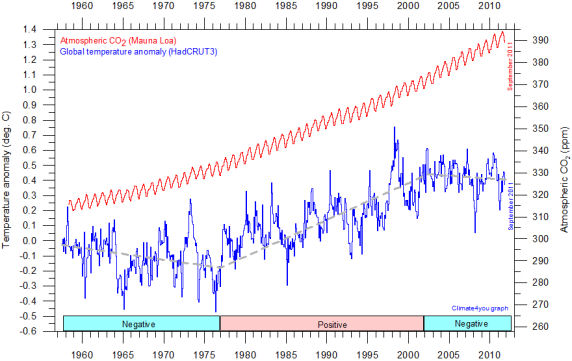
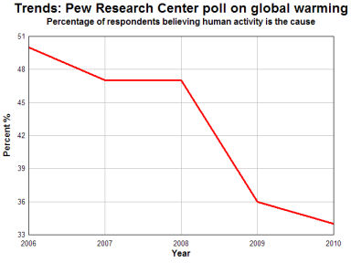
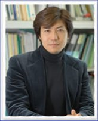
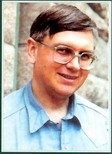

Paroles de grands chercheurs sur le réchauffement climatique (billet le plus récent, le 10/01/2014)

Il est coutumier de lire dans la presse ou d'entendre répéter dans les médias que les quelques "rares" chercheurs (NDLR : Ils sont quand même plusieurs milliers répertoriés (voir un exemple, ici, ( liste dans la colonne de gauche) ou encore ici, une pétition auprès du gouvernement canadien) qui contestent que l'effet de serre provoqué par l'homme soit le responsable du réchauffement climatique, sont de simples déviants, incompétents, mal informés voire financés par les lobbies pétroliers comme EXXON Mobil...ou encore des "flat-earthers" (comme disent les américains : ceux qui croient encore que la terre est plate !) et même, des négationnistes comme ceux qui nient l'existence de la Shoah. Mais où en sommes nous arrivés ?
J'ouvre cette rubrique pour équilibrer le débat et vous montrer qu'il n'en est rien et que de grands experts en climatologie ou dans les sciences fondamentales de l'espace ou de la terre, se donnent beaucoup de mal pour faire entendre un tout autre discours que celui qui est propagé par le GIEC, les écologistes, relayé par la grande presse et les politiques en mal de popularité. Jusqu'au Vice-Président du GIEC, lui-même, qui n'est pas d'accord avec la Pensée Unique ! Comme vous allez le voir, les quelques contestataires que je cite ne sont pas débutants. Au contraire, ce sont tous des spécialistes chevronnés. Et ils ne mâchent pas leurs mots pour dire ce qu'ils pensent du GIEC et de ses conclusions ...
En voici la liste qui s'allonge, jour après jour : Garth Paltridge, Pierre Darriulat, Marc Fontecave, Lennard Bengtsson, Hans Von Storch, CarterII, ChristyII, LovelockII, NASA, Fritz Vahrenholt, Istvan Marko, Henri Masson, Chercheurs du GIEC, Judy Curry (III), Ivar Giaever (II), Richard Lindzen (II), Mike Hulme II, Judith Curry I et II, William Nierenberg, Ian Giaever, Robert Jastrow, Hal Lewis, Pierre Morel, James Lovelock, Pierre-Gilles de Gennes, IOP; Andrew Lacis, Petr Chylek, Mike Hulme, Vincent Courtillot, Mojib Latif, Jan Veizer, Rapport JSER, John Theon, Roger Pielke Sr, Frank Tipler, William Happer, Ian Plimer, William R. Cotton, Harrison Schmitt, Cliff Ollier, Roy Spencer, Yury Izrael, Khabibullo Abdoussamatov, Richard Lindzen, Marcel Leroux, Bill Gray, Paul Reiter, Frederick Seitz, Vincent Gray, Antonio Zichichi, Augie Auer, Michael Griffin, Robert Carter, Reid Bryson, Nils-Axel Mörner, Tom V. Segalstad, Madhav L. Khandekar, Al Pekarek, Tim Patterson, Freeman Dyson, Tim Ball, John Coleman, Daniel Botkin, David Douglass, John Christy, Fred Singer, Syun Akasofu, Rosa Compagnucci, Juan Minetti, Eduardo Toni, Oleg Sorokhtin, Jose Joaquim Delgado Domingos, Hendrik Tennekes, Art Douglas; Howard C. Hayden, Don J. Easterbrook, Kunihiko Takeda, Garth Paltrdige, Stan Goldenberg, Arun D. Ahluwalia, Roger W. Cohen... Tous des scientifiques tout-à-fait qualifiés pour parler du fameux "réchauffement climatique". Et ce ne sont pas les seuls. N'oubliez pas les quelques 9000 et quelques docteurs ès sciences qui ont signé la pétition ici. Et les plus de 400 spécialistes, dont on peut trouver la liste ici et qui s'étaient exprimés rien qu'en 2007...
Malheureusement et hormis les articles accessibles du regretté Marcel Leroux (voir sa dernière vidéo, tournée peu de temps avant son décès), la plupart de ces articles et de ces déclarations sont rédigés en anglais (comme d'ailleurs la plupart des livres publiés par Leroux). Je vous traduirai les articles en aussi fidèlement que possible.
A partir de Février 2013, on trouvera la suite des nombreuses "paroles de chercheurs" dans les NEWS.
04 Février 2013 : Robert Carter, géologue australien spécialisé dans l'environnement, explicite ses analyses sur le réchauffement climatique. Bob Carter que j'ai déjà mentionné dans cette page, a rédigé un article pédagogique en réponse à un article d'une climatologue dans la ligne du GIEC. Comme à son habitude, Carter fait preuve d'une certaine modération et même si on n'est pas forcément d'accord avec toutes ses déclarations (notamment au vu de plusieurs articles scientifiques récents analysés sur ce site), son texte a le mérite de résumer, en termes simples, accessibles au public, quelques fondamentaux de la controverse climatique telle qu'elle existe actuellement entre nombre de "climato-sceptiques" ou "climato-réalistes" d'une part et les tenants 'climato-alarmistes" de la position officielle du GIEC, d'autre part. Son texte est intitulé : "Une perspective différente, vue de l'Australie" (NdT : En langage courant, "down under" désigne l'Australie ou la Nouvelle Zélande qui sont effectivement situées en bas et en dessous sur la représentation conventionnelle du globe terrestre. Bob Carter, photo ci-contre, est australien) par le Professeur Robert (Bob) Carter Note préliminaire : Dans la suite, Bob Carter utilise le sigle DAGW qui signifie "Dangerous Anthropogenic Global Warming" en lieu et place du traditionnel AGW. En effet, comme le rappelle Carter, le climat pourrait modérément se réchauffer, comme il l'a fait dans le passé, sans que cela n'entraine nécessairement des catastrophes. Ce qui est en cause, selon Carter, c'est le caractère "dangereux" du réchauffement mis en avant par les émules du GIEC.
Ainsi, Robert Carter résume, en les simplifiant, quelques points de vue partagés par un grand nombre (sans doute la majorité) des scientifiques qui s'opposent au GIEC. Cependant, il me faut aussi faire remarquer que les points de vue qu'il déclare partager avec Katharine Hayhoe (et donc le GIEC) ne sont pas admis par tous les climato-sceptiques (-réalistes), y compris par des chercheurs expérimentés. En particulier, et parmi d'autres, les Professeurs Ole Humlum d'une part et Murry Salby, d'autre part, ne pensent pas que "les émissions humaines s'accumulent dans l'atmosphère" comme je l'avais expliqué dans un billet précédent. D'autres scientifiques professionnels ne sont pas convaincus non plus que la variation du taux de CO2 contenu dans l'atmosphère induise un réchauffement significatif du globe. Ils pensent que d'autres causes naturelles, actuellement négligées telles que l'activité solaire et/ou les oscillations océaniques de longue durée, jouent un rôle prépondérant. Quoiqu'il en soit, les lecteurs attentifs de ce site ne seront pas surpris des résultats des quelques tests énoncés par Bob Carter. On pourra aussi noter, comme je l'ai fait à plusieurs reprises, que Carter rappelle, une fois de plus, que les controverses sur les causes du réchauffement climatique trouvent leur origine, avant tout, dans une série de questions relatives à la science et non à la politique où à la philosophie. Bien que certains s'obstinent à affirmer le contraire, pour des raisons qu'il est facile d'imaginer, il ne s'agit de rien d'autre que d'un débat scientifique comme il y en a toujours eu dans la longue histoire des sciences.
"Jusqu'à ce que nous comprenions mieux la variabilité climatique interne (NdT: cad naturelle), nous ne savons tout simplement pas comment calculer la sensibilité climatique au forçage des gaz à effet de serre."... Judith Curry n'est pas (et de loin) la seule à se poser de bonnes questions, comme nous le verrons bientôt. Stay tuned !
|
|||||||||||||||||||||||||||||||||||||
|---|---|---|---|---|---|---|---|---|---|---|---|---|---|---|---|---|---|---|---|---|---|---|---|---|---|---|---|---|---|---|---|---|---|---|---|---|---|
25 Août 2012 : John Christy fait le point devant les Sénateurs US. Il m'a semblé utile de faire partager à mes lecteurs(trices) le contenu de la récente déposition de John Christy auprès du Sénat Américain. Son témoignage est particulièrement intéressant en ce sens qu'il fait le point sur un certain nombre de questions importantes qui font débat, en ce moment même, dans le (petit) monde de la climatologie. D'autre part, s'adressant à des personnels politiques, John Christy a fait un effort méritoire de pédagogie et de simplification pour mettre des questions difficiles à la portée de l'auditoire. Le texte de son exposé peut donc être lu et assimilé même par des non-spécialistes. Les sénateurs avaient convié 7 personnalités scientifiques à venir témoigner sur le sujet titre. Parmi ces dernières et pour ce qui nous intéresse ici, deux d'entre elles ont particulièrement retenu l'attention. Il s'agit du Dr. Christopher B. Field (Director, Department of Global Ecology, Carnegie Institution for Science; Professor of Biology and Environmental Earth Science, Stanford University) qui est le co-président du groupe 2 (Le WG2) du prochain rapport AR5 du GIEC et du Professeur John Christy (Distinguished Professor, Director of Earth System Science Center, Department of Atmospheric Science University of Alabama in Huntsville) A noter que la présentation du Dr Chris Field devant les sénateur a fait l'objet d'une violente critique par un spécialiste de la question, le Prof. Roger Pielke Jr ( le fils du climatologue R. Pielke Sr. souvent mentionné dans ce site) A noter que R. Pielke Jr n'est pas un climato-sceptique. Cependant, il reproche vertement à Chris. Field d'avoir trompé les Sénateurs US (le titre du billet de Pielke: "Un auteur principal du GIEC trompe le Congrès US". En substance, Pielke Jr montre que Field a gravement déformé les conclusions prudentes du rapport SREX (Special Report for Managing the Risks of Extreme Events and Disasters to Advance Climate Change Adaptation) du GIEC, publié récemment, lequel estimait, en bref, que, compte tenu des données disponibles, aucun evénement métérologique extrême ne pouvait raisonnablement être attribué au réchauffement climatique anthropique. De fait, le discours de Field était notablement plus alarmiste que le rapport SREX du GIEC. 2) Le témoignage du Dr. Christy. John Christy (photo ci-dessus prise pendant la déposition) est bien connu des lecteurs de ce site. Il s'est présenté aux sénateurs de cette manière :
De fait, John Christy est célèbre et a été récompensé par la NASA pour avoir mis au point (avec Roy Spencer) les méthodes de mesure de la température de différentes tranches de l'atmosphère au moyen de capteurs installés sur les satellites de la NASA. Le témoignage de John Christy est disponible aussi bien en vidéo qu'en texte écrit, rédigé par l'auteur. Avec l'aide de deux collègues, Pensee-Unique.fr a assuré la traduction en français du texte écrit. Ce texte est disponible, dans son intégralité, ci-dessous (en pdf).
Dans ce billet, je me contenterai de citer quelques extraits significatifs (dans des encadrés verts) de la déposition de Christy, en les faisant précéder d'une courte introduction pour les replacer dans leurs contextes et en y ajoutant, éventuellement, quelques compléments. La déposition de John Christy s'articule autour de cinq points principaux que je vais citer dans l'ordre de l'exposé. Les extraits du témoignage de Christy figurent dans des encadrés verts.
Christy introduit son exposé sur cette section de l'exposé :
Christy fait ainsi remarquer à ses auditeurs que, depuis quelques mois, les médias (surtout) et les scientifiques proches du GIEC ont tout particulièrement mis l'accent sur une augmentation (supposée) des événements "extrêmes, comme beaucoup l'auront déjà remarqué. Ces affirmations alarmistes, reprises en boucle par tous les médias, notamment francophones, ne manqueront pas de surprendre tous ceux qui ont parcouru les pages de ce site qui ont montré à plusieurs reprises que ni les cyclones, ni les ouragans, ni les inondations, ni les sécheresses n'ont connu une recrudescence statistiquement significative, par rapport au passé, durant les dernières décennies. Ces constats ont d'ailleurs été confirmés par une étude exhaustive internationale (The Twentieth Century Reanalysis Project) couvrant la période 1872 à 2011, menée par Gil Compo et une trentaine de collègues, que j'avais décrite dans la page "calamités". Le résultat de cette étude, (citée par John Christy lors de son exposé), montrait que si les événements "extrêmes" avaient été bien présents tout au long de la période étudiée, rien ne distingue la période récente des périodes précédentes. Ce constat recoupe le travail des historiens. De fait, on ne discerne aucune tendance, ni positive ni négative. Les conclusions du rapport SREX du GIEC lui-même, expliquent qu'il est impossible de trancher dans un sens ou dans l'autre, à ce propos. Dès lors, on peut se demander pour quelle raison, les médias, quelques scientifiques et, notamment des responsables de l'OMM (tel Michel Jarraud), se sont efforcés et s'efforcent actuellement d'accréditer l'idée que nous connaissons ou pourrions connaître une recrudescence catastrophique des événements météorologiques "extrêmes" ? De fait, il faut bien reconnaître que, dans le même temps et en parallèle, on entend de moins en moins fréquemment évoquer la hausse des températures qui, selon certains et selon les modèles informatique, ne devait pas manquer de se produire à une vitesse accélérée, accompagnant inéluctablement, disait-on, la hausse du taux de CO2 dans l'atmosphère. Ci-contre, voici le relevé mensuel des anomalies de températures vues par les satellites (ici à partir de la base de données RSS) de 1997 à nos jours (Juillet compris) . (échelle et courbe en bleu). Les autres bases de données donnent des résultats similaires comme on pourra le vérifier dans ce graphique interactif. Le graphe, ci-contre, montre également la croissance imperturbable du taux de CO2 (données de l'ESRL/NOAA-Mauna Loa) durant la même période. (échelle et courbe en rouge).
Voici le même type de graphe (mais de 1958 à fin août 2012) rapporté par le climatologue Norvégien Ole Humlum (site climate4you). C'est le relevé de températures globales du GISS de la NASA comparé au taux de CO2 dans l'atmosphère mesuré à Mauna Loa.
Ou encore, voici, vu par le Met-Office (Hadley Center) UK sur une plus longue durée, la variation annuelle de la température des continents du globe. On perçoit également très bien la stagnation de la température, voir sa légère inflexion négative, durant la dernière décennie.
Le fait est que, depuis une quinzaine d'années, la hausse des températures ne suit pas la hausse de la concentration de CO2 dans l'atmosphère. Il en résulte que l'on observe un décrochage sérieux entre les observations et les scénarios/projections/prévisions des modèles informatiques les plus récents, comme Christy le démontre lui-même (voir ci-dessous dans la section B), ce qui constitue évidemment une sérieuse objection quant à la pertinence des modèles utilisés par le GIEC. John Christy poursuit son introduction en déclarant que :
Dans cette section, John Christy s'intéresse plus spécifiquement au Middle West américain et de manière plus générale aux zones qui ont été récemment affectées par une assez forte et persistante vague de chaleur et de sécheresse aux USA. Christy s'oppose aux déclarations de ceux qui ont affirmé que la vague de chaleur récente était "sans précédent" (ce qui peuvent paraître curieux à tous ceux qui connaissant l'histoire des Etats-Unis et qui se souviennent des séries des terribles sécheresses des années 30 (le dust bowl) qui ont ravagé une grande partie des Etats-Unis pendant plusieurs années consécutives). De fait, Christy signale que les statistiques avancées par certains prennent exagérément en compte des stations récemment implantées donnant ainsi un poids excessif aux années récentes, au lieu de se concentrer sur les stations de mesures qui couvrent la totalité des 80 dernières années (et englobent donc les années 30). Si on utilise, de préférence, les stations de mesure qui couvrent cette longue période, on obtient des résultats bien différents de ceux qui ont été publiés dans la presse et soutenus par quelques scientifiques. Ce graphe est intitulé (dans le cartouche) : Nombre des records quotidiens des températures maximales (TMax) de 1895 à 2011 à partir de 970 stations du réseau US (USHCN) qui possèdent au moins 80 années d'observation.. Ce graphe montre qu'il n'existe aucune tendance identifiable de l'augmentation du nombre des records de température durant cette période.
Il en est de même pour les sécheresses et la pluviométrie, aux Etats-Unis, ainsi que le montre le graphique suivant (issu du NCDC de la NOAA) qui indique les fractions de la surface des Etats-Unis affectées par des sécheresses (en rouge, en haut) et par des hautes pluviométries (en vert, en bas). La quantification est basée sur l'indice de classique de sécheresse dit de Palmer, comme cela est indiqué dans le graphique. Là encore, il est certainement difficile de déceler une tendance quelconque dans un sens ou dans l'autre.
Dans la seconde partie de son exposé, Christy compare les résultats des observations de l'évolution de la température globale avec les projections/scénarios/prévisions des plus récents modèles tels que devant figurer dans le prochain rapport (l'AR5) du GIEC.
C) Les mesures thermométriques des température de surface (Tsfc) sont biaisées et la hausse de température Tsfc est surestimée. Christy introduit cette section en précisant que :
Dans la suite de son exposé, Christy se réfère aux résultats de plusieurs études récentes (telles McNider et al, 2012, observations et modèles) qui expliquent que la mesure des valeurs minimales de températures, TMin, sont grandement affectées par un phénomène aérologique lié à la turbulence des zones environnant les stations de mesure. Il écrit :
Christy poursuit son exposé en rappelant que la température moyenne globale est calculée en faisant la demi-somme des températures maximales et minimales (TMax+TMin)/2, et ceci pour chaque station. Ainsi, si la mesure de la température Tmin est affectée par les perturbations mentionnées ci-dessus, la totalité des bases de données s'en trouve contaminée. A titre de solution, Christy suggèrent soit d'utiliser seulement les données TMax, soient d'utiliser les mesures satellitaires qui mesurent directement le contenu thermique de l'atmosphère et sont exemptes des effets de surface. Quid du Hotspot ? Dans la suite de l'exposé, Christy donne également son point de vue sur le "consensus" qui reste l'argument "massue" utilisé pour clore un débat engagé avec ceux qui expriment leurs doutes. D) Le "consensus" largement diffusé n'est pas représentatif de la science du climat.
A noter, au sujet du fameux "consensus", un échange amusant entre la sénatrice Barbara Boxer (qui a beaucoup fait en faveur des thèses défendues par le GIEC) et John Christy. Vous pourrez assister directement à cette interpellation et à la réponse de Christy en visualisant la vidéo prise lors de la séance d'audit au Sénat. E) En réalité le CO2 est bénéfique pour la planète et tenter d'en limiter la croissance serait vain. Christy écrit :
John Christy illustre son propos avec la figure ci-contre dont les données proviennent du Département de l'Energie US (AIE).
Conclusion : Ce bref résumé laisse de côté une partie notable de la substance de l'exposé de John Christy. Je vous invite donc à lire avec attention la traduction française du texte qu'il a lui-même rédigé à l'occasion de sa déposition. Ce texte, très actuel sur les débats qui agitent la science climatique, est rédigé de manière pédagogique et compréhensible pour les lecteurs non spécialistes En complément, je signale, pour les lecteurs anglophones, un texte publié dans le WSJ (Wall Street Journal) sous la plume de trois physiciens, Richard Lindzen, Will happer et Roger Cohen déjà cités dans cette même page. En outre, il existe, sur Skyfall, une version en français du billet de Judy Curry au sujet du témoignage de Christy. A suivre.... |
|||||||||||||||||||||||||||||||||||||
19 Avril 2012 : Des vétérans de la conquête de l'espace de la NASA s'élèvent contre les prises de position de l'agence sur le réchauffement climatique. Quarante neuf d'entre eux écrivent une lettre demandant plus de modération et de prudence à l'administrateur de l'agence. En réalité, leur prise de position reflète surtout l'exaspération croissante d'un certain nombre des acteurs de la "conquête de l'espace", face au comportement jugé "extrémiste" du responsable du département de l'agence qui s'occupe des affaires climatiques, James Hansen, le directeur du Goddard Institute for Space Studies de la NASA.
1) Introduction : Comme les lecteurs de ce site le savent, plusieurs des grandes Institutions ou Sociétés Savantes des USA dont les organes directeurs ont officiellement pris fait et cause pour le modèle du changement climatique anthropique tel qu'il est promu par le GIEC de l'ONU, ont dû faire face à des récriminations, souvent acerbes, d'une fraction notable de leurs membres les plus éminents et aussi, le plus souvent, de la part de leurs vétérans. C'est ainsi que j'ai eu l'occasion d'évoquer les conflits récents qui ont eu lieu au sein de l'American Physical Society (l'APS, 40000 membres inscrits) au sujet du réchauffement climatique :
De même, un éditorial complaisant vis à vis des thèses du GIEC de la part d'un éditeur d'une revue de chimie, (C&EN), a provoqué une levée de bouclier de chimistes adhérents à l'ACS (American Chemical Society). Ainsi et contrairement à l'image qui en est donnée au grand public par les médias, il apparaît que les milieux scientifiques de ces diverses sociétés savantes sont, en réalité, divisés sur les causes (humaines et/ou naturelles) du réchauffement climatique. De fait, l'existence même d'un réchauffement climatique ne semble pas faire l'objet de controverses. C'est la nature des causes de ce réchauffement qui fait l'objet de polémiques. Cependant, la situation qui prévaut à la NASA est notablement différente de celle des autres associations de scientifiques, comme cela apparaît clairement si on lit la lettre avec un peu d'attention. 2) La lettre et les signataires : Cette lettre (original, entre autres, ici) n'a pas été adressée à la presse par ses auteurs. Elle est, en réalité, un courrier interne à l'organisme.
Voici la liste des signataires de cette lettre. Les noms sont suivis de l'indication des fonctions occupées à la NASA. Le nombre des années passées au service de la NASA est indiqué pour chaque signataire : Cette liste inclut notamment les noms d'anciens directeurs du JSC (Le Johnson Space Center de la NASA qui est le centre opérationnel responsable de la conception et des tests des engins spatiaux) tels que le Dr. Christopher C. Kraft, qui a notamment été célébré pour avoir sauvé l'équipage d'Apollo 13 ainsi que Gerald Griffin, les noms de 7 astronautes ayant participé aux missions Apollo et des scientifiques responsables des vols spatiaux.
3) Compléments et rappels :
4) L'arrière-plan : Le militantisme du responsable du GISS de la NASA. Beaucoup considèrent que ce sont les déclarations ultra-alarmistes de James Hansen devant le Sénat US, en 1988, qui ont véritablement lancé et popularisé le concept du "réchauffement climatique anthropique".
Le "cartoon" de Josh, ci-contre à droite, montre James Hansen sur la lune, coiffé de son célèbre chapeau alors qu'il vient de recevoir une médaille lors de son récent séjour à Edinbourgh en Ecosse. Hansen déclare "Ah gut a maydel" (sans doute une moquerie de Josh sur l'accent écossais). Hansen est reconduit par un astronaute de la NASA qui déclare " Il est temps de ramener le Dr. Hansen sur Terre".
Il est évident que l'activisme politique très en pointe de James Hansen qui est toujours officiellement employé par la NASA, ne pouvait que susciter des réactions très négatives dans les milieux scientifiques de l'agence spatiale américaine, très peu enclins à ce genre de comportement. En effet, jusqu'à présent, la NASA avait exigé une neutralité politique et scientifique absolue de la part de ses employés comme l'a déclaré le supérieur hiérarchique de Hansen, le Dr Theon ou encore, l'ancien administrateur Michael Griffin qui avait rappelé récemment que la mission de la NASA consistait à fournir des données scientifiques validées et non pas à extrapoler des conclusions et à indiquer (exiger ?) une ligne d'action de la part des politiques. La réponse de la NASA : Les autorités de l'agence spatiale ont répondu à la "lettre des 49" par la voix du Dr. Waleed Abdalati. Ce dernier affirme que : 5) La couverture médiatique : Compte tenu de la notoriété des signataires et du grand intérêt porté par le public US à la conquête spatiale, cette lettre a reçu un certain écho, du moins dans les médias US (mais pas dans les médias francophones). Il faut savoir que les américains sont particulièrement fiers des innombrables succès remportés par les équipages des navettes spatiales et des vaisseaux spatiaux durant la grande époque de la NASA, ainsi d'ailleurs que du lancement des multiples satellites qui permettent l'observation de la planète et de l'espace (Hubble). Aux USA, les astronautes sont le plus souvent considérés comme de véritables héros. Comme toujours aux USA et selon leur tendance politiques (Républicains ou Libéraux), les communiqués de presse au sujet de la "lettre des 49" sont soit élogieux, soit critiques. Pour ce qui est de l'opinion publique aux USA, Gallup vient de publier les résultats d'un sondage tout récent au sujet des préoccupations des américains pour les questions environnementales. Ce sondage place le "réchauffement climatique" en bon dernier dans le classement. Et, de manière générale, jusques et y compris pour ce qui est du réchauffement climatique, les inquiétudes sont en baisse notable depuis 2000. Stay tuned ! A suivre ... |
|||||||||||||||||||||||||||||||||||||
15 Février 2012 : Le Prof. Dr. Fritz Vahrenholt, l'un des tout premiers porte-drapeaux du mouvement vert en Allemagne est devenu climato-sceptique. C'est ce que les anglophones appelleraient une "Breaking News", c'est à dire "une nouvelle fracassante" qui, sans aucun doute, ébranle sérieusement l'alarmisme climatique en allemagne et bien au delà de ses frontières. Tout d'abord, il est important de se faire une idée précise du personnage. 1) Qui est Fritz Vahrenholt ? Comme vous allez le constater, Fritz Vahrenholt (ci-contre) possède un Curriculum Vitae exceptionnellement riche pour tout ce qui concerne les préoccupations environnementales, le développement durable et ses corollaires. Successivement Ministre de l'Environnement régional et conseiller pour l'environnement durable auprès des chanceliers Schröder et Merkel, il a cumulé, tout au long de sa carrière un nombre impressionnant de responsabilités importantes, toutes en relation avec l'environnement et la durabilité. Voici le CV (en anglais, mais qui doit être transparent pour les francophones) de Fritz Vahrenholt, tel qu'il est présenté sur le site de la société dont il est le PDG (RWE Innogy).
Du point de vue universitaire, Fritz Vahrenholt est ce que les allemands appellent un Professeur-Docteur. Il est titulaire d'un doctorat en Chimie et actuellement Professeur au département de chimie de l'Université de Hamburg. Tout ceci implique que Vahrenholt est parfaitement en mesure de suivre la littérature scientifique qui concerne le changement climatique. C'est d'ailleurs ce qu'il a déclaré avoir fait depuis plusieurs années. 2) Le livre : Bien que le Prof. Dr. Vahrenholt ait déjà parfois manifesté quelques inquiétudes notamment sur les exagérations et sur les orientations politiques de scientifiques allemands promoteurs du réchauffement climatique, comme nous le verrons ci-dessous, la publication, le 7 février, chez l'éditeur Hoffmann und Kampe de son ouvrage intitulé 'Die Kalte Sonne, Warum die Kimakatastrophe nicht stattfindet" (Le Soleil froid. Pourquoi la catastrophe climatique n'a pas lieu "), avec le Dr. Sebastian Lüning (un géologue/paléontologue, photo ci-contre), a littéralement fait l'effet d'une bombe. En bref, si les auteurs acceptent l'idée que le CO2 réchauffe (faiblement) l'atmosphère et la planète ils pensent qu'il le fait beaucoup moins que ne l'affirment le GIEC et ses supporters. Pour être plus précis, si les auteurs conviennent du rôle direct du CO2 (c'est à dire une augmentation d'environ +1°C pour un doublement de sa concentration ce qui est pratiquement sans conséquences), ils sont très critiques sur les rétroactions avancés par le GIEC. Comme on le sait, ce sont ces effets rétroactifs (c'est à dire ceux qui résultent, au second ordre, du réchauffement de la planète induit au premier ordre par le CO2 anthropique) qui conduisent le GIEC et ses promoteurs à avancer des fourchettes aussi élevées que des variations de température globale de + 3 à + 6°C (ou plus) pour 2100. 3) La presse allemande en parle et Fritz Vahrenholt répond à des interviews : Il est inutile de préciser que la sortie du livre " Die Kalte Sonne", signé par une personnalité aussi célèbre que Fritz Vahrenholt, a fait grand bruit dans la presse allemande. Des agences de presse et de nombreux organes de presse étrangers (Forbes, entre autres) en ont également informé leurs lecteurs. Note : les caractères engraissés dans le corps des textes le sont de mon fait. Le magazine hebdomadaire FOCUS (concurrent du Spiegel) titre (le 05/02/11): "Le retour du soleil ébranle l'Allemagne" . L'article (En allemand, traduction en anglais) commence ainsi :
...Ce qui rejoint très exactement les observations de Richard Lindzen et de beaucoup d'autres.
Au sujet des enjeux énergétiques, le point de vue de Fritz Vahrenholt, PDG de TRW et grand promoteur des énergies renouvelables depuis de nombreuses années, mérite d'être connu :
Au sujet de la vague de froid récente qui a congelé l'Europe et de l'apport des énergies renouvelables, Vahrenholt ne mâche pas ses mots au sujet du Ministre de l'Environnement allemand. Toujours dans Die Welt :
Deux journalistes du Der Spiegel On line International ont réalisé un interview de Fritz Vahrenholt. "Transgression des tabous du réchauffement climatique".
4) Fritz Vahrenholt s'était inquiété, en Mai 2011, du contenu d'un rapport émanant du Conseil pour le climat auprès de la Chancelière Merkel. Suite à la publication d'un document à consonance fortement politique particulièrement coercitif "pour sauver la planète", signé par Hans J. Schellnhuber (photo ci-contre) qui est le Directeur du Potsdam Institut (PIK) et le conseiller sur les questions climatiques de la Chancelière Merkel, Fritz Vahrenholt, comme une grande partie de la presse allemande, s'était alarmé. Titre : "Allemagne : Glissage incontrôlé vers l'écolo-dictature" L'article qui suit est de Fritz Vahrenholt. Il constitue une réponse au document signé par H. J. Schellnhuber et quelques membres du conseil auprès de la Chancelière (dont Stefan Rhamstorf) intitulé " Le Monde en transition : Contrat social pour une grande transformation". En voici un extrait significatif :
5) Conclusions : Les textes précédents, extraits de journaux, d'interviews et de déclarations ou d'article de Fritz Vahrenholt permettent de se faire une idée assez précise des raisons qui ont poussé au changement radical du point de vue de cet éminent activiste écologiste au sujet de l'alarmisme au réchauffement climatique et à ses corollaires. D'une part, et comme beaucoup (pour ne pas dire tous les décideurs et une fraction importante du public), Fritz Vahrenholt n'avait, au début et en l'absence d'informations détaillées et d'une bonne connaissance du sujet, aucune raison de remettre en question les démarches et les affirmations du GIEC et de ses supporters, largement soutenus par les médias allemands et étrangers. Le dernier texte de Vahrenholt qui figure ci-dessus dans ce billet, est clairement le reflet d'une grande inquiétude (d'un glissement vers une éco-dicature qu'il mentionne aussi lors d'une interview). Le texte du WGBU et de H. J. Schellnhuber lui a visiblement ouvert les yeux sur les objectifs politiques qui accompagnent, dans certains cercles et notamment à l'Institut de Potsdam, l'alarmisme du réchauffement climatique. Bonne question. Quoiqu'il en soit, "Bienvenue au Club, Prof. Dr. Vahrenholt !" __________________________________________________________________________________________________ A suivre (sans aucun doute)... Je compléterai bientôt en fonction des réactions qui ne tarderont pas.
|
|||||||||||||||||||||||||||||||||||||
19 Novembre 2011 : Les piliers du GIEC s'interrogent et proposent des réponses divergentes à la question : "Pourquoi, en dépit de l'accumulation persistante des gaz à effets de serre, la hausse de la température de la planète a-t-elle marqué le pas pendant la dernière décennie ?"
Alors que nos médias unanimes et quelques intervenants sur les forums de ces mêmes médias ainsi que quelques blogs, s'efforcent de convaincre le public que tout va pour le mieux dans le meilleur des mondes de la science climatique, que l'apocalypse est pour demain, que "c'est l'année la plus chaude" que "la science est comprise", que le consensus est unanime et que les observations se conforment parfaitement aux prévisions (prédictions, scénarios), les climatologues - les professionnels - eux, se font beaucoup de souci. Comme chacun le sait et cela ne fait guère de doute, le taux de CO2 présent dans notre atmosphère augmente de manière constante, voire avec une légère accélération depuis 1945.  De même Phil Jones fut contraint de convenir de l'absence de réchauffement significatif depuis 1995, en 2010 lors d'un entretien public à BBC News.
Une fois n'est pas coutume. L'essentiel de la partie suivante de ce billet est une traduction d'un article du Prof. Roger Pielke Sr, lequel article est lui-même constitué d'extraits d'un article assez copieux rédigé par Paul Voosen qui est reporter scientifique à la revue peer-reviouvée "Energy & Environnment". Ce billet est assez long et je m'en excuse à l'avance. Cependant, Il mérite une lecture attentive parce qu'il est particulièrement révélateur de l'état actuel de la science climatique. D'autre part, son style est assez narratif et facile à suivre. Ci-dessous, les traductions des textes du billet de Roger Pielke Sr. apparaissent comme des encadrés sur fond jaune. Mes propres remarques ou les transitions entre les différentes sections apparaissent sur le fond bleu-vert. Une remarque préliminaire de Pielke qui rejoint mes commentaires précédents :
Pour ma part, je me suis contenté, pour une meilleure lisibilité, d'engraisser les noms des chercheurs concernés par chaque paragraphe.
Roger Pielke Sr. conclut son article de la manière suivante :
On ne peut mieux dire que Roger Pielke Sr. : "La question scientifique N'EST PAS résolue." -Trenberth s'interroge sur la chaleur perdue et pense l'avoir trouvée dans les fonds sous-marins. Il lui faut encore quelques années pour pouvoir discerner l'influence (ou non) du CO2 anthropique dans l'évolution assez étonnante (pour eux) des températures. En soi, il n'est nullement critiquable que des chercheurs hésitent, avancent des hypothèses et des explications parfois contradictoires, et que, finalement, ils ne sachent pas pourquoi les températures n'ont pas augmenté depuis plus de dix ans, contrairement aux prédictions de la vingtaine de modèles que l'on croyait tout-puissants, jusqu'alors. La recherche ne sait pas tout, surtout en matière de climatologie, contrairement à ce que les décideurs et les activistes voudraient croire ou nous faire croire... pour passer à l'action. Mais ce qui est hautement critiquable, c'est de ne pas mettre au grand jour, ses incertitudes et ses hésitations, ses échecs, les divergences de point de vue d'un chercheur à l'autre (par exemple entre James Hansen et Kevin Trenberth qui diffèrent sur rien moins que le bilan énergétique de la planète). Ce qui est hautement critiquable, c'est de prétendre qu'il existe un consensus entre les chercheurs proches du GIEC et que le système climatique est compris. Il ne l'est pas. Il faut le dire. Les divergences sont naturelles et existent dans de nombreux secteurs de la recherche scientifique mais dans le cas présent, il faut le dire car tout cela peut avoir (et a déjà eu) de graves conséquences, au plan local comme au plan mondial. Cependant, un lecteur attentif aura discerné au travers de ces textes qu'une tendance relativement nette semble prendre corps : La prise en compte plus rationnelle de la variabilité naturelle du climat, indépendamment du CO2. C'est d'ailleurs ce que l'on perçoit également dans le texte relativement prudent du récent Summary for Policymakers (Résumé pour les décideurs) du dernier rapport spécial "sur les événements extrêmes" du GIEC, dont on peut lire une analyse sur le blog de Judith Curry. A noter également qu'aucun des scientifiques, proches du GIEC, cités ci-dessus, n'évoque une possible (nécessaire ?) remise en question plus ou moins fondamentale des modèles climatiques qui ne reproduisent manifestement pas les évolutions du climat, depuis près de quinze ans et qui pourraient, tout autant, être remis en cause pour la question du "hotspot". Josh, le "cartoonist" US bien connu, notamment sur Bishop Hill et WUWT, a publié une illustration relative au texte ci-dessus.
De manière générale et du point de vue duquel se place Pensee-Unique, la situation actuelle est plutôt encourageante. Certaines certitudes sont remises en questions et les quelques inflexions, bien qu'encore un peu timides, semblent aller dans le bon sens. Stay tuned ! A suivre, donc ! Update du 20/11/11 : :Je n'ai réalisé qu'après coup qu'une excellente traduction du texte de l'article de Pielke Sr, avait déja été déposée par Marot sur le site Skyfall. |
|||||||||||||||||||||||||||||||||||||
Le temps passant, les sondages (notamment dans les pays anglophones) montrent que le public devient de plus en plus sceptique au sujet des thèses du réchauffement climatique anthropique. En parallèle avec un nombre croissant de scientifiques éminents qui se désolidarisent de cette affaire (e.g. Ivar Giaever, ci-dessous et la longue liste qui figure dans cette page), on voit à présent des hommes/femmes politiques anglophones qui n'hésitent plus à déclarer ouvertement leur scepticisme, comme, par exemple, lors de la course des primaires présidentielles aux USA. De manière générale et vous en verrez un autre exemple ci-dessous, les institutions et les climatologues proches du GIEC sont persuadés que la progression du scepticisme climatique dans le grand public et dans les milieux politiques, provient, non pas des doutes et des incertitudes que l'on peut nourrir sur la science qu'ils présentent comme un fait acquis, mais d'un défaut de communication de leur part. C'est donc cela qu'ils doivent améliorer, pensent-ils. Dans ce contexte, et comme le savent les lecteurs de ce site, le plus emblématique des climatologues alarmistes est, sans contexte, James Hansen (du GISS de la NASA). Ce dernier vient de faire une déclaration à la Royal Society (UK), répercutée dans les médias anglophones tel "The Independent UK" dont des extraits de l'article sont traduits ci-dessous (texte complet ici). La déclaration de J. Hansen y a fait grand bruit et elle va très exactement dans le sens de ce qui est décrit ci-dessus :
Cette déclaration de J. Hansen nous explique que si les climato-sceptiques ont sérieusement gagné en audience auprès du public, ce n'est pas à cause des multiples incertitudes de la science climatique ni à cause des nombreuses maladresses (pour rester aimable) commises par les zélotes du GIEC (Les courriels du Climategate, l'Himalyagate, le malariagate etc..) au cours des années passées. Ci-contre, un cartoon de Judy Curry en défenseur de La Science, dessiné par un des ses nombreux admirateurs. Le lien vers la réunion dont il est question est ici. Le sujet en discussion (NdT : sur le blog de Judy Curry) est relatif à la communication suivante : Note principale : Michael Crow, Président, Université de l'Etat de l'Arizona : “Les Universités et l'éducation transdisciplinaire pour le développement durable." A ce propos, Judy Curry écrit : (les caractères engraissés sont de PU)
(NdT : Je compléterais : ...et de porter un rude coup à la science, en général.) Judy Curry ajoute : "Il y a eu des applaudissements. Non pas une ovation debout, mais des applaudissement d'une fraction substantielle de l'audience de plus de 200 auditeurs. [...]Au moment de la pause, près de 20 personnes sont venues me remercier pour ce que j'avais dit, "Il fallait que quelqu'un le dise " ainsi que quelques autres qui ont aimé ce que j'avais dit mais qui semblaient entendre ce genre d'idée pour la première fois." Conclusion de Judith Curry : (Entre autres, JC nous parle d'Al Gore et de politique.) "La science du climat aux Etats-Unis, au moins au niveau institutionnel, semble avoir déraillé. La différence est énorme entre ce qui est mis en avant par l'administration Obama par rapport à celle de Bush (43) (Ndt : Pour faire la distinction entre les deux présidents Bush père et fils, Judy Curry indique le numéro du président : Bush père était le 41ème président des USA). Si on remonte à Bush 41, son administration a défendu une augmentation substantielle des budgets correspondant au soutien de la science climatique. Quand Al Gore défendait sa candidature comme président, de nombreux climatologues auxquels j'ai parlé, s'inquiétaient que Gore puisse s'imaginer que la science était résolue et qu'il se dirigerait tout droit vers les applications en ignorant la recherche scientifique dans ce domaine. Nous assistons en ce moment à la réalisation de tout ceci sous l'administration d'Obama.". Vu avec recul, le plan stratégique CCSP (NdT : US Climate Change Science Program) était plutôt bon et les questions qui étaient posées dans ce plan, sont loin d'être "résolues". Un participant (Stephan Rasey) au forum qui suivait cet exposé de Judy Curry sur son blog , a décrit, de manière imagée et humoristique, ce que pensent plusieurs commentateurs. Judy Curry s'est amusée de la remarque suivante qui en dit long sur le processus suivi, tel qu'il est perçu par beaucoup : "La formule originale contient une vérité qui dérange. Autrement dit, ce sont la politique et la communication qui ont déterminé le résultat de la recherche... avant que celle-ci ait seulement commencé. C'est d'ailleurs très exactement ce que Richard Lindzen avait déclaré, autrefois, à propos de la création du GIEC. Le 13 Octobre, Dans son blog, Judith Curry persiste et signe. Elle présente deux articles scientifiques traitant du conflit actuel entre l'activisme et la science qui vont tout à fait dans le sens de ces récentes déclarations. Suite du 21 Octobre 2011 : Sur son blog, Judy Curry rapporte, le 19 Octobre, sur le récent livre de Donna Laframboise. Donna Laframboise est une journaliste d'investigation canadienne. Elle gère le site anglophone "No frakking consensus".
Là encore, et au sujet du "Delinquent Teenager" (L'adolescent délinquant), Judith Curry ne mâche pas ses mots.
En effet, Judith Curry n'utilise pas la langue de bois. Il serait bon que nos "décideurs" prennent connaissance de ces différents points de vue et qu'ils lisent le livre de Donna Laframboise. A suivre, |
|||||||||||||||||||||||||||||||||||||
15 Sept. 2011 : Ivar Giaever, prix Nobel de Physique, démissionne de l'American Physical Society (la société savante des physiciens qui édite une quantité de revues renommées telles que les Physical Review, les Physical Review Letters etc). C'est au mois de Septembre que l'American Physical Society envoie, chaque année; un email à chacun de ses membres, pour leur demander de renouveler (moyennant finances ~173+ euros) leur adhésion, pour l'année suivante. L'ayant reçu, comme tous les autres adhérents, Ivar Giaever qui est (évidemment) un "fellow" ou membre élu de l'APS, a répondu qu'il ne désirait pas renouveler son adhésion et qu'il démissionnait de l'APS. Sa réponse email que vous trouverez ci-dessous explique clairement les raisons de son geste qui fait grand bruit dans le landerneau de la physique américaine et même mondiale (car une proportion importante des membres de l'APS est issue d'autres pays que les USA, comme moi-même). Ivar Giaever est un célèbre physicien Américain (et Norvégien), membre de l'Académie des Sciences US et d'une quantité d'autres institutions scientifiques, qui a reçu le prix Nobel de Physique en 1973, pour ses découvertes expérimentales sur l'effet tunnel dans les semiconducteurs. Voici le email de démission que Ivar Giaever a adressé à la responsable de l'APS, Mrs Kirby
Les responsables de l'APS devraient se faire du souci : Entre autres, l'ACS (American Chemical Society) et l'AMS (American Meteorological Society), ont également fait l'objet de récriminations de la part de certains de leurs vétérans "élus". Toujours pour la même raison... A suivre. |
|||||||||||||||||||||||||||||||||||||
08/03/11 : Richard Lindzen fait le point sur les incertitudes et les incohérences de la science climatique ainsi que sur les enjeux économiques, politiques, sociétaux etc. du débat sur le climat. Richard Lindzen, le Climatologue renommé du MIT, dont tous les lecteurs de ce site ont souvent entendu parler, (cette page, ce texte, ici et encore ici, entre autres ) a publié un texte, relativement concis, qui fait le point sur les divergences cruciales qui existent entre les modèles climatique et les observations. Dick Lindzen donne aussi son point de vue sur les raisons de la persistance de l'activisme climatique en dépit des graves incohérences et incertitudes dont souffre la science climatique. L'article original a été publié dans le site britannique du GWPF (The global warming policy Foundation, fondé en 2009 par Lord Lawson of Blaby avec le Dr Benny Peiser) dans le comité scientifique duquel siège Richard Lindzen aux côtés d'autres personnalités (dont Vincent Courtillot , Freeman Dyson, Will Happer, Al Lewis, Paul Reiter etc.). Voici une traduction en français de cet article récent de Dick Lindzen :
Un grand merci à jmr qui a déjà contribué à la traduction de plusieurs documents figurant sur ce site (et aussi sur Skyfall) dont, en particulier, la première version du rapport du NIPCC. Quelques remarques : -L'article de Lindzen, traduit ci-dessus est, en réalité, une mise à jour, implémentée à l'aide de résultats récents, du texte beaucoup plus détaillé qui vous avait été présenté dans cette page. A suivre.... |
|||||||||||||||||||||||||||||||||||||
14 février 2011 : Du rififi chez les scientifiques US.... Pour replacer ces événements dans leur contexte, il faut se souvenir que les dernières élections "mid-term" (à mi-mandat du Président élu) ont fait monter à la Chambre des Représentants U.S. une majorité de Républicains. La plupart des nouveaux élus de ce parti s'étaient déclarés climato-sceptiques lors de la campagne précédant les élections. Le Sénat, lui, a conservé une courte majorité Démocrate. Il faut aussi se souvenir que le Climategate (le scandale révélé en 2009 par le contenu des emails piratés sur le site du CRU de l'Université d'East Anglia au Royaume Uni) a été abondamment diffusé et commenté dans la presse et les médias américains. L'émotion a été considérable dans tous les pays anglophones qui ont pu lire le contenu des emails, même si, dans les pays francophones, l'affaire a été discrètement glissée sous le tapis par nos grands médias. Un grand nombre d'articles, signés par des scientifiques "mainstream" ou opposants ont été diffusés dans la presse américaine. La quasi totalité de ces articles témoignaient de l'étonnement voire de la révulsion des scientifiques (voir par exemple, ci-dessous, les billets sur Judith Curry, Mike Hulme, James Lovelock ou Petr Chylek) qui pensent que de telles pratiques ne peuvent être tolérées dans le milieu de la recherche. La position des climatologues mainstream (tels Hansen, Schmidt, Santer, Mann, Dessler, Jones etc.) est devenue, depuis lors, très difficile. D'autant plus que l'argument d'autorité qu'ils tenaient du GIEC a été mis à mal, suite à la découverte d'un certain nombre d'erreurs grossières exhumées du dernier rapport de cet organisme Onusien, sans compter la révélation qu'un certain nombre d'affirmations proférées dans le rapport AR4 du GIEC ne reposaient en fait, que sur des brochures émanant d'ONG telles que le WWF ou Greenpeace. Pensee-Unique.fr s'est fait l'écho de ces révélations qui ont suscité l'attribution d'un grand nombre de bonnets d'âne. Enfin, la défection ou la prise de recul de Judith Curry, la "grande prêtresse" du réchauffement climatique anthropique (comme elle se nomme elle-même) a certainement contribué à accentuer, chez les climatologues mainstream, une sorte de "mentalité d'assiégés". Bref, pour celui qui connaît bien toutes ces péripéties et l'état de la situation, comme les lecteurs assidus de Pensee-Unique.fr, les termes de la lettre des "18 climatologues mainstream" sont tout à fait transparents. Elle traduit l'inquiétude, sinon la panique, qui règne actuellement parmi ces derniers, à l'ouverture du 112ème congrès des Etats-Unis. De fait, s'inscrivant dans un vaste plan de réductions des dépenses fédérales, un député vient de déposer un texte visant à supprimer la contribution des USA au financement du GIEC. D'autres proposent de recentrer l'activité de la NASA autour de ses objectifs premiers (les planètes et les vols habités) et de cesser de financer les recherches climatiques du GISS de la NASA (Hansen et Schmidt), afin d'éviter de se faire devancer dans la course à l'espace, par les autres pays comme la Chine (et) ou la Russie. Les deux lettres (notamment la première) sont relativement longues. Je n'en donne ici que des extraits significatifs. La traduction intégrale des deux lettres (des scientifiques mainstream et des opposants) est disponible dans ce document (en pdf) séparé. (1) La lettre des climatologues "mainstream" (source) Le 28 Janvier 2011, Aux membres de la Chambre des Représentants et du Sénat des Etats Unis: "Sur l'importance de la Science dans le traitement du Changement Climatique" Alors que vous ouvrez vos délibérations lors des sessions du 112ème Congrès, nous vous invitons vivement à considérer la question du réchauffement climatique d'un oeil neuf. Le Changement Climatique n'est pas seulement une menace environnementale mais, comme nous le décrivons ci-dessous, il constitue des défis à l'économie des USA, à sa sécurité nationale et à la santé publique. Ce n'est pas notre rôle, en tant que scientifiques, de définir la manière de gérer des problèmes comme le changement climatique. Ceci est une affaire de politique qui doit justement être laissée à nos dirigeants élus qui en discutent avec tous les Américains. Mais, en tant que scientifiques, nous avons le devoir d'évaluer, de rapporter et d'expliquer la science qui sous-tend le changement climatique. Les négationnistes (Ndt : Sic) se cachent sous l'apparence du langage scientifique, en critiquant sélectivement, des aspects de la science du climat en vigueur. Parfois, ils présentent des hypothèses alternatives comme des explications d'un point particulier, comme si le corps des éléments de preuve était un château de cartes se tenant debout ou s'écroulant pour un détail; Mais, au contraire, l'édifice de la science du climat repose sur des fondations en béton. Comme une lettre ouverte de 255 membres de la NAS (Ndt : sur 2100 membres et 350 étrangers associés) l'a noté dans le numéro du mois de mai de Science Magazine, aucun résultat de recherche n'a été trouvé qui a produit une seule preuve qui remet en question la compréhension scientifique de ce qui se produit sur la planète et pourquoi. Le Congrès, pensons-nous, devrait organiser des auditions pour comprendre la science du climat et ce qu'elle dit à propos des coûts et des bénéfices de l'action et de l'inaction. Il ne devrait pas mettre en place des auditions pour tenter d'intimider les scientifiques ou pour leur substituer des jugements idéologiques à la place de jugements scientifiques. Nous insistons auprès de nos responsables élus pour qu'ils travaillent ensemble afin de pousser la nation sur ce que la science nous dit, particulièrement au sujet des impacts qui se produisent actuellement dans notre pays.[...] Nous espérons que vous, nos représentants, vous relèverez le défi du changement climatique et prendrez la tête de la réponse de la nation. Nous et nous collègues sommes prêts à vous aider pendant votre travail pour mettre en place une politique nationale, rationnelle et pratique, afin de gérer cette question importante. Merci de votre attention. Voici les photographies de quelques uns des cosignataires de cette lettre dont la liste figure ci-dessous. Le nombre des vignettes, pour chacun des groupes, est proportionnel au nombre des signataires.
Les 18 Co-signataires : ______________________________________________________________________________ (2) La lettre des opposants, les "climato-sceptiques" : Source (en pdf): Le 8 Février 2011, Aux membres de la Chambre des Représentants et du Sénat des Etats Unis: En réponse à “Sur l'importance de la Science dans le traitement du changement climatique” Le 28 Janvier 2011, dix huit scientifiques ont envoyé une lettre aux membres de la Chambre des Représentants et du Sénat des Etats-Unis en leur demandant instamment de "jeter un regard nouveau sur le changement climatique". Leur intention, semble-t-il, était de discréditer l’opinion des scientifiques qui sont en désaccord avec leur assertion selon laquelle la poursuite de l’accroissement des émissions de dioxyde de carbone (CO2) produite par la combustion de charbon, gaz et pétrole, conduira à une quantité de problèmes climatiques cataclysmiques. Nous, les cosignataires de cette lettre (Ndt : liste ci-dessous), sommes en total désaccord avec eux et désirons profiter de cette occasion pour exposer brièvement notre point de vue sur cette question. Les dix huit alarmistes du climat (comme nous les appelons, non pas de manière péjorative, mais simplement parce qu’ils se considèrent eux-mêmes comme "donnant l’alarme" sur beaucoup de sujets climatiques) affirment que les peuples du monde "doivent se préparer à des inondations massives résultant de tempêtes extrêmes survenant de plus en plus fréquemment ”, de même qu’à "l’impact sanitaire direct des vagues de chaleur" et "à des maladies infectieuses résultant du climat" parmi un grand nombre d’autres phénomènes dévastateurs. Et ils affirment qu’aucun résultat de recherche n’a fourni la moindre preuve contredisant l'ensemble de la compréhension scientifique de "ce que subit le climat de notre planète", ce qui semble faire allusion à leur opinion sur l'évolution du climat de la Terre. De fait, nous sommes scandalisés par ces affirmations. Ce sont les dix huit alarmistes du climat qui semblent ignorer "ce qui se passe avec le climat de notre planète", tout autant que la masse des résultats de la recherche qui ont fait progresser nos connaissances. Il s'agit seulement de deux compilations récentes de recherche scientifique que nous pourrions citer parmi un grand nombre d’autres. Les 678 études scientifiques référencées dans le document de CO2 Science, ou les milliers d’études citées dans le rapport du NIPCC, apportent-elles des preuves issues du monde réel (par opposition aux prédictions des modèles climatiques théoriques) d’une augmentation induite par le réchauffement du Globe du nombre et de la sévérité des inondations ? Non. Du nombre et de la sévérité des sécheresses ? Non. Du nombre et de la sévérité des ouragans et autres tempêtes ? Non. Mais ne nous croyez pas sur parole. Lisez vous-mêmes les deux rapports indiqués. Et faites vous votre propre opinion sur le sujet. Ne vous laissez pas intimider par de fausses annonces de “consensus scientifique” ou de “preuves écrasantes”. Ce ne sont pas des arguments scientifiques et ils sont tout simplement faux. Comme les dix huit alarmistes, nous vous demandons de considérer d’urgence le changement climatique d’un œil neuf. Nous croyons que vous découvrirez qu’il n'est pas question de la terrifiante menace environnementale dont ils parlent, et qu'ils ont grandement exagéré les effets négatifs du réchauffement climatique sur l’économie US, sur la sécurité nationale et sur la santé publique, alors que de tels effets peuvent très bien être si faibles qu'ils sont négligeables. Voici les photographies de quelques uns des cosignataires de cette lettre dont la liste figure ci-dessous. Le nombre des vignettes, pour chacun des groupes, est proportionnel au nombre des signataires.
Les 36 cosignataires : Cette lettre est également approuvée par 33 autres scientifiques dont les noms figurent dans le lien indiqué.
Laissons à Judith Curry que l'on ne peut qualifier de sceptique et qui en a parlé sur son site (Climate etc.) le soin d'exprimer son opinion (que je partage).
A suivre... (hélas !)
|
|||||||||||||||||||||||||||||||||||||
17 Novembre 2010 : " L'année où la science climatique a été redéfinie " Tel est le titre d'un texte que Mike Hulme a fait paraître, ce jour même, dans les colonnes du Guardian (UK). Tout comme Judy Curry dont j'ai rapporté les propos ci-dessous, Mike Hulme ne peut être classé parmi les climato-sceptiques. Partant, ses (leurs) analyses et ses (leurs) points de vue sur la situation actuelle de la science climatique sont plus qu'instructifs, puisque venant du coeur même de "l'establishment"climatique. Voici une traduction de quelques larges extraits de la déclaration de Mike Hulme. Le texte original est ici. Mike Hulme introduit son texte en affirmant que la publication des courriers du Climategate, en Novembre 2009, a été un élément déterminant d'un changement de paradigme pour la science climatique, sa perception par le public et par les politiques et les scientifiques.
Pour ce qui concerne l'évolution du microcosme scientifique, on pourrait ajouter que plusieurs sociétés savantes ont dû faire face à une rébellion de la part de plusieurs de leurs membres en désaccord avec les prises de positions officielles souvent décidées en conseil et sans concertation. Parmi ces dernières, l'emblématique APS (l'American Physical Society) a décidé d'ajouter une longue série de commentaires ajoutant les incertitudes de la science climatique à sa déclaration initiale. Elle a également établi une nouvelle section consacrée à la "Physique du Climat" qui n'en doutons pas, connaîtra un certain succès. Mike Hulme conclut son article de la manière suivante :
Conclusion : J'ai tenu à rapporter ce message de Mike Hulme, publié et largement répercuté dans la presse anglophone, parce qu'il donne un reflet assez exact, bien que fragmentaire, de la situation actuelle, telle qu'elle est perçue à l'étranger et notamment dans les pays anglophones.. Les Etats-Unis et le Royaume Uni jouent un rôle fondamental en matière de politique et de sciences du climat, et, en réalité, c'est là-bas que se passent les événements déterminants. C'est chez eux qu'ont lieu les débats importants, que les idées évoluent et que la presse et les médias s'en font l'écho.
Comme le savent bien les lecteurs de ce site, il n'en est pas de même chez nous. Nos médias, unanimement orientés (et/ou incompétents), font la source oreille, s'abstiennent de rapporter sur tout ce qui pourrait porter atteinte au dogme et continuent à faire comme si de rien n'était, quand ils ne participent pas eux-mêmes à des campagnes de dénigrement sinon de diffamation contre ceux qui ont l'imprudence d'émettre quelques doutes... La petite image ci-contre avait été dessinée à cette époque. Malheureusement pour nos médias, on ne peut dissimuler très longtemps la vérité et les faits, les déclarations de Mike Hulme comme celles de Judith Curry et de beaucoup d'autres, ainsi que le discrédit et la méfiance dans lesquels ont sombré, l'UNFCCC, l'organisation de l'ONU sur le climat, dont, en première ligne, le GIEC. Tout cela a participé au fiasco de Copenhague et sans doute aussi, participera à celui de Cancun. Mais vous, chers(chères) lecteurs(trices), vous saurez qu'il s'est passé beaucoup de choses importantes, et que les tendances ont beaucoup évolué depuis, au moins, un an... à l'étranger. Les deux billets (ci-dessous) qui relatent des extraits des déclarations de Judith Curry "grande prétresse du réchauffement climatique" (comme elle le dit elle-même) sont précisément dans la ligne de celui-ci. Je vous en conseille la lecture. |
|||||||||||||||||||||||||||||||||||||
6 Novembre 2010 : Judith Curry, la relapse !
(Suite du billet intitulé "Judith Curry, l'hérétique", ci-dessous) Dans son nouveau blog, le 3 Novembre, Judy (pour faire court - et parfois amical - les scientifiques utilisent volontiers les prénoms, voire les surnoms et les diminutifs) nous apprend qu'elle prépare une discussion (publique) avec Andrew Revkin (tout récemment encore journaliste au New York Times) et Roger Pielke Jr. Cette discussion a eu lieu le même jour, à l'Université de Purdue. Son intitulé était "Au delà du Climategate". Ci-contre, Judith Curry avec Andrew Revkin du NYT à Purdue University.
Le billet que Judy a rédigé pendant la préparation de cette réunion est intitulé : "Reversing the direction of the positive feedback loop" , soit "Pour renverser la direction de la boucle de rétroaction positive". Ce qui relève d'un langage un peu abscons mais typiquement scientifique et signifie, en clair, que Judy essaye de renverser la vapeur de la recherche sur le climat pour la remettre sur des bases strictement scientifiques et abandonner toute politisation. La boucle de rétroaction positive est celle qui lie la science à la politique, comme Judy l'explique elle-même. " Il y a eu une boucle de rétroaction positive particulièrement toxique entre la science climatique et la politique, dont le sens a été renversé par le Climategate, peut-on penser."
On ne saurait être plus clair.
Ci-contre, à droite, un dessin réalisé par un admirateur (?) de Judy et qui est affiché sur le mur de son bureau. Sans doute à côté du "cartoon" du billet suivant (que je lui ai envoyé et qui lui a beaucoup plu).
Parmi l'abondante prose suscitée par les déclarations hétérodoxes de Judith Curry, on trouve la réponse à cette question dans la conclusion d'un article, (recopié chez WUWT), qui ne lui fait pas de cadeau (voir le choix des photos, franchement limite...) mais qui nous permet de comprendre la démarche intellectuelle de Judy. A noter que, dès 2003, Judith Curry avait suscité l'organisation d'un colloque sur les incertitudes de la science climatique qui, d'ailleurs a tourné court. Les doutes de Judy ne datent pas d'aujourd'hui.
L'auteur de l'article en conclut, fort justement, que, quand on lui demande ce dont elle est certaine, Judy répond par des incertitudes. En effet, voilà qui ne cadre guère avec la doxa propagée par les tenants du GIEC. Flashback ! Il est évident que les propos de Judith Curry résonneront comme une douce musique à l'oreille de ceux, qui comme l'auteur de ce site, n'ont pas cessé, depuis plusieurs années, de rappeler que beaucoup d'observations rapportées dans les articles scientifiques restent inexplicables et inexpliquées si on ne fait pas intervenir, de manière décisive, d'autres moteurs que le dioxyde de carbone. Parmi ces derniers, figurent l'activité solaire et les oscillations océaniques, par exemple. En 2009, 2010 : Le vent a tourné : Suite à des demandes réitérées de la part de plusieurs de ses membres, La vénérable Royal Society (l'équivalent anglais de l'Académie des Sciences française) a publié un correctif à ses déclarations alarmistes précédentes dans lequel elle n'hésite pas à mentionner les incertitudes qui pèsent sur la science du climat, tout en reprenant la doxa traditionnelle. Où en sommes nous ? Judith Curry, que nous ne pouvons qu'approuver, souhaite, comme beaucoup d'autres, que les scientifiques retournent dans leurs labos, acceptent un débat académique ouvert, évitent les interférences avec la politique et commmuniquent leurs données, leurs incertitudes comme leurs progrès ainsi que cela se pratique dans toute autre activité scientifique. Ainsi la science climatique redeviendra ce qu'elle n'aurait jamais dû cesser d'être : Une activité apolitique, transparente (et passionnante), au service de tous. Nous sommes sur la bonne voie. Addendum du 8 Nov 2010 ( h/t (hat tip) Skyfall) : Judith Curry est particulièrement prolixe. Elle devait en avoir gros sur le coeur. Entre autres, j'ai trouvé que les phrases suivantes de Judy, au sujet du traitement méprisant et injurieux infligé aux "sceptiques" par les croyants (scientifique et/ou journalistes), étaient particulièrement pertinentes :
UNFCCC: United Nations Framework Convention on Climate Change (Organisation des Nations Unies sur le changement climatique). C'est le patron du GIEC. Certes, Judy. Certes ! Puissiez vous être entendue...
|
|||||||||||||||||||||||||||||||||||||
1er Novembre 2010 : Judith Curry, l'hérétique. Nul ne doute que Judith Curry, Professeur, titulaire de chaire à l'Ecole de sciences de l'atmosphère et de la Terre de l'Institut de Technologie de Géorgie, est une personnalité qui compte dans la climatologie, comme en témoigne son CV et ses nombreuses contributions à cette science. De fait, Judith Curry est une des grandes spécialistes mondialement connue pour ses travaux sur les nuages, l'arctique et, surtout, les ouragans.
J"écris "il y a peu", parce que tout a basculé en un peu moins d'un an. Judith Curry, l'ex-grande prêtresse du réchauffement climatique", a dès lors été considérée comme un "monstre" par ses collègues, à l'égal de Steve Mc Intyre. Certains nous certifient, sans rire, qu'elle est passée "du côté obscur de la force" (Sic). D'autres pensent qu'elle a été dupée, ce qui n'est pas gentil pour ses capacités de jugement scientifique.. Par exemple, voici ce que lui écrit Gavin Schmidt dans un forum " Dans le futur, je considérerai que vous êtes un moyen de transmission de fausses informations, plutôt que l'origine." Autrement dit : vous n'êtes pas capable de discerner le vrai du faux. _______________________________________________________ Tout récemment, dans le Scientific American (Un journal scientifique très suivi aux USA), un journaliste titre son article d'un retentissant :
Tout comme James Lovelock, Hal Lewis, Pietr Chylek ou encore Mike Hulme et beaucoup d'autres, Judith Curry a été bouleversée, pour ne pas dire horrifiée, par la lecture des emails du CRU de l'Université d'East Anglia (Ces courriers que la presse française a jugé négligeables et "sans intérêt" et qui ont donné naissance à ce qui a été appelé le ClimateGate. J'ai traduit et présenté quelques uns de ces emails dans cette page (Nov 2009)). Judith a rédigé une réponse particulièrement détaillée à l'article du Scientific American : Judith nous dit, en particulier que : "... nous étions traités comme des stars du rock par le mouvement environnementaliste." Judith poursuit : "19 Novembre 2009 : Seau d'eau froide N°2. Quand j'ai vu pour la première fois les emails du Climategate, ma réaction a été viscérale. Tandis que mes collègues concentraient leurs efforts pour protéger les réputations des scientifiques impliqués et assuraient aux gens que "la science n'est pas changée", j'ai immédiatement réalisé que cela pourrait détruire le GIEC. Je suis devenue inquiète à propos de l'intégrité de toute notre discipline et de sa perception par le public. Quand j'ai vu comment le GIEC répondait et que j'ai entamé une enquête sur les diverses allégations contre le GIEC, je suis devenue critique du GIEC et j'ai essayé de faire des suggestions pour l'améliorer. Tandis que des erreurs criantes étaient découvertes (spécialement sur les glaciers Himalayens) et que le GIEC s'abstenait de répondre, j'ai commencé à me demander s'il était possible de sauver le GIEC et s'il fallait le sauver. A cette même époque, l'Establishment des Institutions aux USA et ailleurs, restaient pratiquement silencieuses sur ce sujet..." "Pendant les années 2008 et 2009, j'étais devenue de plus en plus inquiète du manque de "neutralité politique" des tenants du GIEC et des visées politiques qui n'avaient pas de sens pour moi. Mais après tout "Ne faites pas confiance à ce qu'un seul scientifique dit" (Ndt : un proverbe classique dans le milieu scientifique US) et j'ai continué à substituer les affirmations du GIEC à mes propres jugements personnels (dans mes déclarations en public)..."
En réalité la "rébellion hérétique" de Judith Curry n'est pas un épiphénomène. Au contraire, elle est le prolongement d'une série de déclarations faites par plusieurs climatologues expérimentés, rendues publiques par les médias anglophones ...et superbement ignorées par les nôtres. Souvenez vous du mail du 29 avril 2007 de Keith Briffa à Michael Mann (original et traduction), tous deux des acteurs décisifs au sein du GIEC. Briffa était visiblement déprimé ...
Cela ne fait-il pas écho aux doutes de Judith Curry au sujet de la difficulté qu'on éprouve à cautionner les affirmations du GIEC ainsi que la négation des incertitudes ?
et de la lettre ouverte de Pietr Chylek (USA) à ses collègues:
Voici, par exemple, une lettre d'un des étudiants de l'Université de Géorgie où Judith Curry exerce la fonction de professeur (en chef). Ce texte est extrait d'une lettre ouverte de Judith à ses étudiants (source reproduite ici) : Elle cite cette lettre (parmi bien d'autres qu'elle a reçu) pour expliquer sa prise de position :
En ce qui concerne la presse et les médias : L'énorme différence entre les pays anglophones et germanophones (dans une moindre mesure) avec la France (et d'autres pays francophones) vient du fait que tout ce que je vous ai décrit ci-dessus, a reçu des échos dans la presse et a été évoqué dans les médias audio-visuels anglophones. Très peu ou pas du tout chez nous, où tout cela a été discrètement glissé sous le tapis... Voici deux exemples révélateurs : 1) Suite à la polémique "Curry, l'hérétique", (et probablement suite au courrier reçu par l'éditeur et l'auteur de l'article cité ci-dessus), la revue "Scientific American" réalise un sondage sur Curry, sous le titre : En voici la présentation : "Comme l'analyse du comportement de Judith Curry l'a explicité dans le numéro de Novembre 2010 du "Scientific American", la scientifique du climat de l'Université de Géorgie est devenue un facteur de division AU COURS de l'année passée ou à peu près. Autrefois fermement ancrée dans le mainstream, Curry déclare qu'elle a été radicalisée par ce qu'on appelle l'affaire du "Climategate". Ceci a cristallisé son sentiment que le GIEC, en particulier, était devenu corrompu par ce que Curry appelle " des groupes de pression" (Ndt : groupthink, difficile à traduire en un seul mot)- L'idée que remettre en question quelques uns des faits affirmés par le GIEC, équivaut à une trahison. Les résultats de cette enquête lancée par le Scientific American se passent de commentaires. Comme vous pouvez encore voter au moment ou j'achève ce billet, les résultats peuvent encore évoluer mais à l'heure où j'écris : 69,3% des votants jugent que Judith Curry est une "pacificatrice" (en réalité le mot employé est "peacemaker" le nom du fameux colt de nos vieux westerns), 7,5% jugent qu'elle a été dupée et 18,8% ne la connaissent pas. 2) En fait de sondages, voilà du beaucoup plus sérieux. 
Vous pourrez voir vous mêmes tous les résultats en cliquant sur ce lien mais, pour faire simple, on constate que l'évolution dans la croyance que le réchauffement climatique serait dû à l'activité humaine est en chute, passant de 50% en 2006 à 34% actuellement, justifiant ainsi les déclarations de Judith Curry citées plus haut.
________________________________________________________________________ Judith Curry affirme, dans une déclaration, que ses collègues pro-GIEC en sont arrivés au "circle the wagons", c'est à dire à former un cercle avec les chariots, comme dans les westerns, pour tenter de résister aux attaques qui leur viennent de toutes parts. Chez nous -histoire oblige- ce serait plutôt la "stratégie Maginot" : En attendant, et quel que soit son point de vue, on ne peut qu'admirer l'attitude de cette dame courageuse qui ose dire haut et fort qu'il faut que la science s'écarte de la politique et échappe aux carcans institutionnels orientés.
|
|||||||||||||||||||||||||||||||||||||
15 Octobre 2010 : Entre autres, neuf physiciens hors-pairs ont exprimé leurs doutes sur le réchauffement climatique anthropique. Dans l'espoir de vous convaincre d'adhérer au concept du "réchauffement -rebaptisé changement- climatique anthropique" tel qu'il est promu par les médias, le GIEC et ses adhérents, ainsi que par la plupart des politiques, on vous affirmera que très peu de scientifiques authentiques sont climato-sceptiques. Bien que les lecteurs de ce site sachent, tout comme moi, que l'argument d'autorité (du type "Tel expert à dit ça , donc c'est vrai"), ne constitue, en aucun cas, un argument scientifique sérieux, ainsi que le démontrent de nombreux exemples tirés de l'histoire des sciences (quelques exemples ici), j'ai pensé qu'il serait intéressant de vous faire savoir ce que certaines grandes personnalités scientifiques qui ont marqué leur époque dans le domaine de la Physique, avaient déclaré sur la question du Réchauffement Climatique. Voici donc un choix très sélectif des opinions de neuf Physiciens hors-pairs. Le colonne de gauche donne une liste des cursus universitaires et des responsabilités exercées par ces neuf personnalités. Une partie de ces textes est en anglais mais ils sont suffisamment explicites pour qu'une traduction (forcément approximative) ne soit pas nécessaire.
Le GWPP est une pétition mise en place en 1997 par et pour des scientifique américains, destinée à mettre en garde les USA contre la signature du protocole de Kyoto et tout autre protocole du même genre. Elle a, depuis 1997 et jusqu'à nos jours, fait l'objet de plusieurs mises à jour. Voir la FAQ de la GWPP pour les explications pratiques sur la manière dont a été établi ce projet. Texte de la pétition : "Nous demandons instamment au Gouvernement américain de rejeter le protocole sur le réchauffement global qui a été rédigé à Kyoto au Japon en Décembre 1997 ainsi que tout autre proposition. La limitation envisagée de réduire les gaz à effet de serre nuirait à l'environnement, retarderait le progrès de la science et de la technologie et affecterait la santé et le bien-être de l'humanité. Au jour d'aujourd'hui, la liste des signataires comporte 9029 PhD (Titulaires d'un Doctorat), 7157 MS (Titulaires d'une maîtrise), 2586 (Docteurs en médecine) et DVM (Docteurs vétérinaires) ; ainsi que 12715 "Bachelor of Science" (approximativement niveau DEUG-licence) ou des grades équivalents du point de vue académique. Voici le nombre de signataires par discipline scientifique, selon le classement du GWPP : 1. Siences de la Terre, atmosphère et environnement : 3805 signataires. Vous remarquerez que, parmi les sciences fondamentales, les physiciens et les astro-physiciens représentent le contingent le plus nombreux parmi les signataires de la pétition, ce qui n'est pas anodin. Cette affaire repose sur la physique. De manière générale, il convient de ne pas se laisser impressionner par les affirmations de "consensus" ou par les chiffres énoncés ici ou là par les "experts" des médias. Ainsi, Le climatologue Mike Hulme (déjà plusieurs fois cité dans cette page) a rapporté ce qui suit dans un article de revue pour " Progress in Physical Geography", intitulé "Changement climatique : que savons nous sur le GIEC ?" (12 Avril 2010). “The establishment of consensus by the IPCC is no longer as critical to governments as [is] a full exploration of uncertainty. Without a careful explanation about what it means, this drive for consensus can leave the IPCC vulnerable to outside criticism. Claims such as ‘2,500 of the world’s leadingscientists have reached a consensus that human activities are having a significant influence on the climate’ are disingenuous. That particular consensus judgement, as are many others in the IPCC reports, is reached by only a few dozen experts in the specific field of detection and attribution studies; other IPCC authors are experts in other fields". "L'établissement du consensus par le GIEC ne représente plus un critère primordial pour les gouvernements comme [l'est] une analyse complète des incertitudes. A défaut d'une explication précise de ce que cela signifie, la tendance au consensus peut rendre le GIEC vulnérable aux critiques extérieures. Les affirmations telles que '2500 des meilleurs scientifiques du monde sont parvenus à un consensus sur le fait que les activités humaines ont une influence significative sur le climat', sont fallacieuses. Ce jugement particulier relatif au consensus, comme beaucoup d'autres dans les rapports du GIEC, ne sont obtenus que par seulement, quelques douzaines d'experts dans le domaine particulier des études de la détection et des attributions ; Les autres auteurs du GIEC sont experts dans d'autres domaines. " 2) Conflit interne au sein de l'American Physical Society (48000 membres inscrits venant de tous les grands pays "scientifiques") La lettre de démission de Hal Lewis dont j'ai mentionné quelques extraits ci-dessus a provoqué quelques remous au sein des organismes dirigeants de l'APS. Contrairement aux usages, c'est par un communiqué de presse et sous la signature de la secrétaire chargée des communications avec la presse que l'APS a répondu. Cette réponse a immédiatement fait l'objet d'une contre-réponse (texte intercalé en rouge, cosigné par Bill Happer, Roger Cohen et Hal Lewis, tous trois membres élus de l'APS) qui figure dans ce document rendu public sur un grand nombre de sites internet. En réalité, la démission d'Hal Lewis n'est pas un épiphénomène isolé. Elle est plutôt le révélateur et le prolongement d'un conflit qui dure depuis 3 ans et au cours duquel de nombreux membres de la plus grande société de physique du monde ont tenté de se faire entendre par leurs instances dirigeantes. Je rappelle brièvement les étapes marquantes du déroulement de ce conflit : Juillet 2008 : J'avais rapporté (dans la rubrique bonnet d'âne) sur les tribulations de Jeffrey J. Marque qui était alors éditeur des Newsletters de "Physics and Society" de l'APS. JL Marque avait (imprudemment, semble-t-il) décidé d'ouvrir un débat sur la physique du réchauffement climatique. Pour ouvrir ce débat et comme il est d'usage, il avait écrit un paragraphe d'introduction dont voici une traduction : "Il existe une proportion considérable de gens, dans la communauté scientifique, qui sont en désaccord avec les conclusions du GIEC qui affirme que le CO2 anthropique est, très probablement, le principal responsable du réchauffement climatique qui s'est produit depuis la Révolution Industrielle. Comme la justesse ou la fausseté de cette conclusion a d'immenses implications pour l'action politique et l'avenir de notre biosphère, nous avons pensé qu'il était pertinent d'ouvrir un débat dans les pages de Physics and Society " (source). Cette démarche avait provoqué quelques cafouillages et démentis successifs de la part des édiles de l'APS, récompensés (à mon grand regret) par le bonnet d'âne du mois de Juillet 2008. Pourtant comme la suite le démontre Jeffrey Marque avait raison d'ouvrir un débat. En effet, Il existe une proportion considérable de gens, dans la communauté scientifique, qui sont en désaccord avec les conclusions du GIEC... Au début de l'année 2009, plusieurs membres de l'APS ont rédigé un projet de texte destiné à être substitué à la déclaration publiée en 2007. Cette déclaration nettement moins affirmative et moins alarmiste que la déclaration de 2007, fait part des incertitudes qui affectent la connaissance du climat et demandent que soit constitué un comité interne dont le but serait de réfléchir à la définition d'un position conforme au point de vue de l'ensemble des membres de l'APS. En attendant, ils demandaient que la déclaration alarmiste de 2007 soit suspendue. Cette pétition était signée par 260 membres dont 2 prix Nobel de Physique (Giaever et Laughlin) et 15 membres des académies. Mai 2009, le bureau de l'APS décide de lancer une enquête auprès de ses membres au sujet de la déclaration officielle publiée en 2007. Juillet 2009 : Plusieurs physiciens (S. Fred Singer, Hal Lewis, Will Happer, Larry Gould, Roger Cohen et Robert H. Austin) qui avaient demandé que cette démarche soit entreprise, publient un communiqué dans Nature (correspondance) exprimant, entre autres, leur satisfaction. Après dépouillement, L'APS publie un certain nombre de résultats relatifs à cette enquête sur son site. Malheureusement les résultats globaux ne sont pas rendus publics mais il est déclaré que lors du dépouillement des réponses, un des responsables a effectué un échantillonnage sur les 180 premiers messages reçus. Voici le résultat : En dépit de ces résultats qui montrent qu'un nombre significatif des membres de la société ne sont pas d'accord avec ses prises de position, le conseil de l'APS a décidé de conserver la déclaration rédigée en 2007 tout en l'accompagnant d'un long commentaire explicatif (et un peu réducteur) qui ne revient pas fondamentalement sur l'esprit de la déclaration contestée. Le conseil a demandé l'avis de ses membres au sujet du commentaire explicatif publié sur son site. Quelques commentaires du commentaire sont disponibles ici. Visiblement, les positions n'ont pas évolué... Sans doute, à suivre....Je serais étonné que les choses en restent là. |
|||||||||||||||||||||||||||||||||||||
06 Juin 2010 : Pierre Morel, le fondateur du Laboratoire de Météorologie Dynamique et ancien secrétaire général du programme mondial de recherche sur le climat, s'exprime sans détours, sur la climatologie. Voici, ci-dessous, un fac-similé de la présentation de la conférence que Pierre Morel a donnée au Bureau des Longitudes en oct. 2009, telle qu'on peut l'écouter sur Canal Académie. La conférence complète dure environ 45 minutes. Update : Il se trouve que le mp3 de cette conférence est désormais payant sur le site de Canal Académie. Je ne peux donc plus mettre la copie du mp3, autrefois disponible, en libre accès - désolé !
A l'origine, Pierre Morel était un physicien théoricien (Mécanique quantique statistique). Engagé très tôt dans la recherche spatiale, il s'est spécialisé dans l'étude de la circulation atmosphérique globale et du climat. Il est le fondateur du Laboratoire de Météorologie Dynamique (LMD) de Paris VI, ENS, CNRS. Entre autres éminentes fonctions, Pierre Morel a été Directeur Général de l'Agence Spatiale Française en charge de la science et de la technologie (1975-1982), puis Directeur du Programme de recherche International sur le climat mondial (1982-1994). De 1995 à 2000 il a été "Visitor Senior Scientist'" au Quartier Général de la NASA. (voir The Earth Observer août 06). Il est aussi un ancien secrétaire général du programme mondial de recherche sur le climat. Pierre Morel n'est évidemment pas un sceptique du climat au sens où on l'entend aujourd'hui. Par contre, et comme on peut s'y attendre de la part d'un scientifique de ce niveau qui voit les choses avec le recul qu'apporte une longue expérience, il parle sans aucune contrainte et n'hésite pas à mettre le doigt où ça fait mal et à insister sur les incertitudes, tout à l'inverse de ce que l'on entend généralement. Il va de soi qu'il est pratiquement impossible de redonner, par écrit, le texte complet de la conférence en question. Quelques extraits de la Conférence de Pierre Morel (avec indications du compteur relevées sur le lecteur mp3) En guise d'introduction, Pierre Morel replace les préoccupations humaines sur le climat, dans un contexte historique. Après avoir rappelé qu'aux temps anciens (les Grecs..) les gens ne se préoccupaient pas du changement climatique et qu'ils avaient bien d'autres soucis, Pierre Morel évoque les soucis climatiques depuis la Renaissance jusqu'à nos jours. Compteur 2'21" : Morel nous explique ensuite que s'agissant du climat, celui-ci est bien global et on peut ainsi avoir des idées, des indications, même avec des mesures locales, comme les carottes prélevées en antarctique par exemple, mais il ajoute qu'elles n'ont qu'un caractère indicatif et non explicatif. Compteur 6' 59": " Je n'ai encore jamais vu l'explication réelle, physique, d'un phénomène climatologique fondé sur des données paléoclimatiques. Jamais. Il y a toujours une indication, une base sur laquelle on peut réfléchir, mais ce n'est pas une explication quantitative." Pierre Morel explique ensuite les grandes difficultés qu'il y a à obtenir des données quantitatives crédibles, notamment sur l'évolution de la température : Compteur 10'38" : "Le signal est faible. S'il y en a un, il est bruité. Très bruité. Donc c'est pour vous dire que ce n'est pas évident de mesurer ça et par conséquent la scrutation extrêmement attentive pour ne pas dire obsessionnelle de ces diagrammes de variations séculaires de tel ou tel paramètre, notamment la température est un tout petit peu... dangereuse, si vous voulez. Il n'y a pas assez d'information pour en tirer des conclusions. On peut peut-être voir des tendances, bon d'accord. Mais pour y voir des explications c'est beaucoup plus difficile. Le signal est trop petit. Il y a trop de fluctuations suite à des tas de choses dont je n'ai pas le temps de vous parler mais qui existent et par conséquent, en tirer des conclusions, ce n'est pas facile. Compteur 12' 12": "On y voit, on y trouve ce qu'on veut. On imagine beaucoup de choses, mais c’est comme un test de Rorschach, on y trouve ce qu’on veut. Il suffit de vouloir quelque chose et on le trouve.... Donc je pense que ce n'est pas possible de faire un diagnostic quelconque sur les mécanismes du climat, explicatif encore moins prévisionnel, simplement sur la base des données. Pas possible. En un mot malheureusement, on ne peut pas faire l'économie d'essayer de comprendre quelque chose. Si on ne comprend rien au système, on ne peut pas comprendre ce qu'il se passe. Il faut aller dans un degré de détails suffisamment bas dans le système pour que les signaux commencent à être gros."
Compteur 13' 53" : Morel nous décrit ensuite la structure de l'atmosphère (stratosphère, tropopause, troposphère). La stratosphère est stratifiée et calme. Les échanges d'énergie s'y font par des processus radiatifs. Par contre ... Compteur 18'12'' :" La troposphère (NDLR : La partie de l'atmosphère qui se trouve en dessous de la tropopause (vers 9-16 km) jusqu'au sol) est un endroit excessivement complexe. Il s'y passe des tas de choses que l'on ne décrit pas très bien même avec les meilleurs moyens d'observation et que l'on modélise encore moins bien"[....] "On a évidemment de gros doutes sur les nuages. Ça se passe dans la troposphère donc on ne comprend rien. Tout ce qui est bien calculé, ce sont les effets des gaz qui se trouvent dans la stratosphère." Compteur 34' à 37'51, Pierre Morel nous donne une estimation/description en vigueur de l'effet de serre (type Lindzen) et conclut : "Bon. Ça nous donne un ordre de grandeur de l'effet de ce réchauffement dû aux gaz à effet de serre et cet ordre de grandeur c'est un degré jusqu'à présent sans compter les phénomènes de couplage avec l'océan et avec la glace de mer etc. Tout ce qu'on appelle des feedbacks, des feedbacks positifs dans ces cas là. Et puis ça ne tient pas compte non plus de l'effet de tampon des océans. L'océan absorbe de la chaleur et ça a pour effet principal de retarder les manifestations et donc ça fait un peu plus petit parce que c'est retardé par l'océan.[...] Donc si on prend en compte tout ça, c'est très raisonnable ça fait de bons ordres de grandeur. Donc si on se base là dessus qui n'est pas miraculeux on a une petite idée du réchauffement que l'on a déjà observé et que l'on va observer dans le futur. Compteur 37'52" : Morel poursuit : "Alors maintenant que penser du reste ? La fourchette, la fameuse fourchette de 1,5 à 4,5°C qui est publiée partout, existait, il y a trente ans. C'était la même fourchette parce que c'est le même cycle saisonnier. Implicitement, ils ont tous fait la même chose. Ce que je fais devant vous avec les mains eux, ils le font avec des ordinateurs et des valeurs numériques mais c'est la même chose.. ils ont le même résultat. Alors ça veut dire que leurs prédictions de réchauffement ne sont pas mauvaises puisqu'elles sont fondées sur l'observation empirique [...] Malheureusement, ça ne nous renseigne pas beaucoup sur le reste. Tout ce qui dépend en détail de phénomènes météorologiques intenses et localisés comme les pluies en particulier, est plus ou moins massacré dans les modèles. Et par conséquent toutes les prédictions des conséquences de l'impact du réchauffement global sur l'environnement sont plus ou moins ratées. Compteur 41'05 jusqu'à la fin : "On lit dans les documents officiels "les modèles climatiques découlent des lois de la physique" Je le cite parce que je l'ai lu. Mais c'est pas vrai ! Les modèles climatiques ne sont pas fondés sur les lois de la physique. Les lois de la physique sont des lois microscopiques. Et le fait que les modèles en question aient un hiatus entre ce qu'ils représentent effectivement c'est à dire des moyennes à l'échelle d'un bloc de 100 par 100 km ou plus et puis la réalité détaillée, locale, si vous voulez, ce hiatus fait qu'il y a déconnexion. Les lois de la physique ne s'appliquent plus. Alors c'est vrai que les modélisateurs aiment bien croire que leurs modèles sont fondés sur les lois de la physique parce que si c'était vrai, à ce moment là, il n'y a pas besoin de vérifier leurs formules. Leurs formules seraient automatiquement bonnes puisqu'elles seraient appuyées sur les lois de la physique. Mais malheureusement elles ne le sont pas.. Par conséquent, actuellement, les modèles de la science climatique théorique, tout cela est engagé sur une voie sans issue. On ne progresse plus depuis au mois dix ans. Alors voilà la situation de la recherche, si je peux me permettre de le dire : Nous avons de bonnes idées sur la façon du comment ça marche. On a pas mal d'observations, d'ingénieurs, de techniciens même de scientifiques qui font des observations mais on n'arrive pas à passer la barrière. La barrière qui a été érigée entre la science du climat -je parle de mes collègues américains surtout-. Les scientifiques du climat d'un côté et les ingénieurs ou autres techniciens de la météorologie de l'autre. Et entre les deux ça ne passe pas. Pour des tas de raisons techniques (plus philosophiques) et par conséquent tant que ça ne passe pas, on a un vrai problème et on ne va pas le résoudre en cinq minutes. Je pense que ce texte se passe de commentaires. Le franc-parler et, souvent, l'humour de Pierre Morel font mouche. Pierre Morel n'hésite pas à relever un certain nombre de points délicats et même décisifs, pour beaucoup d'entre eux, qui sont à la base des multiples interrogations des sceptiques du climat mais qui demeurent, le plus souvent, cachés au grand public et aux politiques.
|
|||||||||||||||||||||||||||||||||||||
Inutile de préciser que, faisant suite à la défection toute récente d'une autre grande icône du mouvement environnementaliste devenue "solariste climato-sceptique", le Prof. Fritz Vahrenholt (l'auteur de "Die kalte Sonne" mentionnée ci-dessus), les adeptes du GIEC serrent les rangs et tentent de minimiser la portée de ces événements, ce qui n'est pas facile notamment pour ce qui concerne James Lovelock dont la réputation est solidement établie au Royaume Uni et ailleurs. Ci-contre, la Reine Elizabeth II remettant à James Lovelock, membre de la Royal Society, et Commandeur de l'Ordre de l'Empire Britannique (CBE) , les insignes de "Companion of Honour" pour l'ensemble de ses activités scientifiques.(2003).
James Lovelock a accordé une interview à la chaîne américaine "World News, msnbc.com". Voici une traduction de la partie du texte de msnbc qui rapporte les propos de Lovelock (que j'ai engraissés dans le texte ci-dessous).
Quelques remarques sur les déclarations de J. Lovelock.
Brève revue de presse : Compte tenu de sa notoriété, les médias anglophones ont largement fait écho aux propos de James Lovelock. A ma connaissance et sauf quelques rares exceptions (sur Internet), les médias francophones n'en ont strictement rien dit. Est-ce étonnant ? Voici, parmi beaucoup d'autres, quelques exemples de communiqués de la presse anglophone au sujet des déclarations de Lovelock. The register (UK) :"Lovelock, le scientifique de Gaïa ' J'avais TORT et j'étais alarmiste sur le climat'. "J'avais juré que la Terre devrait être en train de frire, maintenant." etc... Rapproché de celui-ci, la lecture du billet suivant, rédigé il y a maintenant plus de deux ans, apporte un éclairage révélateur sur l'évolution des idées de l'inventeur de la théorie dite Gaïa, au cours de ces dernières années. Cette évolution et ses causes profondes sont, à mon avis, typiques de la démarche de nombreux "climato-sceptiques". (Sauf la fin, bien entendu.) _________________________________________________________________________________________________________________ 04 Avril 2010 : James Lovelock, le père de la théorie dite Gaïa, est un grand totem des environnementalistes. Il nous donne son avis sur l'affaire du CRU, sur les climato-sceptiques, sur la pratique de la science du climat etc...Très surprenant et plutôt rassurant. Enfin... presque tout. Sauf la fin. James Lovelock est mondialement connu pour avoir enfanté, il y a près de 40 ans, la théorie dite de Gaïa selon laquelle la Terre serait, en gros, un gigantesque organisme vivant qui s'autorégule (hémostasie), attaqué par une espèce (la nôtre). Entre autres, il a écrit un livre,"La revanche de Gaïa", dont le titre est explicite. Lovelock est considéré par beaucoup comme l'un des pères tutélaires de l'environnementalisme. Ci-contre la photo de James Lovelock avec, en arrière plan, la statue de Gaïa, la déesse tutélaire de notre planète. Si l'on m'avait prédit, il y a quatre ans, que je rapporterais, un jour, les propos de James Lovelock dans cette page, je n'y aurais pas cru. De fait, ce scientifique britannique, aussi atypique qu'indépendant, était l'auteur de propos apocalyptiques sur l'avenir de la planète, tels que celui-ci : En Janvier 2006 dans le journal anglais "The Independent" James Lovelock affirmait sans ambages que, du fait du réchauffement climatique, : " des milliards d'entre nous périront et quelques rares couples d'humains reproducteurs survivront seulement en Arctique où le climat sera tolérable", vers la fin du XXIème siècle ...Rien que ça. En Septembre 2007, James Lovelock a sérieusement modéré son discours en affirmant que, peut-être, rien n'était perdu, que les problèmes pouvaient être réglés, grâce, notamment, à sa dernière invention avec laquelle il espérait obtenir le méga-prix Virgin-Branson. A la fin Mars 2010, James Lovelock (toujours bon pied bon oeil, à 90 ans) a donné un nouvel interview au Guardian UK et il tient, cette fois-ci, des propos sur un certain nombre de questions de science contemporaine qui me semblent frappés au coin du bon sens et que j'ai voulu partager avec vous. "Sa réaction à la première lecture au sujet des Emails volés du CRU (Il a confessé plus tard qu'il n'avait pas lu les originaux en disant " Bizarrement, j'étais fortement réticent à y fourrer mon nez)" "I was utterly disgusted. My second thought was that it was inevitable. It was bound to happen. Science, not so very long ago, pre-1960s, was largely vocational. Back when I was young, I didn't want to do anything else other than be a scientist. They're not like that nowadays. They don't give a damn. They go to these massive, mass-produced universities and churn them out. They say: "Science is a good career. You can get a job for life doing government work." That's no way to do science. J'ai été profondément dégoûté. Ma seconde pensée a été que c'était inévitable. Cela devait arriver. La Science, il n'y a pas si longtemps, avant 1960, était surtout une affaire de vocation. Quand, j'étais jeune, je ne voulais rien faire d'autre que d'être un scientifique. Il n'y en a plus des comme ça, de nos jours. Ils n'en ont rien à faire. Ils s'en vont dans ces énormes universités, produites en masse et ils suivent les enseignements mécaniquement. Ils disent "la Science, c'est une bonne carrière. Vous pouvez trouver un travail pour la vie en faisant du boulot pour le gouvernement". Ce n'est pas comme ça qu'on fait de la science. Bien sûr, j'avais déjà vu ça auparavant. Nous aurions dû être avertis par l'affaire CFC/Ozone parce que la corruption de la science y était si mauvaise que quelque chose comme 80% des mesures qui étaient faites à cette époque étaient soient truquées soient faites de manière incompétente. Sur la confiance excessive portée aux modèles informatiques : "I remember when the Americans sent up a satellite to measure ozone and it started saying that a hole was developing over the South Pole. But the damn fool scientists were so mad on the models that they said the satellite must have a fault. We tend to now get carried away by our giant computer models. But they're not complete models. They're based more or less entirely on geophysics. They don't take into account the climate of the oceans to any great extent, or the responses of the living stuff on the planet. So I don't see how they can accurately predict the climate. It's not the computational power that we lack today, but the ability to take what we know and convert it into a form the computers will understand. I think we've got too high an opinion of ourselves. We're not that bright an animal. We stumble along very nicely and it's amazing what we do do sometimes, but we tend to be too hubristic to notice the limitations. If you make a model, after a while you get suckered into it. You begin to forget that it's a model and think of it as the real world. You really start to believe it." "Je me souviens quand les américains ont envoyé un satellite pour mesurer la couche d'ozone et quand celui-ci commença à dire que le trou se développait au dessus du pôle Sud. Mais ces bougres d'idiots de scientifiques étaient si fous de leurs modèles qu'ils ont dit que le satellite devait se tromper. Nous avons tendance à nous laisser entraîner par nos modèles d'ordinateurs géants. Mais ce ne sont pas des modèles complets. Ils reposent plus ou moins complètement sur la géophysique. Ils ne prennent pas en compte le climat des océans de manière suffisamment importante, ou la réponse des choses qui vivent sur la planète. Ainsi, je ne vois pas comment ils peuvent prédire le climat avec précision. Ce n'est pas la puissance de calcul qui nous manque aujourd'hui mais notre capacité à prendre ce que nous savons et le mettre sous une forme que les ordinateurs comprendront. Je pense que nous avons une trop bonne opinion de nous mêmes. Nous ne sommes pas des animaux si brillants que ça. Nous avançons à tâtons avec succès et il est parfois étonnant que nous le fassions, mais nous avons tendance à être trop sûrs de nous pour nous rendre compte de nos limites. Si vous faites un modèle, après un certain temps, il va vous engloutir. Vous commencez à oublier que c'est un modèle et vous allez le voir comme s'il était le monde réel. Vous commencez réellement à le croire." A propos des climato-sceptiques : We're very tribal. You're either a goodie or a baddie. I've got quite a few friends among the sceptics, as well as among the "angels" of climate science. I've got more angels as friends than sceptics, I have to say, but there are some sceptics that I fully respect. Nigel Lawson is one. He writes sensibly and well. He raises questions. I find him an interesting sceptic. What I like about sceptics is that in good science you need critics that make you think: "Crumbs, have I made a mistake here?" If you don't have that continuously, you really are up the creek. The good sceptics have done a good service, but some of the mad ones I think have not done anyone any favours. Some of them, of course, are corrupted and employed by oil companies and things like that. Some even work for governments. For example, I wouldn't put it past the Russians to be behind some of the disinformation to help further their energy interests. But you need sceptics especially when the science gets very big and monolithic. Nous sommes très tribaux. Vous êtes soit un bon, soit un méchant. J'ai quelques amis parmi les sceptiques, tout comme parmi les "anges" de la science climatique. Je dois dire que j'ai plus d'anges comme amis que de sceptiques mais il y a quelques sceptiques que je respecte tout à fait. Nigel Lawson en fait partie. Il écrit intelligemment et bien. Il soulève des questions. Je trouve que c'est un sceptique intéressant. Ce que j'aime chez les sceptiques c'est que dans la bonne science, vous avez besoin de critiques qui vous font réfléchir : "Zut ! Est ce que j'ai fait une erreur, là ?" Si vous n'avez pas cela continuellement, vous êtes réellement mal. Les bons sceptiques ont rendu un grand service, mais certains parmi les fous, je pense qu'il n'ont fait du bien à personne. Certains d'entre eux, bien sûr, sont corrompus et employés par les compagnies pétrolières ou des choses comme ça. Certains même travaillent pour les gouvernements. Par exemple, je ne mettrais pas ma main au feu que les Russes ne sont pas derrière une partie de la désinformation dans le but de faire la promotion de leurs intérêts énergétiques. Mais vous avez besoin des sceptiques, tout particulièrement quand la science grossit beaucoup et devient monolithique. The great climate science centres around the world are more than well aware how weak their science is. If you talk to them privately they're scared stiff of the fact that they don't really know what the clouds and the aerosols are doing. They could be absolutely running the show. We haven't got the physics worked out yet. One of the chiefs once said to me that he agreed that they should include the biology in their models, but he said they hadn't got the physics right yet and it would be five years before they do. So why on earth are the politicians spending a fortune of our money when we can least afford it on doing things to prevent events 50 years from now? They've employed scientists to tell them what they want to hear. The Germans and the Danes are making a fortune out of renewable energy. I'm puzzled why politicians are not a bit more pragmatic about all this. La fin de l'interview portait sur les solutions à apporter au changement climatique; Quoique, quand on a lu ce qui précède on peut se demander où est la logique d'un raisonnement qui commence par affirmer qu'il existe d'énormes incertitudes dans les prédictions du changement climatique jusqu'à en arriver au point qu'on ne peut pas prédire le climat futur ...et qui se termine en proposant des solutions pour le moins draconiennes pour lutter contre le changement climatique. .. We need a more authoritative world. We've become a sort of cheeky, egalitarian world where everyone can have their say. It's all very well, but there are certain circumstances – a war is a typical example – where you can't do that. You've got to have a few people with authority who you trust who are running it. And they should be very accountable too, of course. "Nous avons besoin d'un monde plus autoritaire. Nous sommes devenus une sorte de monde égalitaire et effronté où chacun a son mot à dire. Tout ça c'est très bien, mais il y a certaines circonstances -une guerre est un exemple typique- où nous ne pouvons pas faire ça. Il vous faut quelques personnes qui ont l'autorité, auxquelles vous faites confiance et qui se chargent de l'affaire. Et ils devraient aussi, bien sûr, rendre des comptes. Mais cela ne peut pas se faire dans une démocratie moderne. Ceci est un des problèmes. Quelle est l'alternative à une démocratie ? Il n'y en a pas. Mais même les meilleures démocraties sont d'accord pour que quand une guerre majeure approche, la démocratie soit suspendue pendant le temps nécessaire. J'ai le sentiment que le changement climatique pourrait être aussi sévère qu'une guerre. Il est peut-être nécessaire de suspendre la démocratie pour quelque temps." Quelques commentaires : Comme je l'ai écrit plus haut, James Lovelock s'exprime, dans bien des domaines comme le feraient beaucoup de scientifiques climato-sceptiques y compris sur l'affaire du trou de l'ozone, pour certains d'entre eux. Ainsi, Lovelock est-il parfaitement conscient des imperfections, des faiblesses, des nombreuses inconnues et du caractère hasardeux des résultats des modèles actuels qui sont pourtant présentés comme des quasi certitudes (à 90%) par le GIEC, au grand public et aux politiques. A l'évidence, le discours de Lovelock a beaucoup évolué au cours de ces dernières années, alors qu'il n'hésitait pas, en 2006, à nous prédire une hausse de température de +8°C et que " des milliards d'entre nous périront et quelques rares couples d'humains reproducteurs survivront seulement en Arctique où le climat sera tolérable". Nul doute, comme il l'avoue lui-même, que la lecture du livre de Garth Paltridge qui est effectivement critique et dévastateur pour la science climatique actuelle, y soit pour quelque chose. Pourtant, bien qu'il soit manifestement pétri d'incertitudes comme la majorité des scientifiques raisonnables, James Lovelock, jugeant que notre société démocratique, "égalitaire et effrontée où chacun a son mot à dire", ne peut convenir pour résoudre un problème qu'il sait pourtant imprévisible, suggère l'avènement imminent d'un régime autoritaire, parce qu'il a "le sentiment que le changement climatique pourrait être aussi sévère qu'une guerre". C'est assez curieux comme raisonnement. Je ne relèverais pas si ce genre d'affirmation n'était aussi fréquemment entendue et partagée par les tenants d'une certaine frange de la "deep ecology" dont le réchauffement climatique est le cheval de bataille ... Est-il nécessaire de rappeler à ces fans (plus nombreux qu'on ne le pense) d'un "régime autoritaire" au nom d'un état de guerre contre le changement climatique, que c'est justement au nom de la survie de la démocratie que les pays alliés ont combattu contre l'autoritarisme pendant la dernière guerre et qu'aucun des pays démocratiques engagés au côté des alliés n'a jamais "suspendu la démocratie", même pendant cette dure période ? Ce texte de Lovelock mérite d'être lu et médité. Il est éclairant sous bien des aspects, pour le débat actuel. |
|||||||||||||||||||||||||||||||||||||
29 Mars 2010 : Pierre-Gilles de Gennes au sujet des relations science-écologie-climat.
Tout le monde sait que notre brillant et très populaire prix Nobel de Physique 1991, ("le Newton de notre époque" a déclaré le président du Comité Nobel), n'était pas un "climatologue", comme l'on dit maintenant. Mais il était un savant hors pair, dont la culture scientifique était aussi vaste que profonde notamment en physique, en chimie, et en biologie. A vrai dire, elle faisait l'admiration de tous ceux qui l'ont connu. Plutôt que de profiter des honneurs, réceptions et multiples invitations de la part des médias que lui apportaient sa notoriété et son rayonnement personnel, Pierre-Gilles de Gennes préféra consacrer une grande partie des deux années qui ont suivi l'attribution du Prix Nobel à "faire passer le message de la science" auprès de la jeunesse qu'il désirait attirer vers la science et les métiers scientifiques. Ainsi, décida-t-il de donner une longue série de conférences suivies de discussions, dans un grand nombre de lycées et de collèges (près de 200) en France comme à l'étranger. Inutile de dire qu'il reçut un accueil inoubliable pour lui comme pour les très nombreux élèves et enseignants qui ont bénéficié de sa visite. PGG savait parler au public, jeune ou moins jeune. Sa grande simplicité et sa modestie faisaient merveille. Il avait l'art de simplifier, sans les déformer, de nombreuses notions scientifiques réputées délicates, notamment celles qui concernaient la matière molle (c'est une appellation qu'il n'aimait pas. Il la trouvait trop imprécise). Lors de son retour, il décida de rédiger, avec l'aide de J. Badoz (Prof d'Optique à l'ESPCI et Dir. Scientifique de l'ESPCI dont PGG était le Directeur, à l'époque), un livre qui rassemblait, outre les résumés des conférences qu'il avait données, un certain nombre de considérations sur la science de son époque qu'il avait développées avec les élèves lors des discussions qui suivaient ses exposés. Ce livre fut édité sous le nom "Les Objets fragiles" par Plon en 1994. J'en conseille la lecture à tous ceux qui sont intéressés par la démarche scientifique, foncièrement pragmatique, des chercheurs qui ont développé ce nouveau champ de connaissance que l'on appelle, encore et malgré tout, "la Matière Molle" mais qui, en réalité, regroupe plusieurs domaines de recherche bien distincts. Pierre-Gilles de Gennes, en tant que théoricien proche de l'expérience, était surtout un homme "papier-crayon" bien qu'il fut attiré par l'expérimentation. Il n'était certes pas un spécialiste des simulations numériques sur ordinateur. Ils les avait pourtant fréquemment pratiquées en tant qu'utilisateur des résultats obtenus par des numériciens spécialistes dans son (ses) domaine(s) de recherche qui étaient aussi nombreux que variés. "Les problèmes d'environnement sont souvent gérés par des spécialistes des "simulations", c'est à dire des gens dont la compétence est davantage dans l'ordinateur que dans les données scientifiques. A partir d'un gros ordinateur, on produit des prédictions qui paraissent respectables, même si les données sont insuffisantes. Voilà l'une des grandes plaies de notre époque. Le malheur, c'est que beaucoup de gens croient encore que l'ordinateur dit vrai et prédit l'inévitable (le même type de croyance a existé au XIXème siècle à l'égard du texte imprimé). Le simulateur informaticien est crédible puisque sa machine possède une puissance et une rapidité de calcul dont aucun cerveau humain ne serait capable. Le pouvoir ronflant des chiffres plus le pouvoir de l'image : de quoi entretenir dans l'opinion une mentalité magique pré-rationnelle." Ce texte se passe de commentaire, sauf à rappeler qu'on croirait lire du Marcel Leroux ou du Claude Allègre(3), ou, encore, des textes rédigés par de nombreux scientifiques qui ont constaté, à de multiples reprises que les simulations numériques produisent, dans tous le cas, de beaux graphiques mais en font tout autant quand la science sous-jacente est incomprise ou incomplète. A titre personnel, j'ignorais que le même type de croyance (dans les ordinateurs) avait existé au XIXème siècle à l'égard du texte imprimé. Mais n'en est-il pas de même de la "télé" et de la presse de nos jours ? Quand on sait que certains élèves répondent à leur prof de collège (par exemple) : "Vous vous trompez monsieur. Ce n'est pas ce qu'ils ont dit à la télé !". (authentique). ______________________________________________________________________________________________________________________ "We want to make our full contribution to the preservation of our common heritage, the Earth" "We are, however, worried at the dawn of the twenty-first century, at the emergence of an irrational ideology which is opposed to scientific and industrial progress and impedes economic and social development." We contend that a Natural State, sometimes idealized by movements with a tendency to look toward the past, does not exist and has probably never existed since man's first appearance in the biosphere, insofar as humanity had always progressed by increasingly harnessing Nature to its needs and not the reverse. We fully subscribe to the objectives of a scientific ecology for a universe whose resources must be taken stock of, monitored and preserved. We do, however, forewarn the authorities in charge of our planet's destiny against decisions which are supported by The greatest evils which stalk our Earth are ignorance and oppression, and not Science, Technology, and Industry, whose A la différence de la plupart des autres pays, cette déclaration provoqua, en France, une véritable tempête de protestations, d'une rare virulence. (Quoique, de nos jours, on en a vu d'autres...). On en retrouve facilement les traces qui persistent sur la toile. Des contre-appels furent même rédigés et signés par des protestataires. Soit dit en passant, ces propos font écho aux déclarations de l'ancienne Directrice puis Présidente du CNRS, Catherine Bréchignac, qui écrivait dans son récent opuscule (4) : "Les défenseurs de cette nouvelle icône qu'est "Dame Nature" oublient que s'ils avaient vécu au Moyen Âge, leur espérance de vie n'aurait pas dépassé la trentaine d'années.....On l'aura compris, le rejet d'une certaine idolâtrie de la nature rejoint, pour moi, le goût et le souci d'une écologie authentique." Laurence Plévert précise aussi que la position de PGG sur le nucléaire était très claire : "Il faudra vivre avec l'énergie nucléaire, il n'y a pas à se poser de questions là-dessus" disait-il. Et c'est à ce titre qu'il a signé une tribune avec ses collègues nobélisés Georges Charpak (un défenseur déterminé de l'énergie nucléaire) et J-M Lehn, dans le Figaro en 2006...Laquelle prônait aussi que c'était pour lutter contre le réchauffement climatique. Pourtant, comme nous allons le voir ci-dessous, les positions de Pierre-Gilles de Gennes sur les modélisations du réchauffement climatique étaient, pour le moins, réservées. En tant que scientifique, Pierre-Gilles de Gennes prêchait pour un scepticisme vigilant, autrement dit pour une analyse critique de la littérature scientifique passée et présente, quels qu'en soient les auteurs et ceci aussi bien auprès des étudiants que de ses collègues. Il était d'ailleurs un referee extrêmement incisif et beaucoup de ceux dont les articles sont passés entre ses mains ont dû être surpris en lisant ses commentaires aussi brefs que pertinents. Il appliquait d'ailleurs ses mêmes principes à ses propres travaux et avait horreur qu'on le prenne pour un "totem" (c'était le mot qu'il utilisait), c'est à dire pour une sorte de divinité infaillible, alors qu'il reconnaissait volontiers qu'il s'était lui-même parfois fourvoyé. C'est à ce titre et pour bien montrer que l'infaillibilité -même celle d'un prix Nobel- est un mythe, qu'il s'amusait, quelques années avant son décès, à donner des conférences entièrement consacrées au démontage des erreurs qu'il avait lui-même commises au cours de sa carrière. Concernant plus spécifiquement le climat et la climatologie, Pierre-Gilles de Gennes, comme je l'ai signalé plus haut, n'était pas convaincu par les modélisations et en particulier par celles sur le climat. Voici la fin du texte de PGG(1) rapporté par Allègre, dans son livre : ".. En réalité, les modèles utilisés en 1994 pour prédire le climat futur ne sont même pas capables de restituer correctement le climat actuel. Les simulateurs les corrigent en ajustant le taux des échanges atmosphère/océan. Ces manipulations donnent une apparence de sérieux aux résultats. Mais elles peuvent, en fait, affaiblir toute la prédiction comme le montre une étude récente du MIT (Massachusetts Institute of Technology) (NDR : Je pense, sans en être certain, qu'il fait allusion à un ou à des articles de Lindzen sur l'effet iris publiés à partir de 2001). Comme le dit un commentateur de la grande revue Science : Dans la modélisation du climat presque tout le monde triche (un peu)". La revue française bien connue, Pour la Science, a dédié un numéro spécial à Pierre-Gilles de Gennes, dans sa série " Les Génies de la Science". Il s'y retrouve à côté des Fermat, Charcot, Mendel, D'Alembert, Niels Bohr, Pasteur etc... A noter que le numéro 40 consacré à PGG est le tout dernier de cette série qui s'achève donc avec lui. Ceux qui l'ont bien connu ne doutent pas un instant qu'il a bien mérité sa place dans cette prestigieuse énumération. (1) "Les objets fragiles" P-G de Gennes et J. Badoz, Plon, 1994
|
|||||||||||||||||||||||||||||||||||||
02 Mars 2010 : l'IOP, le prestigieux "Institute Of Physics" Britannique , qui regroupe la quasi totalité des physiciens britanniques et de nombreux étrangers, ne mâche pas ses mots dans un tout récent mémorandum transmis au Comité d'Enquête sur la Science et la Technologie du Parlement Britannique, au sujet du Climategate, (les documents du Climate Research Unit (CRU) de l'Université d'East Anglia), l'un des piliers du GIEC. Il est assez rare que je donne la parole à une Institution toute entière dans cette page. Je fais une exception pour l'Institute Of Physics UK que j'ai souvent eu l'occasion d'apprécier. L'IOP est une vénérable (fondée en 1874) société scientifique à but non lucratif qui a pour mission "d'accroître la pratique, la compréhension et les applications de la physique". Elle gère la collection des revues "Journal of Physics A, B, C etc".. dont la réputation de sérieux est bien connue. Dotée de 36000 membres, elle est la soeur Britannique de l'American Physical Society (l'APS) qui en regroupe à peu près autant. Je vous rappelle que l'IOP avait organisé un débat scientifique public entre Richard Lindzen (sceptique) et T.Thorpe (GIEC)... dès Juin 2007. Saluons leur sens de l'objectivité scientifique pour avoir mis en place un tel débat... plus de 2 ans et demi avant nos timides tentatives. Une lecture attentive du document déposé par l'IOP auprès du Parlement Britannique est recommandée pour les anglicistes. Pour les autres, voici une traduction en français du texte des 12 premiers points (sur 13) évoqués par l'IOP. Le 13ème point concerne l'indépendance des données de température du CRU par par rapport à celles du GISS et de la NOAA. Il est particulièrement technique et .. obscur. 1. A moins qu'il soit prouvé que les emails sont des contrefaçons ou des adaptations, L'Institut est préoccupé par le fait que des implications inquiétantes puissent affecter l'intégrité de la recherche scientifique dans ce domaine de recherche ainsi que la crédibilité de la méthode scientifique telle qu'elle est pratiquée dans ce contexte. 2. Les e-mails du CRU, tels qu'ils ont été publiés sur Internet apportent, de prime abord, l'évidence du refus concerté et déterminé, de se plier aux traditions scientifiques honorables et à la loi de liberté de l'information (NDT : FOI). Le principe suivant lequel les scientifiques doivent accepter d'exposer leurs idées et leurs résultats à une analyse indépendante et à la réplication par les autres, ce qui exige l'échange ouvert des données, des procédures et des matériaux, est vital. La non conformité [avec ce principe] a été confirmée par les résultats des enquêtes du Commissaire à l'Information. Ceci va bien au delà du CRU lui-même - la plupart des e-mails ont été échangés avec des chercheurs appartenant à un grand nombre d'autres institutions internationales qui sont également impliqués dans la formulation des conclusions du GIEC sur le changement climatique. 3. Il est important de réaliser qu'il y a deux catégories différentes de jeux de données qui sont impliquées dans les échanges de e-mails du CRU : Ceux qui résultent de la compilation des mesures instrumentales directes des températures des terres et des surfaces océaniques, telles que les jeux de données du CRU, du GISS et de la NOAA, et ceux qui concernent les reconstructions des températures historiques à partir des mesures issues d'indicateurs (NDT: proxys), tels que, par exemple, les anneaux de croissance des arbres. 4. La seconde catégorie relative aux reconstructions à partir des proxys, sert de base à la conclusion que le réchauffement du XXème siècle est sans précédent. Il est possible que les reconstructions qui ont été publiées, ne représentent qu'une partie des données brutes disponibles et peuvent être sensibles au choix qui est effectué et aux techniques statistiques utilisées. Des choix différents, des omissions ou des analyses statistiques peuvent conduire à des conclusions différentes. Cette possibilité était, à l'évidence, la raison pour laquelle quelques unes des demandes pour un complément d'information, ont été rejetées . 5. Les e-mails révèlent des doutes quant à la fiabilité d'un certain nombre de reconstructions et soulèvent des questions quant à la manière dont elles ont été représentées, telles que, par exemple, la suppression apparente dans des graphiques largement utilisés par le GIEC des résultats des proxys pour les dernières décennies qui ne sont pas en accord avec les relevés instrumentaux des températures contemporaines. 6. Il y a aussi matière à s'inquiéter de l'intolérance à la contradiction, mise en évidence dans les e-mails. Ceci fait obstacle au processus scientifique "d'auto-correction" lequel est vital pour l'intégrité du processus scientifique tout entier et pas seulement pour la recherche elle-même. Dans ce contexte, les e-mails du CRU relatifs au processus de revue par les pairs (NDT : peer-review) suggèrent la nécessité d'effectuer une enquête sur sa pertinence et sur son objectivité telle qu'elle est pratiquée dans ce domaine (NDT: des recherches sur le climat) et sur sa possible vulnérabilité vis à vis des biais ou des manipulations. 7. De manière fondamentale, nous considérons qu'il serait inapproprié, pour ce qui concerne la vérification de l'intégrité du processus scientifique, de le rendre dépendant des appels à la législation sur la Liberté d'Information (NDT ; FOI). Néanmoins, il a été montré que le droit d'y faire appel, s'avère nécessaire. Les e-mails (NDT: du CRU) sont une illustration de la possibilité de constituer des réseaux de chercheurs de même opinion qui excluent efficacement les nouveaux venus. L'exigence que les données électroniques soient rendues disponibles à tous, au moment de la publication, éliminerait cette possibilité. 8. Dans une démarche qui viserait à rétablir la confiance dans le processus scientifique et qui conduirait à une meilleure transparence dans le futur, les bureaux éditoriaux des journaux scientifiques devraient travailler à instaurer l'obligation, pour les auteurs, de fournir des archives électroniques des données, lors de la publication. L'avis des experts (issus des bureaux éditoriaux) serait requis pour déterminer la catégorie de données qui devraient être archivées. Beaucoup de données 'brutes" exigent un étalonnage et un traitement à l'aide de codes (NDT : informatique) faisant appel à l'interprétation à des niveaux variés ( NDT: Autrement dit : le traitement des données brutes se fait avec une certaine idée du résultat "attendu"). 9. Quand la nature de l'étude suppose une vérification directe par l'expérience, tel que dans le cas de mesures dépendantes du temps effectuées sur le terrain, il est important que les exigences incluent l'accès à toutes les données originales brutes et à leur provenance, de même qu'aux critères qui ont été utilisés pour cela ainsi que leurs conséquences, de même que toutes les sélections subséquentes, les omissions et leurs ajustements. Le détail de toutes les procédures statistiques nécessaires pour la vérification indépendante et la reproduction, doit aussi être inclus. En parallèle, il doit être satisfait aux exigences d'une ouverture minimale aux codes informatiques de modélisation par ordinateur. La terminologie de référence et les objectifs de l'Enquête Indépendante annoncée le 3 décembre 2009 par l'UEA (NDT ; L'université d'East Anglia, la tutelle du CRU ) sont-ils satisfaisants ? 10. L'objectif de l'enquête par l'UEA est, de manière inappropriée, limité aux allégations de mauvaise conduite scientifique et à la non conformité avec la loi de Liberté de l'Information (NDT : FOI Act). Or, la plupart des e-mails ont été échangés avec des chercheurs d'un grand nombre d'institutions clefs, impliquées dans la formulation des conclusions du GIEC sur le changement climatique. Dans la mesure où ces scientifiques ont été complices des fautes professionnelles alléguées, il est nécessaire de mener une enquête plus étendue sur l'honnêteté du processus scientifique dans ce domaine. 11. Le premier des termes de référence de l'examen est limité à "...manipulation ou suppression de données contraires avec la pratique acceptable de la science...." . Le mot "acceptable" n'est pas défini et il gagnerait à être remplacé par "objective". 12. Le second des termes de référence de l'enquête devrait aller plus loin que l'examen de la politique du CRU et de ses pratiques, afin de savoir si l'infraction est le fait d'individus (NDT : isolés), tout particulièrement en ce qui concerne leurs relations avec d'autres sortes d'écarts à la pratique de la science objective, tels que, par exemple, la manipulation du processus de publication et du système de revue par le pairs ou en permettant à des conclusions préconçues de prendre le dessus sur l'objectivité scientifique. The Institute Of Physics Quelques remarques : Si on connaît bien le milieu scientifique et notamment le sens de la rigueur et de l'objectivité qui règne parmi les physiciens de l'IOP dont les déclarations sont toujours soigneusement mesurées, on imagine que ce document a dû exiger un grand nombre de discussions de la part des responsables de cette honorable Institution. De manière générale, ce genre de processus conduit inévitablement à des textes consensuels, relativement édulcorés, typiques de "l'understatement" anglais. C'est pourquoi, il est très surprenant que l'IOP ait rédigé un texte terriblement acéré et littéralement destructeur pour le CRU de l'Université d'East Anglia et, de manière plus générale -c'est répété à deux reprises dans le mémorandum- pour tous ceux "qui sont également impliqués dans la formulation des conclusions du GIEC sur le changement climatique". Connaissant l'estime que les Anglais portent à l'IOP qui bénéficie d'une réputation d'intégrité jamais démentie, on peut penser que le mémorandum de l'Institute of Physics pèsera d'un grand poids dans les conclusions des représentants du Parlement Britannique. Tout comme d'ailleurs le mémorandum transmis par la Royal Society of Chemistry (46000 membres) qui, quoique moins précis que celui de l'IOP, critique vertement le refus de l'équipe de Phil Jones de transmettre ses données à la collectivité pour vérification. D'autres mémoranda ont également été transmis au Parlement Britannique pour l'enquête en question. On perçoit aussi aux Etats-Unis, les effets de la vague croissante des critiques envers le GIEC et ses pratiques. Ainsi, l'APS, l'American Physical Society vient d'envoyer à tous ses membres (dont je fais partie) un message de son président indiquant que " I am writing to request your attention to an important matter regarding the 2007 APS Statement on Climate Change." Soit : "Je vous écris pour attirer votre attention sur une affaire importante qui concerne la déclaration faite par l'APS en 2007 sur le changement climatique". Chez nous, alors que le Parlement Britannique a lancé une investigation approfondie sur cette grave question de détournement de la science par les membres du groupe I du GIEC, alors qu'un nombre croissant d'erreurs sont relevées dans les travaux du groupe II du GIEC, alors que l'UNEP de l'ONU vient de décider de lancer une enquête sur Pachauri, les médias et la grande presse nationale (le "Journal de Référence", Libé) continuent de faire la sourde oreille et à minimiser tout cela. Pourtant, les choses évoluent à grand vitesse au plan international, au point qu'il est fort prévisible que des évolutions importantes vont bientôt survenir visant à restructurer en profondeur la "science climatique" mondiale. Sans nul doute, pour le bien de la science et pour le bien de tous. PS : Vous trouverez d''autres détails sur Agoravox... qui m'a grillé de peu sur cette affaire (Tempête oblige, mais bravo JC !)
|
|||||||||||||||||||||||||||||||||||||
12 Février 2010 : Le Dr. Andrew A. Lacis est physicien spécialiste des aérosols au GISS. Il est un proche collègue et membre de l'équipe de James Hansen au Goddart Institute for Space Science (GISS) de la NASA. De fait, Lacis est loin d'être un "climatosceptique", comme l'on dit. Lacis est aussi un physicien rigoureux qui pense, comme beaucoup de chercheurs, que le rapport scientifique du GIEC devrait d'abord et avant tout, l'être. C'est à dire qu'il devrait être exempt d'interférences politiques et servir uniquement à faire le point sur les connaissance scientifiques. Comme la plupart des ses collègues, Andrew Lacis a été invité à donner son opinion sur le brouillon (draft) du dernier rapport AR4 du GIEC (2007), pour la partie qui le concerne. Cette version est la dernière que peuvent contester les scientifiques avant l'édition du rapport final qui leur échappe totalement et dont la rédaction définitive ne repose que sur un nombre limité de personnalités. Le commentaire d'Andrew Lacis au sujet du résumé exécutif (Executive Summary) du rapport du WGI (celui qui concerne les "attributions", c'est à dire la science du réchauffement climatique elle-même) laisse rêveur tant il fait écho aux reproches adressés au rapport AR4 du WGII. Lesquels ont déchaîné la presse anglophone et germanophone, ces temps derniers. Voici donc le commentaire de Lacis, en anglais, suivi d'une traduction en français : "There is no scientific merit to be found in the Executive Summary. The presentation sounds like something put together by Greenpeace activists and their legal department. The points being made are made arbitrarily with legal sounding caveats without having established any foundation or basis in fact. The Executive Summary seems to be a political statement that is only designed to annoy greenhouse skeptics. Wasn’t the IPCC Assessment Report intended to be a scientific document that would merit solid backing from the climate science community – instead of forcing many climate scientists into having to agree with greenhouse skeptic criticisms that this is indeed a report with a clear and obvious political agenda. Attribution can not happen until understanding has been clearly demonstrated. Once the facts of climate change have been established and understood, attribution will become self-evident to all. The Executive Summary as it stands is beyond redemption and should simply be deleted." "On ne peut trouver aucune valeur scientifique au Résumé Exécutif. La présentation semble être confectionnée par des activistes de Greeenpeace et leur bureau de légistes. Les points qui sont évoqués le sont de manière arbitraire avec des restrictions qui semblent de nature légale, sans avoir établi aucun fondement ou aucune base reposant sur les faits. Le Résumé Exécutif apparaît comme une affirmation politique qui est seulement destinée à ennuyer les sceptiques de l'effet de serre. Le Rapport d'Evaluation (NDT: Assessment report AR) du GIEC ne devait-il pas être un document scientifique dont la valeur reposait sur une assise solide venant de la communauté de la science du climat - plutôt que de pousser de nombreux scientifiques du climat à adhérer aux critiques des sceptiques de l'effet de serre- ? (NDT : rajouté "?") car, en fait, ceci est un rapport écrit avec un but politique clair et évident. L'attribution (NDT : C'est à dire la détermination des causes du Réchauffement Climatique) ne peut être établie que lorsque la compréhension aura été clairement démontrée. Dès lors que les faits du changement climatique auront été établis et compris, l'attribution deviendra automatiquement évidente pour tous. Le Résumé Exécutif, tel qu'il est rédigé, est irrécupérable et il doit simplement être supprimé." La réponse à ces commentaires acerbes d'Andrew Lacis figure dans le document en question. La voici, définitive et sans appel. Andrew Lacis a écrit ce commentaire en novembre 2005 lors de la préparation de l'AR4 publié en 2007. Nous ne disposons pas de la version initiale vertement critiquée par Lacis mais il est clair que ses commentaires ont finalement dus être pris en compte lors de la rédaction du rapport final. "La Science est affaire d'exactitude des faits et non pas affaire de consensus.".... "En fait, je suis encouragé par toutes les critiques dont le rapport AR4 du GIEC fait l'objet. Ceci signifie que les gens lisent et n'ignorent pas le rapport et qu'ils en tirent (je l'espère) une meilleure compréhension des problèmes posés. "... (NDT : Certes !) "L'autre aspect du rapport AR4 du GIEC réside dans le positionnement politique dont les Résumés Exécutifs sont exemplaires. Dans ce cas, l'exigence d'un consensus de groupe apparaît prendre le dessus sur l'exactitude des faits" Voilà qui est bien dit et doit refléter l'opinion - je pense- de beaucoup de (vrais) scientifiques impliqués dans cette affaire. Ces déclarations font écho à celle de Keith Briffa trouvée dans les emails du CRU. "Je me suis donné beaucoup de mal pour trouver un équilibre entre les besoins de la science et ceux du GIEC qui n'ont pas toujours été les mêmes." L'ex reporter scientifique, spécialisé climat, du New York Times, Andrew Revkin (il a démissionné depuis peu), depuis des années, n'a jamais fait mystère de son positionnement en faveur de l'hypothèse (car c'en est une) du réchauffement climatique anthropique. Cependant et à la différence de beaucoup de ses confrères, il a su conserver un minimum d'esprit critique. Voici ce qu'il déclare dans Dot Earth, toujours à propos de ce Résumé Exécutif du Rapport WGI AR4 du GIEC. "...Mais après avoir revu -à l'instant- le chapitre (NDT : Il s'agit du Résumé exécutif), je dois dire qu'un passage, au moins -autant que je puisse dire- ne mentionnait aucune restriction et ne reflétait pas la base des éléments de preuve et leur analyse à cette époque (et même maintenant) :
Il me reste encore à trouver quelqu'un qui me fournisse une preuve définitive -sans marges d'erreur- que l'empreinte des gaz à effet de serre générés par les hommes (ou les autres émissions ou actions) est sans aucune équivoque. La seule chose qui soit décrite comme "sans équivoque" dans le rapport est le réchauffement, mais pas les causes, à moins que je n'ai vraiment pas été attentif depuis les deux dernières décennies." Andrew Revkin a parfaitement raison. En effet, un peu plus bas et à la fin de la même page du "Résumé Exécutif" on trouve ceci...
En bref, voici donc un texte, censé résumer le contenu du chapitre fondamental du Rapport AR4 du GIEC (l'attribution du réchauffement aux activités humaines), qui nous affirme dans l'introduction et sans restriction, que le réchauffement anthropique peut être détecté partout. Aussi bien dans les températures de surface que dans les océans ou la troposphère... ...et qui conclut en nous expliquant qu'il y a de sérieux doutes pour les océans, pour la troposphère et pour l'attribution des changements aux causes (anthropiques)...Tout cela dans la même page du Résumé Exécutif ! -Le paragraphe très affirmatif a été rédigé pour complaire à l'exigence de consensus (avec les politiques et les ONG présents) "Dans ce cas, l'exigence d'un consensus de groupe apparaît prendre le dessus sur l'exactitude des faits" selon les propres mots d'Andrew Lacis. -Le paragraphe de conclusion a été rédigé par des scientifiques sérieux, désireux de s'en tenir à l'exactitude des faits. En lisant attentivement ce rapport AR4 de 2007, on perçoit, une fois encore, les jeux d'influence qui ont lieu au sein du GIEC : D'un côté, les politiques, les ONG et sans doute quelques scientifiques convaincus et (ou) orientés. De l'autre des scientifiques qui sont conscients des graves incertitudes qui pèsent sur ces affirmations et qui savent que leur crédibilité, leur carrière, leur déontologie de scientifiques et de graves conséquences sociétales sont en jeu. Et tout cela dans un seul et même Résumé Exécutif ! Note : En réalité, nous assistons à la divergence de la nouvelle "Science Post-Normale " promue par Jerome Ravetz (et que certains voudraient institutionnaliser), d'avec la science traditionnelle. A noter que Ravetz est professeur de philosophie des sciences et consultant en environnement, ce qui n'est pas anodin. La grande difficulté à laquelle se heurte la Science Post-Normale réside évidemment dans l'évaluation précise des risques et des conséquences plausibles, ce qui ne peut être raisonnablement effectué que lorsque la science traditionnelle est suffisamment affirmée. Il s'agit donc d'une sorte de cercle peu vertueux, sinon vicieux. On l'a constaté lors de la publication du célèbre rapport de Sir Stern. Certains y voient une résurgence ou une tentative de justification de la pseudo-science que Richard Feynman, célèbre Prix Nobel de Physique et enseignant hors pair, avait stigmatisée dès 1974 lors d'un célèbre discours à CalTech sur le "Culte du Cargo" . Inutile de préciser que le corps des scientifiques non idéologiquement orientés penche résolument vers les idées de Feynmann. Il existe cependant sur le Net de nombreux sites, dont certains quasi-institutionnels, qui prônent ouvertement la Post Normal Science... Pour illustrer notre propos à partir des deux paragraphes du Résumé Exécutif que je vous ai commentés ci-dessus, disons que le premier (très affirmatif mais infondé) relève plutôt de la Science Post Normale et que le dernier (plus rigoureux) relève clairement de la Science traditionnelle.... Nous vivons une époque Post-moderne !
|
|||||||||||||||||||||||||||||||||||||
14 Décembre 2009 : Les suites du Climategate (II) : Lettre ouverte de Petr Chylek à ses collègues. Le Professeur Pietr Chylek, éminent chercheur et chef d'équipe au Los Alamos National Laboratory ( New Mexico, USA) n'est pas un Suite au Climategate (comme disent les anglophones : l'affaire des courriels et des données du CRU rendues publiques), Petr Chylek a jugé utile de publier une lettre ouverte à la communauté des climatologues dont il fait partie intégrante, depuis fort longtemps. Cette lettre est assez longue. Vous trouverez le texte intégral dans le lien ci-dessus. En voici quelques extraits marquants, traduits en français : Petr Chylek : Lettre ouverte à la communauté des climatologues. NDT : Petr Chylek introduit sa lettre en rappelant le piratage des emails du CRU. Il précise que ses propres échanges de emails avec Phil Jones étaient purement techniques et n'ont pas été révélés, à sa connaissance. Dans un second paragraphe Petr Chylek rappelle qu'il publié son premier papier en relation avec le climat dès 1974 (c'est à dire, il y a 35 ans, ce qui en fait un vétéran du domaine). Il cite quelques uns de ses anciens élèves qui ont percé dans cette branche ainsi que les nombreuses sociétés savantes dont il est "fellow", c'est à dire, membre élu. Avec un zest d'ironie, il précise "qu'il est honoré de figurer depuis quelques années dans la liste noire des climatosceptiques du Wikipedia (de William Connelly de Real Climate)(sic)". Je rappele que RealClimate est le site fondé par Michael Mann, l'inventeur de la crosse de hockey, largement impliqué dans le climategate. "Pour moi, la science est la recherche de la vérité, le chemin sans fin pour trouver comment les choses sont organisées dans ce monde pour qu'elles fonctionnent comme elles le font. Cette recherche n'est jamais achevée."
Oui, il y a eu des cas de malversation et de fraude caractérisée commises par des scientifiques dans d'autres domaines : En physique, en médecine et en biologie pour en citer quelques uns. Mais il s'agissait de malversations d'individus isolés, et non pas d'une partie considérable d'une communauté scientifique. " NDT : Petr Chylek reconnaît ensuite que la science climatique a fait des progrès significatifs lors des dernières décennies et il cite, en particulier, l'établissement des bases de données du GISS et du HadCRUT. Il ajoute qu'il ne pense pas que ces travaux seront affectés par les révélations des email du CRU. Il considère que c'est un des trois piliers qui supportent l'hypothèse (sic) du réchauffement climatique anthropique et il considère que ce pilier est solide (NDT : ce qui ne fait pas l'unanimité, loin de là, notamment pour le GISS, (voir les remarques ci-dessous). Chylek poursuit : " Cependant, les deux autres piliers sont beaucoup plus sujets à controverses. Certaines personnes étaient si désireuses de prouver ce point-là que cela a pris le dessus sur l'honnêteté scientifique. L'étape suivante consistait à montrer que cette "température élevée sans précédent" devait résulter d'une croissance du taux de dioxyde de carbone dans l'atmosphère résultant de le combustion des carburants fossiles. Le fait que les modèles (NDT : GCM) de circulation générale océan-atmosphère soient incapables d'expliquer la hausse de température après 1970, par des forçages naturels a été interprété comme une preuve que celle-ci était causée par les humains. Il est plus logique d'admettre que les modèles ne sont pas encore assez bons pour tenir compte de la variabilité naturelle (et, en vrai, que comprenons-nous des aérosols, des nuages et de la circulation des océans ?), même si nous pouvons être tous d'accord sur le fait qu'une portion du réchauffement observé après 1970 est due à une augmentation de la concentration du CO2 atmosphérique. Ainsi, deux des trois piliers du réchauffement global et du paradigme du dioxyde de carbone sont exposés à une remise en question. Le mal a été fait. La confiance du public envers la science du climat a été érodée. Au moins, une partie du rapport du GIEC de 2007 a été remise en question Nous ne pouvons pas rejeter le blâme sur quelques individus irresponsables. La communauté entière des chercheurs sur le climat qui bénéficient de l'estime, doit en prendre la responsabilité. Certes, il y a aura toujours quelques négateurs et des gens pour faire de l'obstruction. Alors que va-t-il se passer maintenant ? Cessons de proférer des affirmations injustifiées et des prévisions exagérées même si les éditeurs de certains journaux éminents sont impatients de les publier. Admettons que notre compréhension du climat est moins parfaite que ce que nous avons essayé de faire croire au grand public. Modifions profondément ou suspendons temporairement le GIEC. Retournons au travail. Cordialement, Quelques observations : En réalité et contrairement à ce que qu'affirme le " Wikipedia de William Connelly de Real Climate)(sic)" Petr Chylek n'est nullement un sceptique. Il est tout simplement un chercheur honnête et consciencieux. Il se trouve que plusieurs de ses travaux dont, notamment celui que j'ai analysé ici, remettent gravement en question les déclarations alarmistes proférées par ses collègues. Chylek se contente d'ailleurs de publier les résultats de ses recherches, sans prendre parti. Enfin la phrase de Chylek : " Cessons de proférer des affirmations injustifiées et des prévisions exagérées même si les éditeurs de certains journaux éminents sont impatients de les publier" en dit long sur l'influence considérable que peuvent exercer certaines revues (notamment celles que Roy Spencer appelle "grises" comme Science et Nature) sur la propension des éditeurs à publier, de préférence, des résultats alarmistes. Il est probable que Petr Chylek, scientifique "mainstream" et considéré comme un vétéran du domaine, n'aurait pas pris le risque d'écrire cette lettre ouverte à ses collègues s'il avait pensé qu'une majorité d'entre eux seraient en désaccord avec lui. A mon avis, il est fort possible qu'une fraction importante de la communauté des scientifiques du climat partagent au moins en partie, l'analyse de leur collègue du Los Alamos. C'est rassurant.
|
|||||||||||||||||||||||||||||||||||||
3 Déc. 2009 : Les suites du Climategate (I) : L'opinion du Mike Hulme sur l'affaire du hacking des documents du CRU. Mike Hulme est très loin d'être un "sceptique du climat". Pourtant, nous l'avions déjà cité dans cette page parce qu'il avait Je rappelle que Mike Hulme a été (2000-2007) le Directeur-Fondateur du Centre de Recherche Tyndall du Royaume Uni. Il est maintenant Professeur de "changement climatique" à l'Université d'East Anglia, celle-là même où a éclaté l'affaire des documents rendus publics du CRU-EAU (Climate Research Unit East Anglia University) que j'ai relatée ici. A noter, en passant, que son successeur à la direction du Tyndall, tient des propos si alarmistes -à la "James Lovelock"- qu'en comparaison, ceux d'Al Gore font figure d'aimables plaisanteries. Une traduction en français : (les caractères engraissés sont de l'auteur du site) "La leçon essentielle qui doit être retenue est que ce n'est pas seulement la connaissance scientifique sur le changement climatique qui doit être donnée au public -le GIEC fait un assez bon travail dans ce domaine, selon ses propres déclarations - mais les pratiques même de la recherche scientifique doivent, elles aussi, revenir au public, en ce sens qu'elles doivent être ouvertes et dignes de confiance. Vues de l'extérieur, et même d'une position neutre, les attitudes révélées dans les emails (NDT : du CRU) ne font pas bonne figure. Pour ceux qui ont de gros intérêts à servir, c'est exactement ce qu'il voulaient trouver. Ceci va bientôt faire son chemin dans les médias conventionnels sans faire trop de différence à Copenhague - après tout, COP15 (NDT : la conférence de Copenhague de déc. 2009) concerne la politique seule et non la politique de la science. Mais dans les discussions de la blogosphère et dans "l'humeur" du débat public au sujet de la crédibilité de la science du climat, les répercussions de cet épisode perdureront bien après le COP15. Les climatologues devront faire de plus gros efforts pour gagner la confiance assurée du public - et ce n'est peut-être pas une mauvaise chose. Mais cet épisode pourrait aussi avoir une autre signification dans le déroulement de l'histoire du changement climatique. Cet événement pourrait être le signal d'une fracture qui permet d'amorcer une restructuration de la connaissance scientifique sur le changement climatique. Il est possible que certains domaines de la climatologie se soient sclérosés. Il est possible que la climatologie soit devenue trop partisane, trop centralisée. L'aspect tribal de quelques uns des emails résultant de la fuite, montre quelque chose qui est plus habituellement associé avec une organisation sociale au sein de cultures primitives. Il n'est pas plaisant de découvrir que ces pratiques ont cours au sein même de la science. Il est également possible que l'innovation institutionnelle qu'a représenté la création du GIEC, ait fait son temps. Certes, il y aura un AR5 (NDT ; rapport qui fera suite au quatrième rapport du GIEC de 2007 : l'AR4) mais avec quel objectif ? Le GIEC lui-même avec sa tendance structurelle à politiser la science du climat, a peut-être aidé à encourager une forme de production de la connaissance plus autoritaire et plus exclusive - au moment précis où la globalisation et la structure de la culture en réseau cosmopolite demande que la science soit une chose plus ouverte et plus largement partagée." En lisant ce texte subtil, auquel la majorité des scientifiques honnêtes que je connais devraient adhérer, on reconnaît immédiatement les caractéristiques du langage typiquement "British" de l'auteur : Beaucoup de conditionnels entrecoupés de "il est possible", "peut-être" etc. Ce sens de la litote ou de l'euphémisme que les anglais appellent "understatement" fait partie de la culture anglaise. Cependant, et bien que Mike Hulme fasse allusion aux pratiques douteuses de personnels de SA propre université, son constat est extrêmement critique . Nous allons l'analyser brièvement en utilisant notre vocabulaire de "latins", souvent considéré comme excessif (voire arrogant !) par les anglais. Une brève analyse de la déclaration de Mike Hulme :
Ainsi, voici, venant d'un climatologue éminent et patenté "non sceptique", une déclaration intelligente et informée sur l'affaire du hacking du CRU, le "ClimateGate" comme l'a baptisé la presse anglophone. Avouez qu'elle marque un contraste saisissant avec la totalité des analyses ultra-superficielles de nos médias francophones qui ont tenté, maladroitement et honteusement, de cacher sous le tapis, une histoire qui risque d'avoir des conséquences importantes pour nous tous.
"Ce n'est qu'une affaire de traduction du mot "trick"", une tempête dans un verre d'eau, nous disait-on chez nous.
L''illustration ci-contre (libre de droits si vous le citez) nous vient du dessinateur-historien Yann Goap qui nous fait le plaisir de collaborer avec Pensee-Unique.fr Suite : Pour revoir les emails du CRU et une analyse détaillée de cette affaire.
|
|||||||||||||||||||||||||||||||||||||
1er octobre 2009 : Au cours d'une série de conférences, un grand scientifique français, toujours en activité, Vincent Courtillot, exprime publiquement des doutes sérieux sur les conclusions du GIEC et sur les modèles du réchauffement climatique. Depuis le décès du regretté Marcel Leroux, c'est une première, en France...
Le CV ou la Bio (comme on dit maintenant), de Vincent Courtillot est assez remarquable dans le milieu scientifique français qui ne manque pourtant pas de personnalités éminentes. Entre autres titres et fonctions, Courtillot est actuellement Professeur à Paris VII et à l'Institut Universitaire de France ainsi que Directeur de l'IPGP, l'Institut de Physique du Globe de Paris, qui rassemble une grande partie de ce qui se fait en physique du globe dans notre pays. Il est membre de l'Académie des Sciences, et Président du Conseil Scientifique de la Ville de Paris. Vincent Courtillot est géologue-géophysicien. Entre autres, il est un spécialiste du géomagnétisme (le magnétisme de la terre) ou plus précisément du paléomagnétisme. Il s'est aussi beaucoup intéressé aux causes de la disparition des espèces qui s'est produite il y a quelques 65 millions d'années (les dinosaures, entre autres) sur notre planète.Il est l'auteur d'un livre sur ce sujet : "Evolutionary Catastrophes : The Science of Mass Extinction"(Cambridge. Univ. press 1999 et Fayard 1994) Concernant la thématique du réchauffement climatique, le parcours de Vincent Courtillot nous rappelle celui du Professeur de paléoclimatologie Canadien Tim Patterson qui avoue avoir longtemps enseigné à ses étudiants " que le CO2 est le moteur principal du changement climatique" avant de découvrir, par lui-même, au cours d'une campagne de recherche sur les fossiles de poissons, que l'activité solaire jouait un rôle essentiel sur le climat de la planète et de devenir un sceptique convaincu. Tim Patterson rapportait : "Au fur et à mesure que les résultats des mesures nous parvenaient, nous étions stupéfaits de constater que les enregistrements paléoclimatiques et de productivité (NDLR : en poissons) étaient remplis de cycles qui correspondaient aux différentes cycles des taches solaires."... Vincent Courtillot confesse lui-même qu'il ne voyait pas d'objections aux affirmations du GIEC, jusqu'à ces dernières années. Courtillot répliqua sereinement en publiant une réponse en 2007 puis, en 2008, un article qui montrait qu'une corrélation soleil-température terrestre existait bien (ce qui relève des thèses des "solaristes" qui sont longuement exposées dans ce site) et se retrouvait dans les bases de données de nombreux territoires de la planète tels que l'Europe, les USA et l'Australie. De fait, ces travaux ont poussé Vincent Courtillot à porter une attention toute particulière à l'analyse critique des données disponibles et notamment celles qui sont utilisées par le GIEC. Une part notable de ses conférences lui est consacrée.
Celle qui a été donnée à l'occasion des Journées Scientifiques de l'Université de Nantes est disponible sous divers formats. En format audio seul :
De même pour la table ronde sur le changement climatique et la biodiversité, qui a suivi cette conférence et à laquelle a également participé Vincent Courtillot. L'audio : La vidéo de la présentation de Courtillot à Nantes et de la table ronde qui a suivi (sur Daily Motion) Et pour l'enregistrer en cas de streaming défaillant : La conférence donnée à Strasbourg est accessible sur ce site. Et aussi la vidéo complète en 6 parties sur dailymotion.(merci au lecteur) Je vous conseille vivement de voir ou d'écouter ces très bonnes conférences dans lesquelles Vincent Courtillot fait preuve d'une grande maîtrise du sujet ainsi que d'une rigueur qui n'est pas superflue dans ce domaine. De plus les qualités d'orateur et la pédagogie de Vincent Courtillot ne sont plus à démontrer. Voici une brève liste de quelques questions analysées par V. Courtillot :
Il est inutile d'ajouter que les conférences de Vincent Courtillot n'ont pas fait plaisir aux thuriféraires du GIEC, comme on peut le constater lors de la table ronde...On pourrait répondre (gentiment) en leur rappelant l'avertissement de Mojib Latif (membre parmi les plus influents du GIEC), s'adressant aux participants du tout récent WCC3 (voir billet suivant) " ..nous devons nous poser les questions dérangeantes nous-mêmes, sinon d'autres le feront." Certes ! Bravo Vincent ! Ps du 10/10/09 : Dont'acte ! Nous nous réjouissons que V. Courtillot ait été invité ce matin à France Inter. Vincent Courtillot a quand même réussi à glisser quelques idées importantes dans le verbiage de Stéphane Paoli.
|
|||||||||||||||||||||||||||||||||||||
07 Sept 2009 : Enfin ! : Plusieurs éclairs de lucidité et un peu d'humilité dans les certitudes du GIEC ! Il n'est pas coutumier d'inviter dans cette page, les scientifiques "mainstream" du GIEC dont la moindre déclaration alarmiste fait déjà la une de la grande presse et de tous les médias du globe. Pourtant nous faisons une exception.
Le journal "New Scientist" dont l'alarmisme climatique actuel est bien connu a dépêché un de ses reporters (Fred Pearce) à Genève. Pour éviter les reproches malveillants, j'utiliserai son compte-rendu que l'on ne peut, en aucune façon, soupçonner de pencher vers le scepticisme climatique. Dans la suite, les textes en caractères non engraissés et placés entre guillements sont empruntés à l'article de New Scientist. Les caractères en gras placés entre guillemets sont des citations des chercheurs qui ont participé à cette conférence. Le titre de cet article en dit long sur la confiance du New Scientist dans les prévisions à long terme du GIEC: "Les prévisions du changement climatique sont proches de la sortie de route. Un des top modélisateurs du climat (NDT : Mojib Latif, photo-ci-contre) a déclaré ce jeudi que nous pourrions être proche d'entrer dans" "Une ou deux décennies de refroidissement climatique" "Les gens diront que le réchauffement climatique disparaît" "a-t-il affirmé devant plus de 1500 des plus grands scientifiques du climat de la planète, réunis à la 3ème conférence mondiale du climat à Genève." "Peu de scientifiques vont aussi loin que Latif qui est un auteur du GIEC. Mais ils sont de plus en plus nombreux à reconnaître que les pronostics à court terme du changement climatique sont beaucoup moins assurés qu'on le pensait auparavant."... " Mais plusieurs des scientifiques du climat, réunis à Genève pour discuter de la manière dont ceci (NDT : La prévision à 30 ans) pourrait être mené à bien, ont reconnu que sur ces échelles temporelles, la variabilité naturelle est, au moins, aussi importante que le changement climatique à long terme dû au réchauffement climatique." ... "Latif a prévu qu'un refroidissement climatique naturel pendant les prochaines années, surpasserait le réchauffement anthropique. Ce refroidissement résulterait des variations cycliques des courants océaniques et des températures de l'Atlantique Nord qui sont connues sous le nom de NAO (Oscillation Nord Atlantique)." "Rompant avec l'orthodoxie du changement climatique, il a déclaré que les cycles NAO sont probablement responsables d'une partie du fort réchauffement climatique que nous avons subi pendant les trois décennies écoulées.". "Mais de combien ? Nous ne le savons pas encore." "a-t-il dit aux conférenciers. La NAO est entré dans une phase froide." "Latif a aussi déclaré que les cycles NAO expliquaient le reverdissement récent du Sahel en Afrique après les sécheresses des années 1970-1980. James Murphy, le responsable des prévisions climatiques au Met Office (NDT ; l'agence météo anglaise) a confirmé son accord et a établi un lien entre la NAO et la mousson en Indes, ainsi qu'avec les ouragans dans l'Atlantique et la mer glacée de l'Arctique. " Les océans sont un facteur décisif de la variabilité décennale" a-t-il déclaré." "Un autre leitmotiv favori du climat a été renversé quand Pope (NdT : Vicky Pope, responsable des prévisions climatiques au Hadley Center, UK, photo-ci-contre) a affirmé que les pertes dramatiques de la glace Arctique résultaient, en partie, des cycles naturels plutôt que du réchauffement climatique du globe. Les rapports préliminaires suggèrent qu'il y a eu beaucoup moins de fonte cette année qu'au cours des années 2007 et 2008."... "Les erreurs des modèles sont aussi un problème sérieux. Nous avons un long chemin à faire pour les corriger. Elles détériorent nos prévisions." "dit Tim Stockdale du Centre Européen pour les prévisions à moyen terme à Reading (UK)." ______________________________________________________________________________________________________ Remarques et conclusion : Comme l'indique le titre de ce billet, cette conférence a, enfin (!), montré quelques éclairs de lucidité de la part des climatologues du GIEC qui semblent avoir réalisé qu'il existe une forte variabilité naturelle et que celle-ci est liée aux oscillations océaniques. Il est troublant (ou affligeant) de constater qu'il a fallu tant d'années pour que les "plus grands scientifiques du climat" comme les désignent la presse et les adorateurs du GIEC, en oubliant tous les autres, commencent enfin à réaliser ce que nombre de scientifiques qu'ils appellent "sceptiques" (quand ils ne disent pas "négationnistes"), comme Roger Pielke Sr., Syun Ishi Akasofu, Roy Spencer, Bill Gray, Klyashtorin, Joe d'Aleo, Nicola Scafetta et bien d'autres...ont compris et publié depuis longtemps, comme je l'ai longuement exposé dans les pages "froid", " thèses" et "océans". Compte tenu de l'évolution des déclarations des membres du GIEC, lors de la 3ème Conférence Mondiale sur le Climat, je pense être utile en reproduisant ici le graphique suivant, dû au Prof.Syun Ishi Akasofu, sur l'évolution des températures de 1800 à nos jours. Ce graphique constitue une sorte de résumé des conclusions auxquelles sont parvenus de nombreux chercheurs (hors GIEC) à partir de diverses analyses basées aussi bien sur les oscillations océaniques (AMO, PDO, ENSO ..) que sur les propriétés du soleil (Scafetta), voire sur la simple statistique mathématique (Klyashtorin et al). Toutes ces analyses convergent vers un schéma de ce type. On constate que : -La température du globe suit une variation périodique, dont la période est d'environ 60 ans. -Cette oscillation périodique, plus ou moins sinusoïdale de la températures, est superposée à une lente et faible montée des températures ( de 0,3 à 0,8°C en cent ans) qui peut résulter d'une oscillation de grande période, de la sortie du petit âge glaciaire ou de l'effet de serre, selon les auteurs. -Les prédictions, prévisions ou scénarios du GIEC sont initialisés sur une arche montante de la quasi-sinusoïde, ce qui induit un biais considérable dans leurs prévisions, comme on le voit sur le graphique. -Nous en sommes actuellement au petit point indiqué par la flèche verte sur la figure. Comme on le sait, les températures sont à la baisse ou stagnent depuis quelques années et ont décroché des modèles du GIEC. En accord, avec les prédictions de Mojib Latif du GIEC, les auteurs de ces graphiques pensent unanimement que nous allons vers le froid pour deux ou trois décennies. Comme je l'ai écrit plus haut, il est satisfaisant pour la démarche scientifique, de constater que des membres officiels du GIEC commencent à se poser de vrais questions à partir des observations réelles et ne se reposent plus uniquement sur les projections des ordinateurs... Il est également satisfaisant de constater que les affirmations maintes fois proférées par les politiques (et hélas, quelques scientifiques) affirmant que "The Science is settled", la "Science est comprise ", est démentie par les scientifiques du GIEC, lui-même. Et pendant ce temps-là, alors que le doute s'est insinué jusque dans les rangs mêmes des gardiens de l'orthodoxie, ignorants de tout cela ... - Les français débattent sur la Taxe-Carbone de Hulot-Rocard, Et, dans ces conditions, comment pourraient-ils savoir ce qu'il se dit dans les enceintes des conférences internationales, connaître les doutes qui agitent la communauté des scientifiques ? Curieuse époque. Vraiment ! Liens utiles (merci au lecteur) : Lien vers le ppt de la conférence de Mojib Latif à Genève, (voir notamment la diapositive 10 de la présentation, assez proche du graphe d'Akasofu), fichier audio de la conférence de Latif.
|
|||||||||||||||||||||||||||||||||||||
27 Avril 2009 : Jan Veizer est "Distinguished" professeur de géologie (émérite) de l'Université d'Ottawa. Il est l'auteur d'un très grand A l'instar de nombreux (pour ne pas dire la plupart des) géologues (voir ici), Jan Veizer observe que les variations climatiques actuelles que nous observons sur une période ridiculement petite (100 ans) par rapport à l'histoire de la planète, s'inscrivent parfaitement dans le cadre des fluctuations naturelles du climat. Parmi beaucoup d'autres travaux; et pour ce qui nous concerne, Jan Veizer est l'auteur d'un article très connu ( Veizer J. (2005), Celestial climate driver: A perspective from fou Veizer est un scientifique très pondéré. Il ne s'exprime que très rarement et quand il le fait, c'est en termes soigneusement pesés. Pourtant et compte tenu de la tournure des évènements, il a jugé utile de s'exprimer. Voici quelques extraits d'un article intitulé " La science du changement climatique n'est pas établie" et qu'il vient de publier dans le grand quotidien australien "The Australian". Venant de sa part et compte tenu de son expérience dans ce domaine, on peut voir sa déclaration comme un avertissement ou, si l'on veut, comme une prise de date. "Beaucoup pensent que la science du climat est établie. Elle ne l'est pas. Et la question n'est pas de savoir s'il y eu un réchauffement durant le siècle passé. Il a eu lieu même s'il n'a pas été uniforme et même si il n'y en a pas eu pendant la dernière décennie. La géologie nous apporte une grande quantité de preuves de la perpétuelle variabilité naturelle du climat, avec des périodes où les glaces polaires descendaient presque jusqu'à l'équateur et des périodes où il n'y avait plus de glace du tout, même pas sur les pôles." Veizer poursuit : " En réalité, le débat sur le climat porte sur 1,6W/m 2 , c'est à dire sur une variation de 0,5% dans l'équilibre énérgétique, très mal connu, de notre planète." Veizer rappelle, une fois de plus, que, de loin, le principal gaz à effet de serre est la vapeur d'eau et non pas le CO2, dont 5% seulement relèvent de la responsabilité humaine. Il poursuit : "Les enregistrements du climat des temps passés montrent de manière flagrante que ceux-ci suivent les variations de l'irradiance solaire. Cependant, parce que seulement trois décennies de données satellites ne montrent qu'une variabilité limitée, le soleil doit agir via un effet amplificateur (NDT : comme, par exemple, la théorie de Svensmark et al, ou, encore, comme cela est montré empiriquement par le récent article de N. Shaviv) pour expliquer l'amplitude des variations observées durant le dernier siècle. L'argument du GIEC consiste à dire que puisqu'aucun effet amplificateur n'est connu et parce que le concentration du CO2 est passée de 280 ppm à 370 ppm, l'effet de serre anthropique doit être responsable de la plupart du déséquilibrer radiatif. Mais cette hypothèse n'est qu'une attribution par défaut et non pas une preuve empirique ou expérimentale que le dioxyde de carbone est le maître d'oeuvre. Pourtant, une telle attribution est considérée comme un fait acquis pour la calibration des modèles complexes de la sensibilité au CO2." "Si, pourtant, une amplification de l'effet du soleil existe, et les observations empiriques que je détaille ci-dessous sont en faveur de son existence, la nécessité d'attribuer l'énergie nécessaire aux gaz à effet de serre diminue d'autant. Alors, quelle est la crédibilité de l'hypothèse de base des modèles (NDT : du GIEC) selon laquelle, une toute petite fraction -contrôlée par des processus biologiques- du cycle du carbone pourrait diriger le climat au moyen du gigantesque cycle de l'eau qui répondrait passivement ? " Dans la suite de l'article, Veizer pose la question : "Ainsi, quelle pourrait être la source d'énergie complémentaire qui pourrait rendre compte des 1,6 W/m2 tant disputés ?". Il répond : " Les nuages agissent comme des miroirs qui réfléchissent la lumière du soleil (NDT : Veizer parle ici des nuages de basse altitude. Voir la discussion à ce sujet, ici). L'énergie qui est réfléchie par les nuages est d'environ 77W/m2 et la différence entre un ciel nuageux et un ciel clair est de 28W/m2. Ainsi, seulement quelques pour cent de variation de la couverture nuageuse peuvent rendre compte du déséquilibre énergétique tant discuté. Dans ce qui suit, Veizer reprend les arguments de la théorie de Svensmark. Il évoque le très grand nombre de corrélations observées dans des endroits géographiquement très dispersés et pendant des millénaires, qui viennent à l'appui de cette théorie (vous en trouverez quelques unes dans cette page). " De tels enregistrements ( NDT : des effets des rayons cosmiques, témoins de l'activité solaire) sur les 10.000 dernières années sont bien corrélés avec les grandes variations climatiques, alors que les concentrations contemporaines du CO2, mesurées dans les carottes glaciaires, s'avèrent constantes autour du faible niveau de 280ppm préindustriel, sans aucun rapport avec les variations du climat." Il conclut par cette phrase : "La science du changement climatique continue à évoluer et ceci indépendemment de la situation du débat sur le climat. Les données qui résultent des observations suggèrent que nous y gagnerions beaucoup en basant nos projections sur le climat, aussi bien du point de vue scientifique que du point de vue économique, sur une perspective plus vaste que celle qui relève des scénarios du GIEC."
|
|||||||||||||||||||||||||||||||||||||
9 Mars 2009 : La Société Japonaise pour l'Energie et les Ressources (JSER) est une société savante, très influente auprès du gouvernement de son pays. Cette société regroupe les meilleurs responsables scientifiques Japonais dans diverses disciplines et, selon ses propres statuts "fait la promotion de la science et de la technologie pour ce qui concerne l'énergie et les ressources et facilite la coopération entre la recherche et les secteurs gouvernementaux qui doivent assumer la gestion de ces domaines". La JSER vient de faire paraître un rapport destiné, en particulier, au gouvernement Japonais. Il est intitulé Ce rapport est rédigé par 5 éminents scientifiques du JSER : Kanya Kusano (en bas à droite sur la photo ci-contre) est le Directeur de programme et chef de groupe au ESC, Le Centre de Simulation de la Terre (ici) qui fait partie du JAMSTEC qui est l'Agence Japonaise pour les Sciences de la Mer et de la Terre et la Technologie. Syunichi Akasofu (en haut sur la photo ci-contre) est professeur émérite à l'Université de l'Alaska. Il est le fondateur et l'ancien directeur de l'International Arctic Research Center. Quelques unes de ses déclarations figurent dans cette page (ici). Shigenori Maruyama (en haut à doite) est professeur des Sciences de la Terre et des planètes de l'Institut de Technologie de Tokyo Kiminori Itoh (en haut à gauche) est professeur de chimie-physique à l'Université nationale de Yokohama, Seita Emori (en bas à gauche) est le directeur de l'Institut national des sciences de l'environnement (à noter que Emori est membre du GIEC, source)
Voici quelques unes des conclusions que l'on peut tirer de la lecture de ce rapport "explosif" (daylytech, quelques extraits traduits en anglais ici) en ce qu'il représente la point de vue de la principale institution Japonaise de recherche dans ce domaine et qu'il tranche résolument sur les positions prises par les institutions analogues des pays de l'Ouest. En bref, ce rapport constitue une critique acerbe des positions du GIEC dans de multiples domaines. Ainsi :
Si on y rajoute les graves critiques à l'encontre du GIEC déjà énoncées par les professeurs Itoh et Takeda (voir ici), Le gouvernement Japonais sait à quoi s'en tenir. Compte tenu de l'ambiance actuelle et de la pression politique qui règne (essentiellement dans les pays de l'Ouest) dans ce domaine, cette démarche collective des scientifiques Japonais constitue un événement remarquable. Elle est la première remise en cause officielle des conclusions du GIEC de l'ONU. Il semble qu'il y ait aussi un "consensus" chez les Japonais sur ce sujet. Les réserves exprimées par la science Japonaise vis à vis du GIEC ne sont peut-être pas étrangères au lancement récent du satellite GOSAT par l'agence JAXA (exploration satellite Japonaise). Ce satellite, très bien équipé, est destiné à l'analyse des concentrations des gaz à effet de serre dans l'atmosphère. La mission américaine équivalente (satellite OCO) s'est crashée, il y a peu. (source). GOSAT fait son travail. Nous attendons ses premiers résultats avec impatience. Addendum: Au cours de l'analyse de ce dossier, j'ai pris des renseignements sur les scientifiques responsables de la rédaction de ce rapport. Le site du jeune et, sans doute brillant dans sa partie, Seita Emori ( photo ci-contre) a plus particulièrement attiré mon attention. Seita Emori est un modélisateur du climat sur ordinateur, c'est à dire qu'il met au point des modèles numériques couplés, de la terre, des océans et de l'atmosphère. Voici des extraits de ce qu'il a déclaré lors d'un interview chez NEC (source) : " Pour ma recherche, j'utilise des super-calculateurs pour prédire le réchauffement global du futur (NDT : Phrase étonnante dans la bouche d'un scientifique : Il n'a rigoureusement, et dès le départ, aucun doute sur ce qu'il doit trouver !). Quelques uns pensent, à tort, que ceci veut dire que l'on utilise un calculateur pour passer à la moulinette une grande quantité de données résultant des observations. Pas du tout. Les seules données injectées sont des paramètres de base comme la taille de la terre, la rotation, la distribution des terres et des océans et les constituants de l'atmosphère. Tous ces paramètres sont utilisés pour résoudre les équations de la physique...En d'autres termes, la simulation génère automatiquement les conditions telles qu'elles se produisent sur terre. " Cette démarche intellectuelle me laisse absolument pantois : Pour Emori, il suffit de résoudre quelques équations sophistiquées avec un ordinateur en y injectant quelques données de base et youpie ! on trouve le bon résultat : Le climat de la terre... Je crains, malheureusement, que la nouvelle génération de scientifiques, beaucoup trop souvent formée à l'école de la modélisation numérique, raisonne comme Seita Emori. Vue sous cet angle, l'"affaire du réchauffement climatique anthropique" n'est rien d'autre que le résultat d'une approche fondamentalement immodeste et erronée de la science. Un des livres de feu le grand climatologue Marcel Leroux était intitulé "Le dévoiement de la climatologie" (The erring ways of climatology). C'est très exactement la démarche de Seita Emori qu'il dénonçait... lui et beaucoup d'autres.
|
|||||||||||||||||||||||||||||||||||||
29 Jan. 2009 : L'ancien Directeur de James Hansen à la NASA, le Dr John Theon, porte une critique acerbe sur le comportement, les déclarations et les modèles climatiques de son subordonné. John Theon est un physicien de l'atmosphère qui a exercé de très importantes responsabilités au sein de la NASA. Il a été le Directeur du Programme de Recherche sur les Processus Climatiques à la Direction Générale de cet organisme et aussi, le responsable de la branche Atmospheric Dynamics & Radiation. (Vous trouverez ici quelques article et livres dont il est l'auteur). En bref, John Theon pilotait tout ce qui concerne l'activité de recherches sur le climat de la NASA. A ce titre, John Theon a été le "Supervisor*" ( c'est à dire celui qui fournit les crédits, justifie les dépenses et évalue les résultats) de James Hansen, le célèbre "alarmiste en chef " responsable du GISS (Goddard Institute for Space Studies) et conseiller du non-moins célèbre Al Gore. Voici comment John Theon se présente, lui-même: " En tant que chef de plusieurs programmes au Quartier Général de la NASA (1982-1994), j'étais responsables de toute la recherche sur le climat pour l'Agence toute entière, y compris les recherches menées par James Hansen, Roy Spencer, Joanne Simpson et plusieurs centaines d'autres scientifiques dans les centres de la NASA mais aussi dans les Universités et dans le secteur privé. Ceci exige une connaissance approfondie de l'état de la science. Depuis mon départ en retraite, je me suis tenu au courant de la science du climat en lisant les articles et les livres sur ces sujets. " A propos de James Hansen lui-même, et de son comportement, John Theon déclare que " Hansen n'a jamais été muselé (NDT: Hansen a déclaré qu'il l'avait été !) même quand il violait la position officielle de l'Agence sur les prédictions climatiques (qui était que nous n'en savions pas assez pour prévoir le climat et les effets de l'homme sur celui-ci). Ainsi, Hansen a plongé la NASA dans l'embarras lorsqu'il a proféré ses affirmations, en 1988, devant le Congrès (NDT: c'est là que tout à commencé. Les prévisions de Hansen de l'époque se sont d'ailleurs révélées largement exagérées, par la suite). Au sujet des modèles informatique qui "prédisent" le climat, voici ce que nous dit John Theon : "Les modèles du climat sont inutiles"... "Ma propre opinion au sujet du changement climatique anthropique est que les modèles ne représentent pas de manière réaliste le système climatique parce qu'il existe de très importants phénomènes à une échelle plus petite que le pas de la grille, (NDT : la grille est un maillage formés de carrés ou de cubes juxtaposés découpés dans l'atmosphère servant aux programmes de simulations numériques. Le pas de cette grille diminue a mesure que le coût des ordinateurs augmente. C'est dans le but de diminuer le pas de la grille que le CNRS vient d'acheter, à un prix très élevé, un des ordinateurs les plus puissants du monde) que les modèles intègrent de manière insuffisante quand ils ne les omettent pas complètement.". "De plus, quelques scientifiques ont manipulé les données observées pour justifier les résultats de leurs modèles. Ce faisant, ils n'expliquent ni ce qu'ils ont modifié dans les données observées, ni pourquoi ils le font. Ils se sont opposés à ce que leur travail soit transparent ce qui aurait permis de le faire vérifier par d'autres chercheurs. Ceci est clairement contraire au bon fonctionnement de la science. Ainsi, il n'existe pas de justification rationnelle pour que les prévisions de ces modèles du climat soient utilisées pour déterminer une politique." __________________________________ Sans aucun doute, ces déclarations d'un ancien haut responsable de la NASA qui mentionne des manipulations de données, une totale absence de transparence dans les traitements de ces données et l'incapacité des modèles à donner des renseignements fiables, constituent l'une des plus graves attaques contre James Hansen et son équipe (dont Gavin Schmidt, le fondateur de Real Climate avec Michael Mann, l'homme de la crosse de hockey) et contre les modélisateurs du réchauffement climatique en général.... On imagine l'ambiance dans les couloirs des bâtiments de la NASA où dans les colloques lorsque ces derniers croisent Roy Spencer (toujours en charge des mesures satellitaires de la NASA), Harrison Schmitt ou encore Walter Cunnignham, Joanne Simpson, Michael Griffin (encore très récemment directeur général de la NASA, viré par Obama), le Dr. Phil Chapman, le Dr. John Christie (ancien NASA qui travaille avec Spencer) et beaucoup d'autres, tous sceptiques.. Une fois de plus, on n'en a pas entendu parler dans les médias... Curieux, non ? __________________________________________________________________________________________________________________ *Aux Etats-Unis, la structure des grands organismes de recherche est, le plus souvent, totalement pyramidale. Ainsi, par exemple dans les laboratoires de recherche d'IBM San José, dans les années 80, le " Supervisor" était-il chargé d'effectuer, chaque année, un classement sans ex-aequo, des membres de son équipe. Les salaires des membres de l'équipe dépendaient directement de ce classement. Les premiers voyaient leur salaire augmenter. Les derniers de la liste voyaient leur salaire diminuer et s'il se retrouvaient plusieurs fois au dernier rang, ils étaient exclus. Le supervisor lui-même subissait un traitement identique de la part de la hiérarchie qui lui était supérieure. Et ainsi de suite jusqu'au grand patron... du haut en bas de la structure.
|
|||||||||||||||||||||||||||||||||||||
Roger Pielke Sr est professeur de Climatologie et directeur d'un groupe de recherche du Cooperative Institute for Research in Environmental Sciences de l'Université du Colorado : (le "Pielke Research Group"). Son expertise, mondialement reconnue, couvre un spectre très large. Elle va de la modélisation des ouragans aux interactions terre-atmosphère en passant pas l'influence de l'utilisation des sols sur le climat. Sans aucun doute, R. Pielke Sr est, à côté d'autres grandes personnalités comme Richard Lindzen, une des sommités de la recherche en Climatologie. D'autre part, Roger Pielke Sr. gère, depuis 2005, un site internet tout à fait remarquable (et assez pointu) sur les questions climatiques : climatesci.org que je recommande aux plus experts d'entre vous. Tout comme feu Marcel Leroux, Roger Pielke est un critique véhément de ce que sont devenues les Sciences du Climat sous la férule du GIEC et de ses affidés... Lors d'un interview à ECOWorld (source), il a notamment déclaré " La rigueur scientifique a été sacrifiée et il va inévitablement en découler des décisions politiques inadaptées." A l'instar de la totalité des opposants aux thèses du GIEC, Pielke estime que le rôle du CO2 a été très largement surestimé... Son opposition et ses critiques contre le GIEC et ses affidés, ont atteint un paroxysme le 13 décembre 2008, à la suite d'une réunion de discussion entre les différentes institutions américaines (NASA, (NRC) National Research Council et (NAS) National Academy of Sciences) à laquelle était convié l'incontournable Prof. Pielke. Le compte-rendu de cette réunion publié par Roger Pielke Sr. sur son site WEB est tout à fait révélateur du comportement inquiétant des grandes institutions américaines qui font bloc derrière le GIEC...au mépris de tout débat scientifique, impitoyablement écarté. " On protège le pré carré (NDT : Turf, en anglais) du GIEC - Il n'y a aucune analyse indépendante sur le rapport du groupe WG1 du GIEC, lequel est financé et contrôlé par la NSF (National Science Foundation), la NASA ou le NRC (National Research Council)." (NDT : le WG1 est le working Group 1 qui est à la base de tout. C'est lui qui détermine les facteurs responsables du changement climatique). A l'exception de Judith Lean, Art Charo et moi-même, il n'y a eu aucun soutien pour ceux qui voulaient susciter une discussion. La proposition d'inclure une session dédiée à la conférence du National Research Council a été rejetée par les autres, à moins qu'elle ne soit étroitement limitée, par exemple en la restreignant à des "prévisions décennales". De la même manière les représentants des agences (de la NASA et de la National Science Foundation) ont refusé de soutenir une telle analyse. La raison de ce qui, sans aucun doute, avait été pré-concerté bien avant notre rencontre de ce lundi-là, repose sur le fait qu'une fraction significative des membres du Comité étaient (et sont probablement encore) des participants actifs aux rapports du GIEC, ainsi qu'il est démontré ci-dessus ( NDT : Plus haut, Pielke a donné la liste des membres du Comité dans laquelle on voit que la moitié des participants se réclament directement du GIEC (IPCC). Quand aux représentants des agences, leurs liens avec le GIEC sont directs et évidents. Ainsi, la virulence des commentaires dilatoires et négatifs de la part d'un grand nombre des membres du Comité et même de plusieurs des représentants des agences, vis à vis de n'importe quel point de vue qui diffère de l'orthodoxie du GIEC, démontrait de manière évidente, qu'il n'y avait aucun agrément pour accorder la moindre attention à toute analyse qui ne venait pas du GIEC. En réalité, Le GIEC est un groupe relativement restreint d'individus qui utilisent le moyen du GIEC pour garder le contrôle sur ce que les responsables politiques et le public doivent savoir sur le climat, à des échelles de temps multidécennales. Ce processus de planification, de la part de la NRC, démontre amplement la volonté des membres du GIEC de manipuler la science de manière à ce que leurs points de vue soient les seuls qui parviennent aux oreilles des politiques. Si la NSF, la NASA et le NRC acceptent de financer et de soutenir les recommandations d'un groupe qui a un clair conflit d'intérêt afin de protéger sa chasse-gardée (dans ce cas, le GIEC), ils se rendront complices pour nous avoir, à tous, interdit de mettre en avant une présentation équilibrée des bases physiques de la science du changement climatique, y compris sur le rôle des humains. La distorsion évidente du rapport du GIEC de 2007 est explicitée dans les pages suivantes : (source 1) (source 2). Dans l'état actuel des choses, il n'existe pas d'analyse indépendante du rapport du groupe WG1 du GIEC financée et avalisée par la NASF, la NASA ou la NRC. Les représentants des agences, au planning de la conférence, organisé par la NRC le 8 décembre 2008, ou bien négligent, par inadvertance, la nécessité d'une révision indépendante, ou bien ignorent délibérément la nécessité d'un contrôle indépendant parce que les affirmations du GIEC conviennent à leurs propres objectifs sur le problème du climat. Dans les deux cas, les responsables politiques et le public sont trompés sur le niveau de compréhension du système climatique y compris sur le rôle que l'homme peut y jouer. " (Les caractères agrandis ou engraissés sont de l'auteur de ce site.) "Ce processus de planification... démontre clairement la volonté des membres du GIEC de manipuler la science de manière à ce que leurs points de vue soient les seuls qui parviennent aux oreilles des politiques." Et on peut se poser, tout naturellement, la question qui vient à l'esprit : Si les affidés du GIEC sont si certains de leurs résultats, pourquoi refusent-ils systématiquement de débattre des effets de la variabilité du soleil, surtout avec des gens aussi compétents que R. Pielke, et bien d'autres, dont les déclarations s'accumulent sur cette page.. C'est pour le moins curieux pour des scientifiques, non ? Par la suite, Roger Pielke Sr a adressé, à tous les participants de cette réunion, un émail rappelant que la déontologie, aux Etats-Unis, exige que les membres d'une organisation soient absents de la salle lorsque l'on évoque cette organisation. Ce qui n'a évidemment pas été respecté au cours de cette réunion à laquelle les participants du GIEC étaient nombreux et parties prenantes. A noter que ce récit du Professeur R. Pielke est assez proche des pratiques décrites le professeur Dick Lindzen dans son récent article que vous trouverez ici (en français). Tous deux portent des accusations extrêmement graves sur le comportement des scientifiques et des institutions, apparentés, de près ou de loin, au GIEC de l'ONU.
|
|||||||||||||||||||||||||||||||||||||
Frank Tipler est professeur de physique et de mathématique à l'Université Tulane de la Nouvelle Orléans. Il est réputé pour ses travaux sur les singularités dans les modèles cosmologiques à partir des idées de Penrose, Geroch et Hawking en relativité générale. Il est aussi, avec John Barrow, le fondateur du "Principe Anthropique" (livre écrit en 1988, parmi d'autres). Sans aucun doute, Frank Tipler est un physicien-mathématicien de très haut niveau. Frank Tipler a fait récemment connaître son point de vue sur Réchauffement (Changement, ou Crise, selon les auteurs) Climatique que l'on dit anthropique. Suite à une demande de William Katz, Frank Tipler écrit (source ou source): "Le réchauffement climatique anthropique (NDT : RCA) est une arnaque qui ne repose sur aucune base en physique." La critique de Tipler se développe en 6 points : 1) "Je suis particulièrement géné par les affirmations que "le débat" est clos". Et Tipler de citer l'exemple du système Copernicien stipulant que la terre était (n'était que) la troisième planète du système solaire. Ce qui fut réfuté en son temps par "le débat est clos". De fait, le débat n'était pas clos et Copernic avait raison tout comme Aristarque de Samos qui l'avait affirmé dès 300 avant JC. 2)"Il est évident que la réchauffement global anthropique n'est pas une science, car une théorie scientifique fait des prévisions non triviales qui peuvent être comparées avec les observations que chacun peut faire". Comme nous le savons à partir de nos observations, la théorie du réchauffement anthropique à lamentablement échoué. Cette théorie a prévu une montée continue des températures du globe et ceci a été réfuté par l'expérience. A PRESENT, les partisans de cette théorie prédisent que la terre va rentrer dans une période de refroidissement...En d'autres termes si les pôles fondent, se renforcent -- quoiqu'il arrive-- tout est revendiqué par les théoriciens du RCA comme une confirmation de leur théorie. C'est un parfait exemple de pseudo-science comme l'astrologie." 3)"A l'inverse, la théorie alternative qui dit que l'augmentation ou la décroissance de la température moyenne du globe suit l'activité solaire, est en accord (approximatif) avec les observations. Et les observations ont été prédites avant qu'elles se produisent. Ceci est de la bonne science." 4) "J'insiste sur le point 2) qui dit qu'une personne quelconque doit être capable de vérifier les affirmations parce que je n'ai plus confiance que les "scientifiques" fasse un rapport correct des observations. Je pense que les données sont ajustées pour confirmer, autant que possible, les modèles du RCA."...( Tipler cite ici le cas des erreurs relevées dans les températures du GISS (voir ici) de Hansen... qui allaient toutes dans le sens du réchauffement) 5) "Une autre chose choquante à propos de la théorie du RCA est que cela génére un oubli de la vraie connaissance scientifique (NDT: ici Tipler mentionne les observations de William Herschel en 1801 (rappelées ici)) ....Les gens du RCA essayent de faire disparaître ces observations. D'autres essaient de nier l'existence du Minimum de Maunders". 6) "Les supporters du RCA font revenir l'Inquisition où le pouvoir de l'Etat est utilisé pour faire taire ses opposants scientifiques". (NDT: ici Tipler fait mention du livre récent de Stillman Drake sur Galilée qui indique que ce ne sont pas les théologiens mais ses collègues scientifiques qui ont manipulé l'Inquisition. Tipler rappelle le cheminement de cette affaire et note de nombreuses analogies avec la confrontation actuelle) Tipler ajoute : Le premier article cité en source fait aussi mention d'une partie du fameux discours d'adieu de 1961 du Président Eisenhower (celui dans lequel il mettait en garde contre le complexe militaro-industriel). Dans ce discours, l'ancien président US disait aussi ceci, qui était quasiment prophétique: "De nos jours, l'inventeur solitaire qui bricolait dans son atelier a été supplanté par des groupes de travail constitués de scientifiques dans les laboratoires et les terrains d'expérience. De la même manière, l'université libre qui a été, historiquement, à la source des idées indépendantes et des découvertes scientifiques, a connu une révolution dans la manière de mener ses recherches. En partie du fait des énormes investissements à réaliser, un contrat avec le gouvernement s'est virtuellement substitué à la curiosité intellectuelle. Pour chaque tableau noir il existe maintenant des centaines de nouveaux calculateurs électroniques. (NDT : texte en gras du traducteur) Eisenhower n'était certes pas un scientifique mais ses analyses faites en 1961, rejoignent assez précisément celles du climatologue Lindzen du MIT en 2008. (ici et ici)...et, plus modestement, les miennes. Ce qu'il redoutait est arrivé (voir ici, les méthodes). Nous y sommes ! |
|||||||||||||||||||||||||||||||||||||
Le Dr. William Happer est chercheur physicien ( actuellement spécialiste en spectroscopie laser). Il dirige un groupe de recherche à Princeton (le Happer Group). Il est un expert reconnu en questions énergétiques. Il est l'auteur de plus de 200 articles scientifiques et il a été Directeur de la recherche sur l'énergie au Département (d'état) de l'énergie de Etats-Unis.
Il a dit (source) : "J'ai passé une grande partie de ma carrière de chercheur à étudier la physique qui est en relation directe avec l'effet de serre. La peur du réchauffement climatique anthropique est infondée. Elle ne repose pas sur de la bonne science." Il ajoute que "Le climat de la terre évolue en ce moment même ainsi qu'il l'a toujours fait. Il n'y aucune preuve que le changement actuel diffère de quelque manière que ce soit de ceux qui l'ont précédé." En 1991, Happer a été nommé Directeur de la recherche sur l'Energie du Département de l'Energie US. En 1993, il a porté témoignage devant le Congrès que les données disponibles ne supportaient pas les idées généralement répandues sur les dangers du trou de l'ozone et du réchauffement climatique. Ces déclarations lui valurent d'être immédiatement limogé par le Vice-Président d'alors, Al Gore. "On m'a dit que la science ne devait pas interférer avec la politique" a déclaré Happer. "Et je n'avais pas vraiment besoin de ce job". En demandant récemment à figurer sur la liste des quelques 650 scientifiques (au 15 déc. 2008) qui mettent explicitement en doute le réchauffement climatique anthropique (publiée par le Senate Environnment and Public Works), Happer a déclaré, entre autres, que "Les modèles informatiques qui sont utilisés pour générer des scénarios effrayants résultant d'un accroissement du taux de CO2, ont une crédibilité minimale". Lors d'un interview au daily Princetonian (source), Happer a déclaré, entre autres, "La théorie du changement climatique est vraiment très mauvaise pour la science. Elle va donner une très mauvaise image de la science, dans l'avenir" Il ajoute : " Je pense que la science est un des grands triomphes de l'Humanité et je déteste de la voir traîner dans la boue lors d'un épisode tel que celui-ci." A noter que la liste des scientifiques qui ont déclaré officiellement leur scepticisme s'allonge jour après jour. (voir ici ) . Parmi eux, le Prix Nobel de Physique Ivar Giaever qui a déclaré récemment : "Je suis un sceptique....Le Réchauffement climatique est devenu une nouvelle religion."
|
|||||||||||||||||||||||||||||||||||||
Le Professeur Ian Plimer est géologue, chercheur et enseignant, à l'Université d'Adelaïde en Australie. Il est aussi professeur émérite à l'Université de Sciences de la Terre à Melbourne. Il est l'auteur de nombreuses publications et de deux livres dont "Une brève histoire de la planète Terre". Entre autres distinctions honorifiques, il a reçu la Médaille Clarke de la Royal Society of New South Wales en 2004 ce qui est une distinction très estimée en Australie. Comme vous le savez si vous avez lu cet article qui porte sur le dernier Congrès International de Géologie qui s'est tenu à Oslo en août 2008, les géologues sont, très fréquemment, des critiques virulents de la théorie du réchauffement climatique anthropique. Le Professeur Ian Plimer est un homme de conviction. Il est très souvent interviewé par les chaînes de télévision et de radios Australiennes devant lesquelles il ne se prive pas de donner sont opinion de climato-sceptique averti. Ses écrits (par exemple celui-ci, très documenté) et ses déclarations sont donc très nombreuses et il est aisé de les trouver sur la toile. Voici quelques unes de ses déclarations parmi beaucoup d'autres : "When the president of the Royal Society says the science on human-induced global warming is settled, one is reminded of a previous president who said it was impossible for heavier-than-air machines to fly! Since the beginning of time, climate has always changed. It has warmed and cooled faster than any contemporary change. Nothing happening at present is unusual." (source) "Quand le Président de la Royal Society déclare que la science du réchauffement climatique anthropique est achevée, cela me rappelle un précédent Président qui avait déclaré que les engins plus lourds que l'air ne pouvaient pas voler ! Depuis la nuit des temps, le climat a toujours changé. Il s'est réchauffé et refroidi plus vite que lors de n'importe quel changement climatique contemporain. Rien de ce qui se produit actuellement n'est inhabituel". Ian Plimer ne mâche pas ses mots. Il déclare que la théorie actuelle du climat est comparable au "Bug de l'an 2000" (que les anglophones ont joliment baptisé "Y2K scam", year 2000 scam). Ainsi, répondant à une question sur la possibilité, souvent évoquée par les activistes environnementalistes, que l'acidité des océans pourrait augmenter dangereusement suite à l'absorption de CO2, voici ce qu'il a déclaré (source) : "Dans les océans, il existe un effet tampon ( NDLR : L'effet tampon est une réaction chimique stabilisante) entre les basaltes du sol sous-marin et les mers. L'eau de mer voit son pH varier entre 7,8 et 8,3 selon les régions. Il faut noter que le pH est une échelle logarithmique et que si nous voulions rendre les océans acides, il n'y aurait pas assez de CO2 dans les énergies fossiles pour créer cette acidité parce que la plupart du CO2 de la planète reste stocké dans les roches. Quand nous n'aurons plus de roches sur la planète et quand la tectonique des plaques aura cessé, alors nous aurons des océans acides..." NDT : Autrement dit : quand les poules auront des dents ! Au sujet du réchauffement provoqué par le CO2 (selon le GIEC), voici les questions qu'il conseille de poser au "réchauffistes" : 1) Comment se fait-il que le CO2 était 15 fois plus présent (NDT: dans l'atmosphère) que maintenant à l'époque de la glaciation Ordovicienne-Silurienne ? "L'atmosphère a contenu autrefois au moins 25 fois plus de CO2 que maintenant et nous vivons à une époque où le taux de CO2 est le plus faible depuis des milliards d'années. Nous continuons à retirer du CO2 grâce à la sédimentation des carbonates et les océans continuent à servir de tampon à l'aide de réactions chimiques entre les roches et l'eau de mer (comme montré par Walker et al en 1981)" Le Professeur Ian Plimer est intarissable sur ces questions. Comme beaucoup d'autres, il est convaincu que les fluctuations actuelles résultent de l'activité solaire et non pas de l'activité humaine (source). Et il est exact que le GIEC n'évoque jamais le passé de la planète...
|
|||||||||||||||||||||||||||||||||||||
Le Professeur William R. Cotton exerce à l'Université du Colorado. Entre autres expertises sur le climat, il est très reconnu pour ses travaux sur les effets des aérosols sur le temps et le climat. L'intérêt général pour ses très nombreuses publications "revues par les pairs" le place dans le groupe de tête du "Citation Index" ( L'indice officiel du nombre de citations dans la littératire scientifique) ce qui est une vraie référence en matière de recherche. William Cotton a rédigé un livre de climatologie avec R. Pielke Sr, "Human Impacts on Weather and Climate" qui fait autorité en la matière et dans lequel il porte un regard critique sur les hypothèses et les conclusions du GIEC. En collaboration avec le Prof. R. Pielke Sr, il a développé le système RAMS (Regional Atmospheric Modeling System) qui cherche à prendre en compte l'effet des nuages sur le climat qui, come chacun sait, constitue une des grandes inconnues du système climatique. Vous trouverez sur son site toutes les informations qui vous démontreront que William R. Cotton est un remarquable climatologue. Il ne mâche pas ses mots au sujet des "prédictions" ou "scénarios" climatiques qui constituent pourtant le pain blanc du GIEC, non plus d'ailleurs sur ceux qui, comme Al Gore et de nombreux activistes, rendent l'homme responsable de tous les changements climatiques... Voici ce qu'il a déclaré récemment ( source) “Climate variability has been with Earth for eons. Greenhouse warming is only one factor affecting climate change. There are many other factors some associated with human activity, many not, and not all processes associated with climate variability have been quantitatively identified. Therefore I am skeptical about claims of forecasts of what the climate will be like in say, 5, 10 years or more. I also view claims that a few years of abnormal weather (like intense hurricane landfalls, severe storms and floods, and droughts) to be caused by human activity as abuse of limited scientific knowledge.” Soit, en français : Encore un climatologue patenté qui ne fait pas partie du fameux "consensus".... |
|||||||||||||||||||||||||||||||||||||
20 Nov. 2008 : Un géologue et astronaute américain de la NASA, Harrison H. (" Jack") Schmitt (photo ci-contre), s'est récemment déclaré sceptique du réchauffement climatique anthropique. Son avis mérite d'être entendu.
La biographie du Dr Harrison H. ("Jack") Schmitt ( PhD de géologie d'Harvard) précise qu'il a reçu de nombreux prix honorifiques ainsi que la médaille pour services exceptionnels de la NASA. Il a été le responsable de l'instrumentation scientifique à bord des missions de la NASA sur la lune et était chargé de l'analyse des relevés géologiques, stratigraphiques et pétrographiques prélevés lors des expéditions. Il a fait partie de la mission Appolo 17 sur notre satellite. Il a été Président du Conseil de Surveillance de la NASA. Il a travaillé pour les Missions Géologiques Norvégienne et Américaine; Il est membre de nombreuses sociétés savantes dont la Geological Society of America, l'American Geophysical Union et de l'AAAS (American Association for the Advancement of Science) etc. Bref, Schmitt est certainement un scientifique averti et expérimenté. Pourtant, le 14 Novembre 08, il n'a pas hésité à claquer la porte de la "Planetary Society", dont il était un des membres éminents, suite à des désaccords profonds sur la feuille de route de cette honorable association.(source). Entre autres différends, il reproche à la "Planetary Society" une prise de position, pourtant assez mesurée, sur le réchauffement climatique. Voici ce qu'il a écrit dans sa lettre de démission . " Je suis désolé mais je ne peux continuer à contribuer aux objectifs promus par votre société parce qu'ils me semblent constituer un retour en arrière en étant plus politiques que rationnels"... " Concernant l'affirmation de la Planetary Society qui prévoit "d'accélérer la recherche sur le changement climatique en poursuivant des observations plus complètes de la terre" : "En tant que Géologue, j'aime observer la Terre. Mais, il est ridicule d'associer cet objectif à un "consensus" selon lequel les humains seraient la cause du réchauffement climatique alors que l'expérience des hommes, les données géologiques et l'histoire ainsi que le refroidissement actuel peuvent montrer le contraire. Le "Consensus" ainsi que beaucoup l'ont dit, ne représente que l'absence d'une science achevée. Vous savez, aussi bien que moi, que la "panique du réchauffement climatique" est utilisée à des fins politiques pour accroître le contrôle du gouvernement sur la vie des Américains, sur leur revenus et sur leurs prises de décision. Ceci n'a pas sa place dans les activités de la Société." Ce à quoi, le Président de la Planetary Society, Louis Friedman, a répondu, en lui demandant de surseoir à sa démission en ces termes NDLR : Quand je vous disais que les géologues sont très souvent sceptiques sur la thèse du réchauffement climatique anthropogénique comme l'a démontré le dernier Congrès International de Géologie qui s'est tenu à Oslo en Août 2008.... ________________________________________________________________ Pour sa part, Ronnie Walter "Walt" Cunningham, un autre astronaute de la NASA ne mâche pas ses mots quand il évoque le réchauffement climatique anthropogénique. Cunningham a été, entre autres, le pilote du module lunaire de la mission Appolo 7. Il est titulaire d'un Master of Science en Physique de l'Université de Californie (UCLA Los Angeles). Walt Cunnigham a publié un article (source) baptisé "In Science, ignorance is not bliss" ' En science, l'ignorance ne fait pas le bonheur" dans lequel, après avoir fait l'éloge des activités des satellites de la NASA en matière de fourniture de données sur le climat de la planète, il déclare ceci (entre autres) : "La NASA devrait être à la pointe de la collecte des observation scientifiques et du démontage de l'hystérie actuelle sur le réchauffement climatique anthropique (RCA). Malheureusement, elle ( LA NASA) n'est devenue rien d'autre qu'une nouvelle agence prisonnière de la politique du réchauffement climatique, ou pire encore, de la science politisée. Le discours partisan s'est substitué à l'évaluation objective des données, tandis que les observations scientifiques sont remplacées par l'émotionnel et la politique." "Il existe d'excellentes corrélations entre les fluctuations naturelles du soleil et la température terrestre alors que les scientifiques ne parviennent pas à trouver de corrélation entre les activités industrielles, la consommation de l'énergie et les températures globales. Mais le traitement du réchauffement climatique ne relève plus de la sphère scientifique. " Cunningham fait remarquer que "Cela n'arrange pas les choses qu'un scientifique de la NASA, James Hansen, ait été l'un des premiers alarmistes à affirmer que les humains seraient à l'origine du réchauffement climatique. Hansen est un activiste politique qui répand la peur même quand les observations de la NASA contredisent ses affirmations. Le réchauffement de la haute atmosphère devrait se produire avant que la terre ne se réchauffe, mais les propres observations de la NASA montrent qu'il n'en est rien." etc. "Dans l'environnement politiquement correct actuel, beaucoup sont réticents à s'élever contre la croyance populaire et quand ils le font, ils sont, le plus souvent ignorés. Lorsque l'Administrateur de la NASA, Michael Griffin (voir ici), le patron de Hansen, et qui est lui-même un éminent scientifique, a tenté d'établir une distinction entre la vision politique et personnelle de Hansen d'une part et celle de la science effectuée par l'agence (NDT : la NASA) d'autre part, il a été contraint de faire marche arrière." Oups ! l'ambiance ne soit pas être très bonne dans les couloirs de la NASA... |
|||||||||||||||||||||||||||||||||||||
Le Professeur Australien Cliff Ollier est géologue, géomorphologue et spécialiste des sols. Il est actuellement professeur émérite et chercheur honoraire de l'Université Western Australia. Il a rédigé et co-rédigé plus de 500 publications, la plupart dans des revues internationales. Il a écrit 10 livres (quelques uns ici), dont le très connu " Tectonics Landforms : The Origin of Mountains" (couverture ci-contre) . Bref, c'est une sommité dans sa partie. Il est particulièrement à son aise dans le domaine de glaciers. Cliff Ollier (source : sous le titre : "Le problème de la fonte du Groenland et de l'Antarctique n'existe pas ") n'hésite donc pas à relever les erreurs manifestes du "pape" de la climatologie, James Hansen du GISS de la NASA (l'alarmiste en chef, disent certains) quant à ses prédictions catastrophistes sur la montée des océans. En effet, Hansen affirme être certain que le niveau des mers va s'élever de +5 mètres. Al Gore, dont Hansen est le mentor, fait un peu mieux que lui en annonçant 20 pieds (+6 m environ) Rahmstorf, pour sa part, a prédit une hausse de +52 cm à +1,5 mètres tout en avertissant que si le Groenland et l'antarctique fondaient, on atteindrait +70 mètres.Un peu plus bas dans cette page, le Professeur Nils-Axel Mörner apporte un démenti cinglant à toutes ces affirmations... .Le GIEC, lui, après quelques tergiversations, s'est limité, dans le FAR 2007, à une prédiction de +37,5 à 57,5 cm à la fin du XXIème siècle ce qui constitue une réduction par rapports aux prévisions précédentes. Comme on le voit, les prévisions de James Hansen et d'Al Gore, sans parler de celles de Rahmstorf, sont quelque peu en dehors des clous. Ce sont pourtant ces prédictions ultra-alarmistes que les médias ont répercutées, urbi et orbi, sans se poser de questions. Comme d'habitude. Alors que nous en dit un spécialiste incontesté de la question, Cliff Ollier ? "Hansen est un modélisateur et son scénario sur l'effondrement des nappes de glaces est basé sur un modèle faux. Hansen utilise un modèle dans lequel la nappe de glace glisse le long d'un plan incliné lubrifié par de l'eau de plus en plus présente à cause du réchauffement climatique. Ce même modèle est utilisé dans de nombreux articles de la même veine tels que ceux de Christoffersen et Hambrey (2006) ainsi que celui de Bamber et al. (2007). Un article populaire, basé sur le même modèle erroné est paru dans le numéro de Juin 2007 du National Geographic, et cette idée est présentée dans les livres de cours tels que celui de R. C. L. Wilson (2000), le Grand Age Glaciaire. " Les promoteurs de la fin du monde résultant du réchauffement climatique affirment que le Groenland et les nappes de glace Antarctique sont en train de fondre et que ceci va causer une hausse brutale du niveau des océans de 5 mètres ou plus. Cette affirmation ignore le fait que les glaciers progressent en rampant. Les glaciers ne fondent pas à partir de la surface en allant vers le bas. Ils ne s'écoulent pas non plus en glissant sur un plan incliné lubrifié par l'eau fondue. En réalité, Le Groenland et les nappes des glaces Antarctique se trouvent dans de profonds bassins et ne peuvent pas descendre le long d'un plan incliné. De plus le flux de glace dépend des contraintes (et tout particulièrement les limites d'élasticité). D'autre part, les températures et aussi la plupart des nappes glacées se trouvent bien dessous du point de fusion de la glace. L'accumulation de kilomètres de masses de glace intacte au coeur du Groenland et de l'Antarctique (les mêmes qui servent à propager l'idée du réchauffement climatique) montre des centaines de millions d'années d'accumulation, sans fonte ni écoulement."..."Après trois quart de millions d'années d'accumulation continuelle et documentée, comment pouvons nous croire que, justement maintenant, les nappes de glace du monde vont disparaître ?"... NDLR : Je ne pense pas que vous entendrez jamais parler des déclarations du Professeur Cliff Ollier dans le journal " de référence" français , ni dans les autres d'ailleurs. Pas plus que vous n'avez jamais entendu parler des déclarations du Professeur et glaciologue renommé, Robert Vivian (malheureusement décédé en mai 2007) qui corroborent celles de Cliff Ollier. Pourtant, elles en disent très long sur la qualité et les compétences de certains travaux encensés par les médias et régurgités sans hésitation par nos hommes et femmes politiques...Hélas.
|
|||||||||||||||||||||||||||||||||||||
Roy Spencer est, sans aucun doute, une figure de proue de la climatologie américaine. Il est Directeur de Recherches sur les questions climatiques à l'Université de l'Alabama (Huntsville). Il a été chef de projet sur la recherche climatique à la NASA. Spécialiste des mesures Spencer est l'auteur de l'excellent "New York Times bestseller" intitulé "Climate Confusion: Comment l'hystérie du réchauffement climatique a conduit à faire de la mauvaise science, induisant en erreurs les politiques et entraînant des décisions politiques funestes pour les plus pauvres" que vous trouverez par exemple, ici. Il est aussi l'auteur d'un grand nombre d'articles scientifiques qui remettent profondément en cause "les erreurs du GIEC". Son idée de base, confortée par une grande quantité d'observations est que la terre possède une sorte de thermostat, sous la forme d'un système de nuages qui tempère le climat de la planète et exerce donc une rétroaction négative. En cela, il rejoint la théorie d'un autre climatologue de renom Richard Lindzen du MIT (ci-dessous). J'ai utilisé un article de Spencer pour introduire la page sur l'effet de serre. Roy Spencer est un scientifique particulièrement prolifique. Il a été, à plusieurs reprises, invité à déposer devant le Congrès Américain. En plus de ses nombreuses publications et de ses responsabilités, il donne de nombreuses conférences. C'est ainsi qu'il a évoqué ses préoccupations concernant l'évolution inquiétante de la science climatique devant un large public lors d'une conférence donnée le 07 octobre 2008 à Houston. A noter que le Dr Roy Spencer estime à environ 0,4°C la hausse des températures durant le XXIème siècle ce qui est bien loin des projections du GIEC (de 2 à 6°C). Il pense que ce sont les cycles naturels qui sont responsables du réchauffement du siècle dernier, l'augmentation du taux de CO2 n'apportant qu'une faible contribution. Après avoir déclaré que les sceptiques avaient beaucoup de mal à se faire publier dans les revues scientifiques (il cite notamment Science et Nature, qu'il appelle des revues "grises" dans son livre, parce qu'elles sont manifestement orientées), il ajoute qu'il est, actuellement, très difficile d'effectuer des travaux qui ne vont pas dans le sens du GIEC, faute de financement.... Q : Alors, c'est simplement une question de financement ? Spencer : Je pense que c'est un problème essentiel. Le Congrès donne de l'argent pour étudier des problèmes. Si le réchauffement climatique est engendré par l'homme, alors c'est là que va l'argent. Si le réchauffement climatique anthropogénique n'est pas un problème, il y a un grand risque de perdre beaucoup de financements pour les contrats de recherche. Q: Vous avez tiré argument du fait que la température ne suit pas nécessairement les émissions de dioxyde de carbone mais n'est ce pas une bonne idée que de ne pas émettre du CO2 ? Spencer : Les niveaux préindustriels de CO2 étaient de 270 parties par millions dans l'atmosphère. Nous en sommes actuellement à 385 ou 390 ppm. Les serres industrielles fonctionnent avec 1000 ppm. Je pense que l'hypothèse selon laquelle le CO2 est nécessairement mauvais est de nature philosophique. Ce n'est pas une certitude scientifique. La Nature a adopté actuellement un certain équilibre mais je ne le vois être ni pré-contraint, ni nécessairement le meilleur statu-quo. Si vous discutez avec des physiologistes des plantes, ils vous diront que la terre est actuellement en train de crever de faim à cause du manque de CO2. Je pense que cette question devrait être étudiée de manière dépassionnée plutôt que de supposer que d'ajouter du CO2 est mauvais parce que ceci n'est pas une affirmation scientifique. Q: Si vous-même et les autres sceptiques du réchauffement global ont raison et que le GIEC a tort, alors pourquoi autant de scientifiques sont-ils aussi affirmatifs vis à vis du changement climatique ? Spencer : La plupart des scientifiques ne comprennent pas les mécanismes de base et ils préfèrent s'en référer aux modélisateurs du climat. Les modélisateurs du climat veulent rentrer toutes les données dans les modèles. Ainsi, les modèles climatiques sont supposés vous donner la solution par un coup de baguette magique. Je parierais qu'un grand nombre de scientifiques sont sceptiques mais ils ne l'admettront pas en public. Si vous en discutez avec la plupart des scientifiques qui sont des ardents supporters de cette question (NDLR : du réchauffement climatique anthropogénique), vous réalisez qu'ils ont une vision politique ou idéologique globale qui nécessite que l'humanité cesse de mettre du CO2 dans l'atmosphère. C'est une croyance religieuse et elle est très répandue dans les milieux scientifiques. Q : Qu'est ce ça fait d'être un sceptique dans ce domaine en l'année 2008 ? Spencer : Et bien, comme j'avance en âge, j'ai de moins en moins d'énergie. Ce débat aide à me maintenir en éveil. Cela n'aurait pas grande importance si ce n'étaient ses implications politiques. La direction dans laquelle nous nous dirigeons, du point de vue politique, va tuer des millions de personnes sans aucune bonne raison. De fait, les environnementalistes ont déjà tué des millions de personnes, sans raison, en bannissant le DDT. NDLR : Vous ne risquez pas de voir ce genre de confidences dans la presse française ! Plusieurs points des réponses de Spencer recoupent le témoignage très détaillé et particulièrement inquiétant sur le fonctionnement actuel de la science climatique exposés par Richard Lindzen, ici. ( disponible en français). |
|||||||||||||||||||||||||||||||||||||
En Juin 2005, Yury Izrael, Directeur de l'Institut de l'Ecologie et du Climat du Globe de l'Académie des Sciences Russe et, à l'époque, Vice -Président de l'IPCC (GIEC), contredit la position officielle du GIEC (IPCC) qui affirme que la tendance du climat du globe peut être attribuée à des causes résultant de l'activité humaine. A la veille du sommet du G8 de 2005, Yury Izrael a déclaré ceci :“One issue on the table at the G8 summit at Gleneagles in early July is global climate change. As I see it, this problem is overshadowed by many fallacies and misconceptions that often form the basis for important political decisions. G8 leaders should pay attention to them. There is no proven link between human activity and global warming.
|
|||||||||||||||||||||||||||||||||||||
"C'est le Soleil qui est responsable du réchauffement climatique global, le gaz carbonique n'influant pratiquement pas sur ce processus", estime Khabiboullo Abdoussamatov qui a été le chef du Laboratoire d'études spatiales de l'Observatoire principal (de Poulkovo) de l'Académie des sciences russe et directeur du projet d'Astrométrie de la Station Spatiale Internationale pour la Russie.
(NDLR : vous retrouverez les résultats des carottages des glaces polaires ainsi que des commentaires d'autres chercheurs ici )
NDLR : Beaucoup avancent l'idée que l'effet de serre agirait comme une sorte de pullover qui envelopperait la terre. D'après Abdoussamatov, ce "pullover" réchauffé remonterait donc constamment vers les très hautes couches de l'atmosphère (où il perdrait son énergie calorifique) en se réchauffant et en se dilatant (ce qui est vraisemblable du point de vue de la physique . Autrement dit, tout se passe comme si vous changiez de pullover toutes les cinq minutes. Croyez vous que cela vous tiendrait chaud ? Et de fait, le CO2 est un gaz qui ne se comporte pas du tout comme le verre à vitres d'une serre de jardin... qui ne s'élève pas en s'échauffant. Cette image d'effet de serre, généreusement propagée, est donc sans doute à prendre avec des pincettes (voir ici) . A noter aussi, cette fuite permanente du CO2 réchauffé vers l'extérieur pourrait expliquer pourquoi les basse couches de l'atmosphère ne s'échauffent peu ou pas du tout, en tous cas, pas autant qu'on aurait pu le penser en appliquant la théorie de l'effet de serre selon lequel la troposphère devrait s'échauffer comme le fait le verre à vitre de la serre. Encore que les discussions aillent bon train sur cette question délicate mais cruciale.
"C'est pourquoi, explique le chercheur, la Terre, au lieu du réchauffement général prédit pour 2012-2015, doit s'attendre à ce que sa température se mette à baisser lentement. La diminution progressive de l'énergie diffusée par le Soleil, qui atteindra son minimum vers 2040, conduira inévitablement à un profond refroidissement du climat de la Terre – son minimum climatique – vers 2055-2060", prévoit le scientifique. |
|||||||||||||||||||||||||||||||||||||
D'une autre sommité de la climatologie, unanimement respectée, bardée de médailles et de prix prestigieux, le professeur Richard S. Lindzen du (MIT) Massachussets Institute of Technology, membre de l'Académie des sciences américaine et ex-représentant auprès du GIEC, un extrait d'article du Wall Street Journal sous le titre: The Press Gets It Wrong ! "Science, in the public arena, is commonly used as a source of authority with which to bludgeon political opponents and propagandize uninformed citizens. This is what has been done with both the reports of the IPCC and the NAS. It is a reprehensible practice that corrodes our ability to make rational decisions. A fairer view of the science will show that there is still a vast amount of uncertainty--far more than advocates of Kyoto would like to acknowledge--and that the NAS report has hardly ended the debate." C'est à dire : La Presse a tout faux ! " La Science est communément utilisée, auprès du grand public, comme source d'autorité avec laquelle on peut réduire au silence ses opposants politiques et mettre en place une propagande auprès de nos concitoyens peu informés. C'est ce qui a été fait avec les rapports du GIEC et de l'Académie des Sciences. C'est une pratique répréhensible qui détruit notre capacité à prendre des décisions raisonnables. Une vision de la science plus équilibrée montrera qu'il existe encore une très grande marge d'incertitude, bien plus grande que celle que voudraient nous faire croire les supporters du traité de Kyoto, et aussi que le rapport de l'Académie des Sciences est très loin d'avoir clos le débat (NDLR : scientifique)." A noter que Richard S. Lindzen a multiplié les déclarations dénonçant les pratiques en cours dans le GIEC ainsi d'ailleurs que ses conclusions. Au mois de janvier 2008, Richard Lindzen s'est longuement exprimé dans les colonnes d'EcoWorld. Voici quelques extraits de ses déclarations : " L'idée d'un climat statique et invariable est étrangère à l'histoire de la terre ou de toute autre planète enveloppée d'un fluide. Le fait que le monde développé soit devenu hystérique pour un changement de température de quelques dixièmes de degré, sidérera les générations futures. Une telle hystérie résulte simplement de l'inculture scientifique du public et de sa sensibilité au principe Goebbelsien que la répétition finit par faire prendre une chose fausse pour la vérité, ainsi que de l'exploitation de ces faiblesses par des politiciens, par les promoteurs de l'environnement et, après 20 ans de battage médiatique, par beaucoup d'autres aussi. " Après avoir longuement expliqué pourquoi et comment les mesures réelles démentent les modèles de l'effet de serre (des éléments que vous retrouverez tout au long de ce site), Richard Lindzen poursuit : Il donne un exemple : Enfin, Richard Lindzen conclut : NDLR : Vous voilà informés. Dommage que les médias français ne rapportent jamais ce genre de propos.... Mise à jour Octobre 2008 : Richard Lindzen a rédigé un article très documenté et enrichi par de nombreux exemples réels, pour dénoncer les pratiques délétères qui ont actuellement cours pour imposer l'idée du réchauffement climatique anthropique. Lisez cette page et l'article attaché (traduit en français par Pensée-Unique et ses amis)
|
|||||||||||||||||||||||||||||||||||||
Je ne pouvais pas ne pas évoquer la personnalité de Marcel Leroux qui était un grand climatologue français. Il est décédé en Août 2008. Professeur émérite de climatologie à l'Université Jean-Moulin (Lyon), il était directeur du Laboratoire de climatologie, risques et environnement du CNRS. Il a publié un certain nombre d'ouvrages (en anglais, le plus souvent) très connus dans le monde de la climatologie. Sa notoriété est mondiale. Il est l'auteur d'une théorie importante sur le climat de la planète qui repose sur la prise en compte des vastes lentilles d'air dense de faible épaisseur (environ 1000 m) issues de l'énorme masse anticyclonique polaire d'origine thermique qui les vèle tout au long de l'année vers les latitudes méridionnales. C'est la thoérie dite des AMP (anticyclones mobiles polaires). Dans son livre « Global Warming: Myth or Reality? The Erring ways of Climatology » (Réchauffement planétaire : mythe ou réalité ? Les errements de la climatologie), Marcel Leroux explique que les arguments en faveur de la théorie du réchauffement climatique se fondent sur des modèles qui — avec leurs insuffisances dans la compréhension et l'explication des phénomènes météorologiques — ne peuvent pas justifier avec fiabilité cette prédiction : « Nous n'avons ainsi pas de besoin de recourir à des modèles compliqués pour nous dire que le CO2 entraîne, en théorie, une augmentation de la température... Toutefois, l'hypothèse n'a jamais été démontrée en ce qui a trait au climat et demeure dans le domaine du virtuel. » Marcel Leroux se pose également la question de savoir si le réchauffement ne pourrait pas être bénéfique dans certaines régions. Quant aux causes du changement climatique, il écrit dans une section intitulée Conclusion : l’effet de serre n’est pas la cause du changement climatique : « Les causes probables du changement climatique sont donc : des paramètres orbitaux bien établis à l’échelle paléoclimatique, avec des conséquences climatiques freinées par l’effet d’inertie des accumulations glaciaires; l’activité solaire que d’aucuns pensent être responsables de la moitié de l’augmentation de 0,6°C de température et par d’autres, de toute cette augmentation, débat qui appelle certainement un supplément d’analyse; l’activité volcanique et les aérosols associés (plus particulièrement les sulfates), dont les effets (à court terme) sont incontestables; et loin après, l’effet de serre, et en particulier celui causé par la vapeur d’eau, dont l’influence est inconnue. Ces facteurs se conjuguent en permanence et il semble difficile d’établir l’importance relative de ces différents facteurs sur l’évolution du climat. De même, il est tendancieux de faire ressortir le facteur anthropique alors qu’il est, clairement, le moins crédible parmi tous les autres facteurs cités ci-dessus. » (Leroux 2005, p. 120) Ailleurs, Marcel Leroux (2003) résume ainsi son point de vue sur la théorie du réchauffement climatique : " Le réchauffement global est une hypothèse issue de modèles théoriques et fondée sur des relations simplistes, qui annoncent une élévation de la température, proclamée mais non démontrée. Les contradictions sont nombreuses entre les prédictions et les faits climatiques directement observés, l’ignorance délibérée de ces distorsions flagrantes constituant une imposture scientifique." NDLR : Marcel Leroux ne mâchait pas ses mots : "Une imposture scientifique "? Il a d'ailleurs rebaptisé le sigle IPCC (C'est le GIEC en anglais) : Je ne peux mieux faire que de vous inviter à visionner ce petit film, tourné peu de temps avant son décès et à lire le texte d'un de ses récents interviews (en français, format pdf). Il dit tout.
|
|||||||||||||||||||||||||||||||||||||
BILL GRAY est professeur émérite (donc retraité : seuls les retraités peuvent encore élever la voix, comme le note Richard Lindzen). Il est, sans conteste, l'expert mondial N°1 des ouragans de la planète. Il travaille au laboratoire de Sciences Atmosphériques de l'Université de l'Etat du Colorado. Il a formé et dirigé des dizaines de chercheurs durant sa longue et prestigieuse carrière.
Pourtant, à la fin de cette carrière exceptionnelle, il se retrouve désormais sans aucun financement pour poursuivre ses travaux de recherches (il n'est pas même pas financé par Exxon Mobil !). Il est devenu persona non grata dans les grands congrès internationaux qui traitent des sciences du climat dont il est pourtant l'un des plus grands experts. Pourquoi cela ? Parce qu'il a osé dire ceci : Global warming is a hoax !. "I am of the opinion that this is one of the greatest hoaxes ever perpetrated on the American people ! I 've been in meteorology over 50 years. I've worked damn hard, and I've been around. My feeling is some of us older guys who've been around have not been asked about this. It's sort of a baby boomer, yuppie thing." NDLR : et à propos de la responsabilité du réchauffement actuel, Bill Gray répond : "Humans might have caused a very slight amount of this warming. Very slight. But this warming trend is not going to keep on going. My belief is that three, four years from now, the globe will start to cool again, as it did from the middle '40s to the middle '70s." C'est à dire, en français : "Le réchauffement global est un canular ! "Je pense que cette affaire est l'un des plus grands canulars jamais imposés au peuple américain ! J'ai travaillé dans la météorologie depuis 50 ans. J'ai travaillé très dur et je suis bien présent. J'ai le sentiment qu'on ne nous a jamais demandé notre avis, à nous les plus vieux qui étions pourtant bien présents. C'est une sorte de machin enfanté par les baby-boomers, les yuppie (NDLR : pas d'équivalent en français : un yuppie (Young Urban People (merci au lecteur averti), c'est à dire est un jeune, vivant en ville et bien installé dans la vie qui peut servir de relais d'opinion) ! " NDLR : et à propos de la responsabilité du réchauffement climatique actuel, Bill Gray répond : "Les hommes sont peut-être responsables d'une toute petite partie de ce réchauffement. Vraiment toute petite. Mais le réchauffement actuel ne va pas durer. A mon avis, dans trois ou quatre ans, le globe va se refroidir de nouveau comme il l'a fait à partir du milieu des années 40 jusqu'au milieu des années 70." NDLR : Bill Gray a témoigné dans ce sens auprès du Sénat américain. Il a écrit de nombreux articles dans les journaux, donné des conférences. Il a fait tout ce qu'il a pu pour faire entendre son message... En vain ! Personne n'en a parlé ou presque. Pourtant son avis est parfaitement autorisé. C'est un grand spécialiste. Et lorsqu'on lui demande qu'elle est, à son avis, la raison de ce "consensus " sur le réchauffement climatique, voici ce que répond Bill Gray : So many people have a vested interest in this global-warming thing—all these big labs and research and stuff. The idea is to frighten the public, to get money to study it more. Now that the cold war is over, we have to generate a common enemy to support science, and what better common enemy for the globe than greenhouse gases? En français : Il y a tant de gens qui tirent bénéfice de cette affaire de réchauffement de la planète - tous les grands laboratoires de recherche et autres. L'idée est d'effrayer le grand public afin de recevoir de l'argent et de poursuivre ses travaux. Maintenant que la guerre froide est terminée, nous devons nous fabriquer un nouvel ennemi, commun à tous, pour soutenir la Science et quel est le meilleur ennemi commun pour la planète que les gaz à effets de serre ? NDLR : A noter que lors de son passage à la Vice Présidence des Etats-Unis (sous Clinton), Al Gore a fait supprimer tous les contrats de recherches attribués à Bill Gray. Ce n'est pas vraiment étonnant mais ce n'est pas très fair-play ni très honnête du point de vue scientifique.
Mise à jour du 4 novembre 2008 : Bill Gray, s'inquiétant des mesures dispendieuses et inutiles envisagées par les politiques chauffés à blanc par les écologiste, en remet une couche. (Lire son article pdf en anglais) |
|||||||||||||||||||||||||||||||||||||
A propos du célèbre Groupe Intergouvernemental d'Etude du Climat (GIEC ou IPCC en anglais), voici quelques interventions, parmi bien d'autres, qui obscurcissent sérieusement la crédibilité de cet organisme... Paul Reiter est un grand spécialiste mondial des maladies propagées par les moustiques telles que la malaria. Il est directeur de l'équipe "insectes et maladies infectieuses" de l'Institut Pasteur et a participé à de nombreuses et prestigieuses institutions internationales comme l'OMS. Voici ce qu'il déclare dans un interview réalisé pour un documentaire qui est sorti le 8 mars 07 sur C4 (BBC, "The great Global Warming Swindle" il existe une version sous-titrée en français, voir ici) "The global warming is dressed up as science but it is not science : it is propaganda ! " En français : "L'affaire du réchauffement climatique est déguisée comme de la science mais ce n'est pas de la science : c'est de la propagande !" Et encore : "I was horrified to read the second assessment report. There was so much misinformation, without any kind of recourse to the scientific literature, the truly scientific literature by specialists in those fields ! ". En français : "J'ai été horrifié par ce que j'ai lu dans la partie II du rapport (NDLR : rapport du GIEC, la partie qui concerne les possibles épidémies liées au réchauffement climatique). Il y avait tellement d'informations erronées sans aucun recours à la littérature scientifique, la vraie littérature scientifique des spécialistes de ces problèmes ! ". Et aussi de Paul Reiter, dans le même documentaire à propos des "meilleurs spécialistes du GIEC" "Cette affirmation que le GIEC est composé des 1500 ou 2500 meilleurs savants du monde ? Vous jetez un coup d'oeil à la bibliographie, et vous voyez que c'est faux. Il y a dedans un grand nombre qui ne sont pas des scientifiques." Et Richard Lindzen, lui aussi ancien membre du GIEC, donne des précisions : "Et pour parvenir à faire monter le nombre jusqu'à 2500, ils sont dû recruter des journalistes, des gouvernementaux etc. n'importe qui proche d'eux à un moment quelconque, et on ne demande l'avis d'aucun d'entre eux ! Beaucoup d'entre eux ne sont pas d'accord !" Paul Reiter en rajoute une couche ! "Ceux qui sont des spécialistes mais qui ne sont pas d'accord et qui démissionnent -j'en connais un grand nombre- On rajoute simplement leurs noms sur la liste des auteurs et ils font toujours partie de cette liste des fameux "2500 meilleurs scientifiques"! (NDLR : C'est exactement ce qui est arrivé à Paul Reiter qui a dû menacer le GIEC d'un procès pour que son nom soit enfin retiré de la liste)
Paul Reiter profite de cet interview pour démolir une des idées préférées et généreusement propagées par le GIEC (et Al Gore dans "an unconvenient truth") qui déclare que "les moustiques ne peuvent survivre à des températures inférieures à 16 ou 18°C" , faisant ainsi craindre une extension de la malaria dans l'hémisphère Nord si celui-ci se réchauffe. Paul Reiter déclare que c'est absolument faux et que la densité de moustiques est très élevée en Arctique et, aussi, que la plus grande épidémie de malaria qui a fait plusieurs centaines de milliers de morts s'est produite dans le nord de la Russie, jusqu'en sibérie !
|
|||||||||||||||||||||||||||||||||||||
Le professeur Frederick Seitz est un scientifique éminent et reconnu, bardé de médailles et titulaire de prix prestigieux. Auteur de nombreux livres, il a participé à la découverte du transistor. Il a été président de l'Académie des Sciences Américaines pendant plusieurs années. Il combat depuis longtemps l'idée du réchauffement climatique anthropogénique (dû au CO2) Voici ce qu'il a écrit dans la presse au sujet des méthodes "scientifiques" du GIEC : "I have never witnessed a more disturbing corruption of the peer review process than the events that lead to this IPCC report" En français : "Je n'ai jamais été le témoin d'une plus horrible corruption du processus d'arbitrage par les pairs (NDLR : le processus classique par lesquels passent tous les articles scientifiques qui sont examinés à la loupe par d'autres scientifiques avant d'être publiés) que lors de la rédaction de ce rapport de l'IPCC. (NDLR : Celui de 1995)". Toujours sur le même sujet, vous pourrez lire ici la lettre d'un autre éminent démissionnaire du GIEC, Christopher Landsea.
|
|||||||||||||||||||||||||||||||||||||
Vincent Gray est depuis 1991 et jusqu'à nos jours inclus, un des relecteurs officiels et attitrés des différents rapports pondus par le GIEC. Spécialiste chevronné du climat, il a été jusqu'à écrire un livre (The Greenhouse Delusion: A Critique of 'Climate Change 2001) et plusieurs articles, dont un, récemment, en 2007, pour dénoncer les abus et les erreurs commises par cet organisme et par d'autres comme la NOAA à propos des "corrections" qu'il faut apporter aux mesures satellitaires et des ballons sondes pour que la basse atmosphère se réchauffe conformément à la théorie de l'effet de serre (article ici). Une des dernières phrases de cet article en dit très long et ceci d'autant plus qu'elle est écrite par quelqu'un qui est au premières loges pour accréditer (ou infirmer) les rapports du GIEC. La voici : " The evidence that greenhouse forcing cannot be detected in the lower troposphere for long periods shows that the warming which is evident in surface measurements cannot be caused by greenhouse forcing." En français : "Le fait que l'effet de serre ne peut être détecté dans la basse troposphère, pendant de longues périodes, montre que le réchauffement ( NDLR : de la planète. Allez voir ici) qui est évident dans les mesures de surfaces ne peut pas être dû à l'effet de serre." Evidemment, le rapport final du GIEC s'est empressé de passer sous silence ces critiques fondamentales qui viennent pourtant de l'un de ses membres les plus éminents tout comme d'ailleurs de celles de son Vice Président Yuri Izrael. Le bureau du GIEC serait obligé de renier tous les discours alarmistes qu'il a tenu depuis le début... Consensus ? Vous avez dit consensus ? Même au sein du GIEC, il n'existe pas !
|
|||||||||||||||||||||||||||||||||||||
Antonio Zichichi est membre de l'Académie des Sciences Pontificale. Il est aussi le président de la Fédération Mondiale des Scientifiques, ancien président de la Société de Physique Européenne, ancien président de l'Institut National Italien de Physique Nucléaire et Subnucléaire et ancien président du Comité Scientifique pour laTechnologie de Désarmement de l'OTAN. Zichichi doit sa notoriété à la découverte de l'antimatière, à la découverte de la structure "analogue au temps" du proton, à la découverte de l'énergie effective des forces qui intéragissent entre les quarks et les gluons ainsi que la preuve qu'il est impossible de briser le photon malgré sa structure complexe... Bref, Antonio Zichichi est vraiment une grande pointure dans le monde scientifique. Lors d'une récente réunion à Rome en avril 2007, sous l'égide du Vatican, Antonio Zichichi a prononcé un discours qui a marqué les esprits et qui résulte en une condamnation sans appel du GIEC qui est responsable, selon Zichichi, de l'utilisation et de la promotion de modèles "Incohérents et invalides du point de vue scientifique". il ajoute que " Sur la base des faits scientifiques, il n'est pas possible d'exclure l'idée que le changement climatique soit dû à des causes naturelles et il est plausible que l'homme n'est pas à blâmer". D'après Zichichi, l'activité solaire est responsable de l'essentiel du réchauffement climatique (thèse nous le défendons ici) que nous observons et les causes humaines de ce réchauffement se montent, au pire; à 10%. Et Zichichi conclut : " Il faudra encore beaucoup de travail avec beaucoup plus de rigueur scientifique pour améliorer les modèles qui sont actuellement utilisés". Voici un de ses récents séminaires donné à Erice dans lesquels il explique pourquoi la science climatique n'en est encore qu'à ses balbutiements. Son argumentation sur les équations différentielles couplées est très proche de celle de Gerlich et Tscheuschner.
|
|||||||||||||||||||||||||||||||||||||
Augie Auer était, jusqu'en 1998, un grand Chef Météorologiste de l'Organisation Mondiale de la Météorologie. Il était aussi professeur de sciences atmosphériques de l'université du Wyoming (USA). En désaccord total avec les prises de position de l'organisation OMM dont il était un des grands responsables, il a rejoint les rangs déjà très étoffés en matière de climatologie de la "New Zealand Climate Science Coalition" - un groupe très actif qui s'élève contre les affirmations de la pensée unique en matière de réchauffement climatique. Voici ce qu'il déclarait (entre autre) le 30 avril 2006 : Prof Auer said that three quarters of the planet was ocean, and 95 percent of the greenhouse effect was governed by water vapour. "Des 5% restants, seulement environ 3,6% vient du CO2 et quand vous voulez en savoir plus, vous trouvez que les études ont montré que la contribution anthropogénique ( venant de l'activité humaine) n'est que de 3,2% par rapport au CO2 naturel." "Ainsi, si vous multipliez la part de contribution totale de 3,6% du CO2 par la fraction due à l'homme, vous trouvez que la contribution anthropogénique à l'effet de serre est de 0,117 %." C'est comme 12 cent dans 100$. "C'est minuscule, pratiquement rien " ajoute t'il . Auer note, comme beaucoup d'autres scientifiques, que " Crises are what always drives the funding.'' "Les crises attirent toujours l'argent pour la recherche" pour expliquer le comportement quelque peu "complice" de certains scientifiques qui se taisent quant aux exagérations alarmistes apportées par les médias à la présentation de leurs travaux. Augie Auer est décédé au cours du mois de mai 2007.
|
|||||||||||||||||||||||||||||||||||||
Michael Griffin est le Directeur Général de la NASA. Agé de 55 ans, il est aussi depuis un an responsable du département des études spatiales au Laboratoire de physique appliquée de l'université Johns Hopkins, dans le Maryland. Il détient un doctorat d'ingénieur en sciences de l'espace de la même université et pas moins de 5 différents autres masters. C'est donc un scientifique surdiplômé habilité à prendre part au débat en cours. Dans une interview enregistrée en Juin 07 à la Radio Publique Nationale des Etats-Unis, Michael Griffin a déclaré : “Je n’ai aucun doute qu’une tendance de réchauffement climatique existe. Mais je ne suis pas sûr que c’est juste de dire que c’est un problème contre lequel nous devons lutter. Je pense que je me demanderais quels êtres humains, où et quand, peuvent se voir accorder le privilège de décider que ce climat particulier, que nous avons ici-même, aujourd’hui, est le meilleur climat pour tous les autres humains. Je pense que c’est plutôt arrogant pour un individu d’affirmer de telles choses. » Selon Michael Griffin "la Nasa est la première agence mondiale pour l'étude de la Terre et les conditions qui contribuent au changement du climat et au réchauffement". C'est exact mais la Nasa (financée par l'Etat) est aussi la plus grande pépinière mondiale de scientifiques alarmistes dont James Hansen qui est à l'origine des prédictions les plus catastrophistes sur le réchauffement climatique provoqué par le CO2 émis par les humains ou encore Gavin Schmidt qui tient le site RealClimate. James Hansen et se collègues n'ont pas apprécié les déclarations de leur grand patron et l'ont fait savoir. Michael Griffin apporte aussi une critique non déguisée aux membres de son institution qui se répandent en propos alarmistes dans les médias (comme James Hansen ou Gavin Schmidt) : Voici ce qu'a dit le Directeur de la NASA : "La responsabilité de la Nasa est de recueillir des données qui sont utilisées par la communauté scientifique et les responsables politiques dans le cadre d'une discussion en cours concernant l'évolution de la planète"... "Ce n'est pas la mission de la Nasa de déterminer les politiques concernant de possibles stratégies de réduction des effets du changement climatique" Une fois encore, Vous avez dit "consensus" ? Même à la NASA qui détient sans aucun doute les meilleures bases de données mondiales sur le réchauffement climatique et une pléiade de scientifiques reconnus, ils ne sont pas d'accord entre eux et avec leur directeur général !
|
|||||||||||||||||||||||||||||||||||||
Le Professeur Robert Carter est un géologue australien qui travaille à la James Cook University. Il s'intéresse tout particulièrement au changement climatique par le biais de la paléoclimatologie. Son expérience et sa renommée dans ce domaine sont incontestables. Il a travaillé sur les grands projets internationaux dans cette spécialité. Au mois de Janvier 2006, Bob Carter a déclaré que " atmospheric CO2 is not a primary forcing agent for temperature change," arguing instead that "any cumulative human signal is so far undetectable at a global level and, if present, is buried deeply in the noise of natural variation". En français :" Le CO2 contenu dans l'atmosphère n'est pas l'agent déterminant pour les changements de température". ... " Jusqu'à présent, la trace d'une intervention humaine est indétectable au niveau du globe et, si elle existe, elle est enterrée profondément dans les fluctuations naturelles." En Mars 2007, le Professeur Carter a aussi déclaré que " the Intergovernmental Panel on Climate Change had uncovered no evidence the warming of the planet was caused by human activity. He said the role of peer review in scientific literature was overstressed, and whether or not a scientist had been funded by the fossil fuel industry was irrelevant to the validity of research. "I don't think it is the point whether or not you are paid by the coal or petroleum industry". En français "Le GIEC n'a découvert aucune preuve que le réchauffement de la planète résultait de l'activité humaine". Il a ajouté que "Le rôle de l'examen par les pairs des articles scientifiques (NDLR : le peer-review) a été tout à fait exagéré et le fait qu'un chercheur soit financé par l'industrie des carburants fossiles n'a aucune conséquence sur la validité de ses résultats". Bob Carter explique que " lower atmosphere satellite-based temperature measurements, if corrected for non-greenhouse influences such as El Nino events and large volcanic eruptions, show little if any global warming since 1979, a period over which atmospheric CO2 has increased by 55 ppm (17 per cent).En français :" Les mesures de la température de la basse atmosphère mesurées par les satellites et corrigées des effets non liés à l'effet de serre comme El Ninõ et les éruptions volcaniques, ne montrent qu'un réchauffement très faible ou nul depuis 1979, une période pendant laquelle la quantité de CO2 atmosphérique a augmenté de 55 ppm (17%). Et il ajoute que : "there are strong indications from solar studies that Earth's current temperature stasis will be followed by climatic cooling over the next few decades" En français : " A partir des études sur le soleil, on trouve qu'il y a de sérieuses indications que la présente stabilité de la température ( NDLR : depuis 1998) sera suivie d'un refroidissement climatique au cours des prochaines décennies" (NDLR : conformément au modèle exposé dans la page "thèses du réchauffement climatique") Le professeur Carter note aussi que : " It is extremely dangerous for an unelected and unaccountable body like the IPCC to have a monopoly on climate policy advice to governments. And even more so because, at heart, the IPCC is a political and not a scientific agency." En français :" Il est extrêmement dangereux qu'une organisation non élue et échappant à tout contrôle comme le GIEC puisse détenir le monopole pour conseiller les gouvernements au sujet du climat. Et ceci d'autant plus, qu'au coeur du problème, le GIEC est une agence politique et non pas scientifique".
|
|||||||||||||||||||||||||||||||||||||
Reid Bryson, 87 ans en 2007, est reconnu universellement comme le père de la climatologie scientifique. Il est le climatologue le plus souvent cité dans la littérature mondiale et est maintenant professeur émérite de l'Université du Wisconsin. Compte tenu de sa compétence et de son expérience inégalées en climatologie, il mérite d'être écouté. "There is no credible evidence that it is due to mankind and carbon dioxide. We've been coming out of a Little Ice Age for 300 years. We have not been making very much carbon dioxide for 300 years. It's been warming up for a long time" "Il n'y a pas d'évidence crédible que ceci ( NDLR : le réchauffement actuel) soit dû à l'humanité et au CO2. Nous sortons du petit âge glaciaire depuis 300 ans. Nous n'avons pas fabriqué beaucoup de CO2 depuis 300 ans. Le réchauffement se produit depuis très longtemps" Il ajoute que "Humans are polluting the air and adding carbon dioxide to the atmosphere, but the effect is tiny.... It's like there is an elephant charging in and you worry about the fact that there is a fly sitting on its head. It's just a total misplacement of emphasis," Les humains polluent l'air et ajoutent du CO2 dans l'atmosphère, mais l'effet est tout petit...C'est comme s'il y avait un éléphant qui se mettait à vous charger et que vous vous inquiétiez parce qu'il a une mouche posée sur sa tête ". Plus loin, il déclare, à propos du fameux "consensus" : "Le consensus ne prouve absolument rien, en science comme ailleurs, sauf peut-être en démocratie " Lorsqu'on lui demande pourquoi y a t'il autant de scientifiques qui adhèrent au réchauffement climatique anthropogénique, il répond : Si vous voulez être un scientifique reconnu, vous devez avoir de nombreux étudiants en thèse et beaucoup de dotations financières. Vous ne pouvez pas obtenir de contrats à moins que vous disiez " Ah, le réchauffement climatique ? Oui, oui, le CO2." Quand on lui parle du film d'Al Gore (An inconvenient truth), Bryson bondit : "Don't make me throw up. It is not science. It is not true." "Ne me faites pas vomir. Ce n'est pas de la science. Ce n'est pas la vérité." En février 2008, Reid Bryson en remet une couche (voir l'article complet ici (en anglais)) "I do it, because as one who has spent many decade studying the subjet professionally. I find that there are enormous gaps in the understanding of those making the most strident claims about climatic change. In order to read the news rationally, the educated reader needs a few keys to quickly sort the patently absurd from the possibly correct." "Je fais cela (NDLR : écrire un article dénonçant les aberrations couramment propagées) en tant que quelqu'un qui a passé de nombreuses décades à étudier le sujet en professionnel. Je trouve qu'il y a un énorme déficit dans la compréhension de ceux qui profèrent les affirmations les plus alarmistes à propos du changement climatique. S'il veut lire les nouvelles de manière rationnelle, le lecteur cultivé a besoin d'un certain nombre de clefs pour extraire ce qui est totalement absurde de ce qui peut être correct." Et Reid Bryson d'en donner les clefs en énumérant et réfutant les contre-vérités qui sont malheureusement passées dans le sens commun, comme le réchauffement climatique actuel est sans précédent dans l'histoire (Faux). Le réchauffement climatique est d'origine anthropogénique (Faux). Le CO2 est le le gaz à effet de serre le plus important (Faux).On ne peut contester les modèles d'ordinateur du réchauffement climatique (Faux).etc...
|
|||||||||||||||||||||||||||||||||||||
Le Docteur Nils-Axel Mörner est l'ancien responsable du Département de Paleogéophysique et de Géodynamique de l'Université de Stockholm en Suède. Il a été le président de 1999 à 2003 de la commission internationale INQUA chargé d'étudier l'évolution du niveau des mers et des côtes. Il a été le chef du projet qui concernait le niveau de la mer dans les maldives. Le Dr. Mörner étudie le niveau des mers et son effet sur les côtes marines depuis 35 ans. Il est la référence dans ce domaine. N-A Mörner a été récemment interviewé par l'association EIR (texte complet ici) qui lui a posé quelques questions clefs sur l'élévation réelle du niveau des mers telle qu'elle est mesuré par les jauges marines et par les satellites. Son discours est très éloigné des affirmations alarmistes des rapports successifs du GIEC et de certains "physiciens-climatologues" comme James Hansen de la NASA qui trouve que le GIEC est beaucoup trop optimiste sur ses prédictions de montée des eaux à 100 ans ! Voici quelques unes des déclarations de N-A Mörner : Au sujet des mesures du niveau des eaux de mer, il n'est pas tendre avec le GIEC, c'est le moins que l'on puisse dire ! Sur les "méthodes du GIEC", il est on ne peut plus critique : A propos des fameuses iles de Tuvalu qui sont le "canari dans la mine" de la montée des eaux due au réchauffement climatique comme disent les américains et les gens du GIEC : "Un autre endroit, très connu, ce sont les îles Tuvalu qui sont censées disparaître bientôt parce qu'on a émis trop de CO2. Nous avons disposé une jauge de niveau, un enregistreur variographe depuis 1978. C'est à dire depuis 30 ans. Et, une fois encore, si vous regardez les résultats, il n'y a absolument aucune tendance, aucune montée des eaux." Idem pour l'île de Vanuatu ou l'île de Tegua. "Il y a Vanuatu et aussi dans le Pacifique, au nord de la Nouvelle Zélande et des îles Fidji, l'île de Tegua. On dit qu'on devra l'évacuer parce que le niveau des mers s'élève. Mais, une fois encore, si vous regardez les enregistrements des jauges de niveau, vous constatez qu'il n'y a absolument aucune indication que le niveau monte. Si vous vouliez approfondir un peu vous pourriez dire que la marée descend un peu plus mais il n'y a absolument aucune élévation du niveau". A propos de l'Europe : " La communauté Européenne a poussé le bouchon très loin (NDLR : Dans l'orientation des projets de climatologie): Si vous voulez obtenir une bourse de financement en climatologie, il est écrit dans le document que l'accent doit être mis sur le réchauffement global. Tous les autres n'obtiennent pas un centime parce qu'ils ne remplissent pas les obligations requises. C'est très mauvais parce que vous commencez votre recherche en vous imposant ce que vous voulez trouver. C'est ce que les dictatures et les autocraties ont fait. Elles exigeaient que les scientifiques trouvent ce qu'elles voulaient." Bref, N-A Mörner ( photo ci-contre, prise en 2008) juge que toutes les prévisions (prédictions) du GIEC en ce qui concerne la hausse du niveau des mers sont "nonsense", c'est à dire "absurdes". Il estime que, pour la même période, les niveaux des mers peuvent changer de plus ou moins 10 centimètres. On est très, très loin des dizaines de mètres prédits par Al Gore ou James Hansen !
|
|||||||||||||||||||||||||||||||||||||
A propos du temps de résidence du CO2 dans l'atmosphère : Tom V. Segalstad est le directeur du Musée Géologique de l'Université d'Oslo. Il est ancien expert reviewer du GIEC. Il est surtout un expert reconnu de l'étude des échanges entre les océans et l'atmosphère et notamment des échanges du CO2 qui joue, comme l'on sait, un rôle unique et primordial dans les modèles informatiques du GIEC. Il se plaint des connaissances très limitées en géologie du GIEC et déclare : "Le GIEC a besoin de leçons en géologie pour ne pas faire des erreurs fondamentales," ... "La majorité des géologues de premier plan, à travers le monde, sait que le point de vue du GIEC sur le fonctionnement de la Terre est improbable pour ne pas dire impossible". Pour le Professeur Segalstad qui est un spécialiste de la question, le temps de résidence du CO2 dans l'atmosphère n'est que de dix années. Il précise que "Cette durée a été établie à partir des mesures basées sur le cycle naturel du carbone 14 et aussi du carbone 14 des tests nucléaires, elle a été établie à partir des mesures de radon-222, à partir de la solubilité des gaz atmosphériques dans les océans, à partir de la comparaison des équilibres isotopiques, à partir d'autres mécanismes également et ce sur plusieurs décennies par de nombreux scientifiques dans de multiples disciplines." Pourtant, le GIEC estime dans ses modèles et ses écrits, que le temps de résidence du CO2 dans l'atmosphère serait extrêmement long, entre 50 et 200 ans (!) car cela s'avère indispensable pour que le taux de CO2 augmente comme prévu pour pouvoir en tirer des conclusions catastrophiques. Malheureusement, outre que cette affirmation ne repose sur aucune mesure physique et contredit carrément les mesures réelles effectuées par les spécialistes de la question, le GIEC persiste à se baser, une fois de plus, sur des modèles informatiques non vérifiés par l'expérience. "C'est un non-sens" dit le Professeur Segalstad en termes sybillins. Il ajoute : "Ils ont simplement rejeté les preuves qui sont, en tout état de cause, irréfutables. A la place, ils ont mis leur foi en construisant une sorte de science fiction ou un monde né de leur fantasme." Il ajoute que cette affirmation du GIEC que la taux de résidence du CO2 serait environ 5 à 20 fois plus long que celui qu'indiquent les mesures réelles, ne tient pas la route et conduit le GIEC à proférer des absurdités parce que, du fait des échanges permanents entre l'atmosphère et les océans, on sait qu'en régime permanent, la quantité de CO2 dans l'atmosphère est environ 50 fois plus petite que celle qui est contenue dans les océans. Ainsi, comme l'affirme le Professeur Segalstad : "Le GIEC postule un doublement du CO2 atmosphérique, ce qui voudrait dire que les océans devraient recevoir 50 fois plus de CO2 pour atteindre cet équilibre," explique le Prof. Segalstad. "Ce total de 51 fois la quantité actuelle de CO2 dans l'air dépasse les réserves connues de carbone fossile : cela représente plus carbone que tout ce qui existe dans le charbon, le gaz et le pétrole que nous puissions exploiter sur toute la planète." De plus, les calculs d'équilibre isotopique du Prof. Segalstad - une technique standard en science - montrent que si le CO2 dans l'atmosphère a une durée de vie de 50 à 200 ans, comme l'affirment les scientifiques du GIEC, l'atmosphère devrait contenir moitié moins de CO2 que maintenant. A cause de cette conclusion insensée, les modèles du GIEC postulent que la moitié du CO2 devraient être cachée quelque part, dans un "puits manquant." De nombreuses études ont cherché ce puits manquant, la quête du Graal en science climatique, sans succès. "C'est une quête pour un puits mythique de CO2 pour expliquer une durée de vie de CO2 non mesurable pour satisfaire à un modèle informatique hypothétique sur le CO2 qui prétend montrer qu'une quantité impossible d'émission de fossile est en train de réchauffer l'atmosphère," conclut Prof. Segalstad. "C'est de la fiction du début à la fin." Voila encore un expert qui n'est pas d'accord avec les calculs et les prédictions du GIEC. C'est le moins que l'on puisse dire ! Sources concernant Tom V. Segalstad : en français, inspiré de skyfal.free.fr. L'original en anglais ici (payant)
|
|||||||||||||||||||||||||||||||||||||
Une fois n'est pas coutume : Voici quelques déclarations d'un alarmiste de la première heure... Mike Hulme qui était (jusqu'en 2007) le Directeur du Centre de Recherche Tyndall sur le changement climatique au Royaume Uni était un des ténors “The IPCC is not going to talk about tipping points; it's not going to talk about five-meter rises in sea level; it's not going to talk about the next ice age because the Gulf Stream collapses; and it's going to have none of the economics of the Stern Review. It's almost as if a credibility gap has emerged between what the British public thinks and what the international science community think. …" En français : Mike Hulme insiste : “Over the last few years a new environmental phenomenon has been constructed … - the phenomenon of ‘catastrophic’ climate change. It seems that mere ‘climate change’ was not going to be bad enough, and so now it must be ‘catastrophic’ to be worthy of attention. The increasing use of this pejorative term - and its bedfellow qualifiers ‘chaotic’, ‘irreversible’, ‘rapid’ - has altered the public discourse around climate change. En français : "Au cours des dernières années un nouveau phénomène environnemental est né...-le phénomène du changement climatique "catastrophique". Il semble que le simple "changement climatique" n'est pas assez dramatique. Désormais il doit être "catastrophique" pour mériter l'attention. L'utilisation croissante de ce qualificatif péjoratif et des ses semblables comme "chaotique", "irréversible", "rapide" - ont changé la perception du public en ce qui concerne le changement climatique. " “This discourse is now characterised by phrases such as ‘climate change is worse than we thought’, that we are approaching ‘irreversible tipping in the Earth's climate’, and that we are ‘at the point of no return’. I have found myself increasingly chastised by climate change campaigners when my public statements and lectures on climate change have not satisfied their thirst for environmental drama and exaggerated rhetoric. It seems that it is we, the professional climate scientists, who are now the (catastrophe) sceptics. How the wheel turns!” "Ce discours est maintenant agrémenté par des phrases telles que " Le changement climatique est pire que ce que nous pensions", que nous approchons du point de basculement du climat de la planète et que nous sommes arrivés "au point de non retour". Je suis moi-même incroyablement agressé par les fanatiques du changement climatique quand mes déclarations publiques et mes conférences ne satisfont pas leur soif pour les catastrophes environnementales et leur discours outranciers. Il semble maintenant que c'est nous, les scientifiques climatologues professionnels qui sont devenus des sceptiques (des catastrophes). Comme la roue tourne !" Et il ajoute : "The language of catastrophe is not the language of science.". "Le langage des catastrophes n'est pas celui de la science." Et oui, Prof Mike Hulme. A force de crier au loup, voila ce qui arrive !
|
|||||||||||||||||||||||||||||||||||||
Le Dr. Madhav L. Khandekar est un scientifique expert en climatologie d'"Environnement Canada". Il était expert relecteur du dernier rapport de 2007 du GIEC. Voici ce qu'il a déclaré dans une note publiée ici en août 2007. En français : "En tant qu'expert invité pour le rapport 2007 du GIEC, j'ai insisté sur le processus d'examen vicié utilisé par les scientifiques du GIEC dans une de mes lettres ( The Hill Times, 28 mai 2007). Dans ma lettre, j'ai aussi attiré l'attention sur le fait qu'un nombre croissant de scientifiques s'interrogent sur la validité de l'hypothèse du réchauffement de la surface terrestre par les gaz à effet de serre. Il suggèrent une plus forte participation que ce qu'on l'on pensait, de la variabilité solaire et de la circulation atmosphérique à grande échelle sur les températures observées." Il conclue : en français : "Il est important d'améliorer notre compréhension de l'évolution de la température de la terre et ses variations avant de consacrer des millions (des milliards !) de dollar pour réduire la quantité de gaz à effet de serre (GES). Malheureusement, les rapports sur le changement climatique du GIEC ne fournissent pas une évaluation objective des tendances de température et du changement climatique associé." ... NDLR : Encore une expert relecteur de la prose du GIEC, après bien d'autres, qui n'est pas du tout d'accord, mais alors pas du tout !
|
|||||||||||||||||||||||||||||||||||||
Al Pekarek (64 ans) est assistant professeur en Géologie à St. Cloud State University (USA Minnesota). Il a horreur d'être traité de "négationniste" qui est l'injure favorite des partisans des théories en vigueur contre ceux qui n'adhèrent pas à la pensée unique en matière de réchauffement climatique. Comme beaucoup d'autres comme lui, Al Pekarek déclare qu'il ne recherche " que la vérité scientifique dans le cirque médiatique" actuel...Comme la plupart des géologues, Al Pekarek a de sérieux doutes quant à la validité de la théorie de l'effet de serre. Un écriteau situé dans son bureau le rappelle aux visiteurs "Les géologues ont la maîtrise de l'histoire du climat". Et ce n'est pas négligeable en l'occurrence ! Connaître, en détail, l'évolution du climat de la terre, au cours des âges, permet de replacer les événements actuels dans le cadre plus général de l'histoire du climat de la planète. Après 12 années consacrées à lire tout ce qui parait en matière de climatologie, Al Pekarek pense que le réchauffement existe et que la proportion de CO2 a augmenté mais qu'il n'y a aucune preuve que le réchauffement actuel résulte de l'activité humaine. Voici ce qu'il déclare : "Geologists know that the earth' climate has done this all the time in its history.. We also know that man has not been around very long and could not have caused that. So we know that there are many natural causes that have cause our climate to change." en français : "Les géologues savent que le climat de la terre a toujours fait cela au cours de son histoire... Nous savons aussi que l'homme n'est pas là depuis longtemps et qu'il ne pouvait en être la cause. De fait nous savons qu'il existe de multiples causes naturelles qui ont fait changer notre climat." Al Pekarek pense que le changement climatique est une conséquence des éruptions solaires qui maîtrisent la couverture nuageuse, (NDLR comme cela est expliqué ici). En conséquence, il prédit, comme beaucoup d'autres, que la terre rentrera dans un cycle de refroidissement dans les 5 ou 10 années à venir, même si les hommes continuent à pomper du CO2 dans l'atmosphère. Il déclare : "That's the grand experiment... Give me 5 or 10 years and I'll have the answer !" Al Pekarek ne tarit pas de critiques sur le soi-disant consensus entre les scientifiques sur l'effet de serre. Il affirme que de nombreux chercheurs pensent comme lui mais qu'ils ne sont pas relayés par les médias parce qu'ils ne prédisent pas de catastrophes. Il est aussi particulièrement critique sur les environnementalistes pour lesquels le réchauffement climatiques est devenu une sorte de religion. Il déclare ; "It is an abuse of science. They are misquoting science. They are misusing science. They are making predictions of dire consequences in the name of science that will not comme true and science will loose its credibility". Il pense que toute cette affaire de réchauffement climatique sera bientôt oubliée : NDLR : Voila qui rejoint tout à fait les propos de Bob Carter, un célèbre paléoclimatologue. Il est exact que c'est dans la communauté des Géologues des Géophysiciens et des Géoclimatologues que l'on trouve le plus grand nombre d'opposants aux thèses en vigueur, pour ne pas dire qu'ils sont presque tous des opposants. Les journaux comme Geophysical Research Letters et Journal of Geophysical Research ne cessent de publier des articles contraires aux thèses en vigueur (ignorés par les médias, bien entendu). Avec les astro-physiciens, ils constituent le noyau dur des opposants à la pensée unique. Sans parler des physiciens théoriciens dont certains remettent carrément en cause l'existence même de l'effet de serre... comme ici
|
|||||||||||||||||||||||||||||||||||||
Tim Patterson est un paléo-climatologue canadien, professeur à l'Université Carlton à Ottawa. Autrefois, convaincu de l'importance du réchauffement climatique anthropogénique (lien ici) , il avoue "I taught my students that CO2 was the prime driver of climate change" i.e. " J'ai enseigné à mes étudiants que le CO2 était le moteur principal du changement climatique". Patterson précise que sa conversion (NDLR vers le scepticisme) est survenue lors de sa recherche sur les populations fossilisées des poissons du Nord Est du pacifique, il y a environ 5 à 6 ans (NDLR : nous sommes le 30 avril 2007). Il déclare "As the proxy results began to come in, we were astounded to find that paleoclimatic and paleoproductivity records were full of cycles that correspond to various sunspots cycles" Patterson affirme (comme Khandekar voir ci-dessus) que, de nos jours, de plus en plus de scientifiques deviennent "sceptiques". Il déclare : "When I go to a scientific meeting, there's a lot of opinions out there, there's a lot of discussion (about climate change). I was at the Geological Society of America meeting in Philadelphia in the fall and I would say that people with my opinion were probably the majority" (Winnipeg sun, ,13 fèvrier 2007) "Quand j'assiste à une rencontre scientifique, il y a des tas d'opinions échangées, il y a beaucoup de discussions (sur le changement climatique). J'ai assisté au congrès de la Société de Géologie Américaine à Philadelphie cet automne et je dirais que les gens qui partagent mon opinion (NDLR : de sceptique) étaient probablement la majorité". Lors d'un autre interview au Canadian Newspaper (26 avril 2007), Patterson déclare que les résultats récents de la recherche vont dans le sens des sceptiques. Il ajoute : "I think the proof in the pudding based on what (media and governments) are saying (is) we're about three quarters of the way to disaster with the doubling of CO2 in the atmopshere. The world should be heating up like crazy by now and it's not. The temperatures match very closely with the solar cycles". "Je pense que le test crucial est basé sur le fait que les medias et les gouvernements disent que nous sommes au trois quarts proches du désastre dû au doublement du CO2 dans l'atmosphère. La planète devrait s'échauffer comme une folle en ce moment, mais ce n'est pas le cas. Les températures suivent fidèlement les variations des cycles solaires." A propos des cycles solaires évoqués par Tim Patterson, voir ici (la deuxième partie).
|
|||||||||||||||||||||||||||||||||||||
Freeman Dyson est sans aucun doute un des plus grands physiciens vivants. Il est actuellement aux Etats Unis. Voici ce qu'il a écrit à propos du réchauffement climatique dans son dernier livre paru en août 2007 et intitulé " Many Colored Glass: Reflections on the Place of Life in the Universe" Soit : "Verres colorés : Reflexions sur la place de la vie dans l'univers" "...all the fuss about global warming is grossly exaggerated. Here I am opposing the holy brotherhood of climate model experts and the crowd of deluded citizens who believe the numbers predicted by the computer models. ... I have studied the climate models and I know what they can do. ... They do a very poor job of describing the clouds, the dust, the chemistry and the biology of fields and farms and forests. They do not begin to describe the real world that we live in.The real world is muddy and messy and full of things that we do not yet understand. It is much easier for a scientist to sit in an air-conditionned building and run computer models, than to put on winter clothes and measure what is really happenig outside in the swamps and the clouds. That is why the climate model experts end up believing in their own models. " En Français : "...Toute cette agitation au sujet du réchauffement global est largement exagérée. Ici, je m'oppose à la sainte fraternité des experts modélisateurs du climat et à la foule des citoyens bercée d'illusions, qui croient dans les prédictions des modèles d'ordinateurs...J'ai étudié les modèles climatiques et je sais ce qu'ils peuvent faire...Ils sont très mauvais dans la description des nuages, des poussières et de la biologie des espaces cultivés, des fermes et des forêts... Ils n'en sont même pas au début de la description du monde réel dans lequel nous vivons. Dans la réalité, le monde est boueux et salissant et plein de choses que nous ne comprenons pas encore. Pour un scientifique, il est beaucoup plus facile de rester assis dans un fauteuil avec l'air conditionné à faire tourner des modèles d'ordinateur que de s'habiller avec des vêtements d'hiver et s'en aller mesurer sur le terrain ce qui se passe réellement dans les marais ou dans les nuages. C'est pour cela que les experts modélisateurs du climat finissent pas croire à leur propres modèles. " Voilà un autre très grand scientifique de stature mondiale et qui sait de quoi il parle ... qui ne croit pas aux résultats des modèles d'ordinateurs. Il n'est pas le seul. Loin de là !
|
|||||||||||||||||||||||||||||||||||||
Le Dr Tim Ball est un consultant renommé pour l'environnement, chargé de responsabilités. Il est ancien professeur de climatologie à l'Université de Winnipeg (Canada). Il est aussi un opposant actif aux thèses du réchauffement climatique anthropogénique et à ce titre, il est devenu une cible privilégiée des attaques "ad hominem", de la part des alarmistes...(avec menaces de mort !) Voici ce qu'il a déclaré ici dans un article du 5 octobre 2007, cosigné avec Tom Harris et intitulé " Prepare for cooling not warming" Soit, "Préparez vous au refroidissement pas au réchauffement". “Climate change campaigners are frightened that, if the lid is lifted off the Pandora’s Box of modern day climate science, the vast uncertainties and contradictions in the field will become apparent and public support for multi-billion dollar climate change schemes will quickly die.” En français : Les activistes du réchauffement climatique redoutent que si le couvercle de la boite de Pandore de la science climatique moderne est soulevé, les grandes incertitudes et les contradictions de ce domaine deviennent apparentes et que le support du grand public pour des dépenses de plusieurs milliards de dollars pour contrer le changement climatique s'évanouissent rapidement." C'est bien vrai ! Comment va réagir le grand public si le réchauffement climatique ne se produit pas ?
|
|||||||||||||||||||||||||||||||||||||
A proprement parler les météorologues ne sont pas des chercheurs, néanmoins ils possèdent une expérience considérable sur les évolutions du climat. A ce titre, ils méritent d'être entendus. Ainsi John Coleman est météorologue et fondateur de la plus célèbre chaîne de prévisions météorologique aux Etats Unis : The Weather Channel. Son expertise en matière de climat, tirée d'une très longue expérience acquise depuis 1953, ne peut être remise en doute. John Coleman est extrêmement irrité, et c'est le moins que l'on puisse dire, par les affirmations courantes concernant le réchauffement climatique que l'on dit anthropogénique. Son discours et ses écrits à ce sujet, sont d'une rare violence. En voici quelques extraits que vous pourrez retrouver ici, remis dans le contexte d'une déclaration qu'il a rédigée récemment. A noter que son successeur, Joseph d'Aleo qui tient, assisté par une pléiade de collègues scientifiques, le site ICECAP, n'est pas en reste sur ce sujet. Le site ICECAP, résolument sceptique, est un des mieux documentés sur toute la blogosphère. Voici ce qu'a écrit John Coleman, tout récemment (en nov 2007) : ' it is the greatest scam in history. I am amazed, appalled and highly offended by it. Global Warming; It is a SCAM. Some dastardly scientists with environmental and political motives manipulated long term scientific data back in the late 1990's to create an allusion of rapid global warming. Other scientists of the same environmental wacko type jumped into the circle to support and broaden the "research" to further enhance the totally slanted, bogus global warming claims. Their friends in government steered huge research grants their way to keep the movement going. Soon they claimed to be a consensus. en français : "C'est la plus grande arnaque de l'histoire. J'en suis stupéfait, consterné et absolument outré. Le réchauffement global : C'est une ARNAQUE. Quelques scientifiques peu courageux avec des motifs environnementaux et politiques ont manipulés les anciennes données scientifiques depuis la fin des annnées 90 pour créer l'illusion d'un réchauffement global accéléré. D'autres scientifiques de la même clique d'environnementalistes dingues ont sauté dans le wagon et élargi la "recherche" pour amplifier les affirmations d'un réchauffement global bidon. Leurs amis, dans les cercles gouvernementaux, ont mis en place de fabuleuses dotations de recherche pour qu'ils puissent prolonger le mouvement. Ils ont aussitôt prétendu qu'il y avait un consensus. Un peu plus loin, John Coleman explique l'origine de la démarche des scientifiques qui participent au "Réchauffement climatique": "These scientists know that if they do research and results are in no way alarming, their research will gather dust on the shelf and their research careers will languish. But if they do research that sounds alarms, they will become well known and respected and receive scholarly awards and, very importantly, more research dollars will come flooding their way." en français : "Ces scientifiques savent que s'ils obtiennent des résultats de recherche qui ne sont absolument pas inquiétants, leur travail va demeurer sur des étagères où il se recouvrira de poussière et aussi que leur carrière va s'étioler. Mais, si, par contre, ils produisent des résultats qui sonnent le tocsin, ils vont se faire connaître et seront admirés. Ils vont être couverts d'honneurs universitaires et, plus important encore, leur recherche va être accompagnée d'un flot de dollars. " Enfin, John Coleman ajoute : " I am not alone in this assessment. There are hundreds of other meteorologists, many of them PHD's, who are as certain as I am that this global warming frenzy is based on bad science and is not valid." en français :" Je ne suis pas le seul de cet avis. Il y a des centaines de météorologues, dont beaucoup sont docteurs ès Sciences qui sont aussi certains que moi que cette frénésie du réchauffement global est basée sur une science erronée et n'a aucun fondement." Cette dernière phrase de John Coleman mérite que l'on s'y arrête. En effet et comme il l'affirme, de nombreux météorologues (américains notamment) ont émis de doutes sérieux sur le "réchauffement climatique anthropogénique". Nombre d'entre eux y ont perdu leur postes. Ils font partie de la longue liste de ceux qui comme David Legates et George Taylor, climatologues d'état, ont purement et simplement été congédiés pour "opinion non conforme"... Vous trouverez ici, entre autres, une longue liste des météorologues sceptiques du réchauffement climatique anthropognéique. A noter encore que le scepticisme des météorologues est facilement compréhensible. Ils sont des experts de l'évolution des données climatiques sur les océans, l'atmosphère, les nuages etc. Ce sont des observateurs et des statisticiens de la réalité objective. Ils ont une très bonne perception des évolutions climatiques naturelles à court, à moyen et à long terme. Et ils connaissent toutes les difficultés du problème. Nul ne s'étonnera dès lors qu'ils éprouvent la plus grande méfiance vis à vis des modèles d'ordinateurs du GIEC, aux multiples paramêtres ajustables et reposant sur une science non validée par l'expérience. Ici encore, on voit s'opposer les tenants de l'observation sur le terrain "à l'ancienne" aux tenants des modélisations numériques, clairement dénoncées par Claude Allègre et Marcel Leroux en France.
|
|||||||||||||||||||||||||||||||||||||
Daniel B. Botkin est le Président du Centre pour l'Etude de l'Environnement et Professeur émérite du département d'Ecologie, d'Evolution et Biologie Marine de l'Université de Santa Barbara (Californie) (CV ici). Il est, en particulier, l'auteur d'un livre "Harmonies discordantes : Une nouvelle écologie pour le XXIème siècle" (Oxford Univ. Press, 1990). Dans un article publié dans le Wall Street Journal du 17 octobre 2007 (source) et intitulé " L'illusion du réchauffement global", il déclare ceci à propos du "réchauffement climatique": " I'm a scientist who believes in the scientific method and in what facts tell us. I have worked for 40 years to try to improve our environment and improve human life as well. I believe we can do this only from a basis in reality, and that is not what I see happening now. Instead, like fashions that took hold in the past and are eloquently analyzed in the classic 19th century book "Extraordinary Popular Delusions and the Madness of Crowds," the popular imagination today appears to have been captured by beliefs that have little scientific basis." en français : " Je suis un scientifique qui croit dans la méthode scientifique et dans ce que les faits nous enseignent. J'ai consacré 40 ans de ma vie à l'amélioration de notre environnement et de la qualité de la vie humaine. Je pense que nous ne pouvons le faire qu'en partant de la réalité et ce n'est pas ce que ce qui est en train de se produire. Au contraire, comme les effets de mode qui sont apparus dans le passé et qui sont analysés de manière éloquente dans le livre classique du XIXème siècle " Illusions populaires extraordinaires et la folie des foules", l'imagination populaire a été envahie par des croyances qui ont peu de substance scientifique." Après un commentaire acide sur les scientifiques qui pensent que pour changer la société il n'y a pas d'autres moyens que de susciter la peur dans le grand public, il précise ce qu'il pense des modélisations sur ordinateur qui sont pratique courante de nos jours en matière de climatologie : "The climate modelers who developed the computer programs that are being used to forecast climate change used to readily admit that the models were crude and not very realistic, but were the best that could be done with available computers and programming methods. They said our options were to either believe those crude models or believe the opinions of experienced, data-focused scientists. Having done a great deal of computer modeling myself, I appreciated their acknowledgment of the limits of their methods. But I hear no such statements today. Oddly, the forecasts of computer models have become our new reality, while facts such as the few extinctions of the past 2.5 million years are pushed aside, as if they were not our reality." en français :" Les modélisateurs du climat qui ont développé les programmes d'ordinateur qui sont utilisés pour prédire le changement climatique, admettent que leurs modèles sont grossiers et pas très réalistes, mais sont ce qu'ils peuvent faire de mieux avec les ordinateurs disponibles et le méthodes de programmation actuelles. Ils disent que nous avons le choix entre croire en leurs modèles grossiers ou croire dans les opinions des scientifiques expérimentés focalisés sur les données (NDLR : réelles). Ayant moi même beaucoup pratiqué la modélisation sur ordinateur, j'ai apprécié l'aveu qu'il font des limites de leurs modélisation. Mais je n'entends aucun écho à leurs déclarations de nos jours. Bizarrement, les prévisions des modèles d'ordinateurs sont devenus notre nouvelle réalité, alors que des faits tels que le faible taux d'extinctions (NDLR: d'espèces) des 2,5 millions d'années écoulées, sont ignorés, comme s'ils n'étaient pas notre réalité." La lecture complète de cet article ( vous le trouverez ici), écrit par un expert comme Daniel Botkin, est très instructive. Encore un qui a de très sérieux doutes sur le battage actuel en matière de réchauffement climatique... Vous avez dit "consensus" ?
|
|||||||||||||||||||||||||||||||||||||
Quatre chercheurs américains viennent de publier un article retentissant dans le numéro de décembre 2007 de l'"International Journal of Climatology of the Royal Meteorological Society [DOI: 10.1002/joc.1651]" Vous retrouverez la courbe maîtresse (ici et encore ici) de cet article qui montre que l'empreinte incontournable de l'effet de serre dans l'atmosphère prévue par les ordinateurs du GIEC, ne s'y trouve pas et que les températures mesurées diffèrent d'un facteur 2 à 3,5 des températures prévues par les tous les modèles. Ceci constitue un démenti cinglant pour la théorie de l'effet de serre. Trois de ces éminents chercheurs ont assorti leur découverte de commentaires, publiés dans la presse, que je reproduis ci-dessous : Prof. David Douglass, (Professeur à l'Université de Rochester, titulaire (junior puis senior) de l'Alfred P. Sloan Award (titre prestigieux)) “The observed pattern of warming, comparing surface and atmospheric temperature trends, does not show the characteristic fingerprint associated with greenhouse warming. The inescapable conclusion is that the human contribution is not significant and that observed increases in carbon dioxide and other greenhouse gases make only a negligible contribution to climate warming.”
Bigre ! ça doit drôlement chauffer du côté des ordinateurs de l'effet de serre du GIEC ! |
|||||||||||||||||||||||||||||||||||||
Une fois n'est pas coutume, mais actualité oblige en cette mi-décembre 2007 alors que se tient la Conférence sur le Climat à Bali sous les auspices du GIEC et du secrétaire général de l'ONU, Ban Ki Moon. Je vais vous parler d'une lettre ouverte adressée aux responsables de la réunion de Bali et aux responsables de gouvernements impliqués par, pas moins de 100 chercheurs ... On a, comme d'habitude, entendu à Bali des affirmations péremptoires du style "le débat scientifique est clos", "le temps est à l'action", "Nous avons le choix entre sauver la planète ou l'oublier" etc. Sans compter les déclarations non moins définitives d'Al Gore du genre "Nous avons commencé une guerre contre la terre elle-même, il est temps de faire la paix avec la planète". Bref, si l'on ne nous annonce pas l'apocalypse à court terme, cela y ressemble beaucoup... Mais, pendant ce temps là, une centaine des tout meilleurs spécialistes du climat du monde entier, pour la plupart membres actuels ou anciens membres (parce qu'ils en ont démissionné) du GIEC, professeurs d'université ou chercheurs confirmés, pratiquement tous docteurs ès sciences, et dont les références scientifiques sont au dessus de toute critique, ont adressé une lettre au Secrétaire Général de l'ONU pour le mettre en garde contre toute action sur le climat qui se révélera, in fine, totalement inutile, voire néfaste . La liste des signataires est ici. Vous remarquerez en parcourant cette liste que de nombreux noms de grands chercheurs qui figurent, ci-dessus, dans cette page de mon site, ne se retrouvent pas dans les signataires. Cela signifie que cette lettre n'a pu être signée que par une petite fraction (sans doute pour limiter exactement à 100 signataires) de ceux qui pensent beaucoup de mal des activités, pour ne pas dire de l'activisme, du GIEC et de ses thuriféraires. Je vais vous traduire ici quelques paragraphes de cette lettre ouverte dont les médias francophones n'ont pas jugé opportun de faire mention, pas plus d'ailleurs que de la récente déclaration du Pape, (toujours en écho à la réunion de Bali) qui, elle aussi, sans doute parce qu'elle était très critique, a été passée sous silence...A noter qu'une missive antagoniste et alarmiste a, elle, bénéficié de la couverture médiatique. En fait d'impartialité de la presse francophone, on peut faire mieux, n'est-ce pas ? Moi, je suis plus honnête, même si je dois faire remarquer que les grands noms de la climatologie mondiale se retrouvent plutôt dans les signataires de la lettre dont je traduis quelques extraits ci-dessous. Ce n'est donc pas la déclaration d'un seul grand chercheur que je vous livre ici mais bien celle de 100 grands chercheurs... Cette lettre est intitulée " UN climate conference taking the World in entirely the wrong direction" c'est à dire, " La conférence sur le climat conduit le monde dans une direction totalement aberrante ". La lettre débute par ces mots : Elle se poursuit avec quelques phrases telles que : Le texte de la lettre accuse ensuite ouvertement le GIEC de détournement : Suivent un certain nombre de démentis des affirmations proférées dans les rapports successifs, SPM, du GIEC : Et encore, parmi d'autres démentis ou critiques des affirmations du bureau du GIEC : Et encore : ___________________________________________________________________________________________________________________ Pour qui sait lire entre les lignes de cette lettre, écrite en termes mesurés -ce qui est typiquement scientifique- ce message signifie que le bureau du GIEC surestime grandement et inconsidérément tout à la fois, la capacité des modèles actuels à prédire le climat, les conséquences soit-disant déjà perceptibles, l'urgence d'une action draconienne sur les économies de la planète et falsifie la pensée des scientifiques qui participent au GIEC. C'est une lettre de protestation pure et simple de la part de participants qui en ont visiblement plus qu'assez que l'on détourne et ignore les résultats de la recherche scientifique ! Et ils ne sont pas les seuls comme le montre la longue liste des éminents chercheurs qui s'exprime dans cette page de mon site. Dès lors, comment expliquer le battage médiatique et les vociférations des alarmistes réunis à Bali, comme d'ailleurs (hélas !) celles de nos ministres Européens, si ce n'est par le plus total mépris de la réalité scientifique et par des motivations qui lui sont totalement étrangères ?
|
|||||||||||||||||||||||||||||||||||||
Syun-Ichi Akasofu est le fondateur du Centre International de Recherche en Arctique (dépendant de l'Université d'Alaska Fairbanks). Professeur de physique émérite, il a été le directeur du CIRA depuis sa fondation en 1998 jusqu'en Janvier dernier. Auparavant, S. Akasofu était le Directeur de l'Institut de Géophysique (1986-1999). Sa compétence ne peut être mise en doute. A la fin décembre 2007, il a rédigé une adresse à destination du GIEC pour le rappeler à un certain nombre de ses devoirs. Cette lettre est intitulée ; "Request to the IPCC", soit "Recommandations au GIEC". Elle comporte 12 points. Vous retrouverez le texte intégral ici. Je vais me contenter de vous traduire ci-dessous, quelques-une des "recommandations " qu'il formule auprès du GIEC. Elles sont toutes rédigées dans le même esprit : mettre un terme au catastrophisme sans fondements scientifiques généré par les médias et quelques autres... Point 2 : Exiger des mass médias qu'ils cessent d'utiliser des films montrant de gros blocs de glace s'écroulant à l'extrémité des glaciers ainsi que les débacles au printemps, comme des soi-disant preuves de l'effet de serre anthropogénique. (Les glaciers sont en fait, des "riviéres de glace" dont l'écroulement est naturel et la débacle au printemps normale; Tous ces évènements se répètent ainsi depuis les temps géologiques)" Point 3 : Exiger des mass médias qu'ils cessent de présenter l'écroulement de maisons bâties sur le permafrost (sol gelé) comme résultant de l'effet de serre anthropogénique. (Leur écroulement est dû à une construction inadaptée qui permet à chaleur dégagée par la maison de faire fondre la structure du permafrost sous-jacente)." Point 6 : "Reconnaître que l'utilisation de la "crosse de hockey" (NDLR: voir ici) qui figure dans le "Résumé pour les Décideurs" de 2001 était inappropriée (Elle montrait une soudaine augmentation de la température à partir de 1900 après une lente décroissance, donnant l'impression d'un "changement climatique brutal)". Point 7 : "Reconnaître que le réchauffement climatique actuel n'a rien d'exceptionnel ni d'anormal au vu des variations de températures du temps passé. (Il y a eu de nombreuses périodes plus chaudes que maintenant, qui ont duré des centaines d'années pendant la présente période interglaciaire qui a commencé il y a 10000 ans) Point 9 : "Faire cesser les reportages des médias qui affirment que le niveau de la mer a déjà augmenté de plusieurs mètres dans les cinquante dernières années. ( D'après le rapport du GIEC de 2007, le taux de montée des océans est de 1,8mm/an (NDLR : en fait 1,3 mm/an, voir ici) ce qui fait que le niveau est monté de 9 cm en cinquante ans.)" Point 11 :"Encourager les mass médias à ne pas faire état des découvertes sensationnelles qui ne reflètent l'opinion que d'un ou de quelques scientifiques. (Les journalistes qui ne sont pas familiers des phénomènes arctiques ont tendance à décrire des phénomènes normaux comme exceptionnels)" Il conclue en disant : "Je pense que ces recommandations sont raisonnables et ne peuvent faire l'objet d'un débat...Je suis inquiet d'un inévitable retour de flamme contre la science et les scientifiques, quand le public prendra connaissance des informations correctes au sujet du changement climatique. " Nous, à pensée-unique, sommes bien du même avis. Alors qu'attend le GIEC pour rectifier le tir et dissiper toutes ces âneries dont nos journaux sont, chaque jour, saturés ? Enfin, en 2008, Syun Akasofu a écrit un article très complet dans lequel il explique, entre autres, que les glaciers et l'arctique se sont formés lors du dernier petit âge glaciaire et que leur fonte a commencé dès 1800... donc sans le CO2 anthropique. Venant de Syun Akasofu qui est le spécialiste mondial N°1 de l'Arctique, ça mérite d'être médité, non ?
|
|||||||||||||||||||||||||||||||||||||
En cette fin décembre 2007, les choses se précipitent et ma série de citations de grands scientifiques qui doutent très sérieusement des affirmations proférées urbi et orbi par le GIEC, Al Gore, les écologistes etc. risque de devenir, d'un seul coup, pléthorique. Cette liste de 400 chercheurs "dissidents" ou "sceptiques" ou encore " négationnistes", comme aiment à les nommer les thuriféraires d'Al Gore ou de Rajendra Pachauri (Président du GIEC), a été publié par le Comité sur l'Environnement et les Travaux Publics du Sénat des Etats Unis sous la signature de Marc Morano et de Matthew Dempsey. Cette liste inclut les références complètes des chercheurs en question ainsi que quelques citations particulièrement éclairantes sur l'état réel du fameux "Consensus" dont on nous rebat les oreilles mais ....qui n'existe manifestement. Voici le lien qui vous permettra de remonter à l'article complet paru le 20 décembre de cette année 2007 sur le site du "U.S. Senate Comittee on Environment and Public Works". Je ne peux évidemment vous rapporter ici les quelques 400 citations des chercheurs en question mais je me fais un devoir de vous en traduire quelques unes. Auparavant et dans le contexte de ces quelques 400 chercheurs sceptiques déclarés, permettez moi de vous citer quelques perles, relevées dans la presse récente, destinées à enfoncer profondément dans le crâne de nos contemporains l'idée de ce fameux (fumeux ?) consensus, Quelques perles pour renforcer l'idée du consensus :
Et de son co-lauréat Nobel, le Président du GIEC, Rajendra Pachauri, pense (20 fév. 2003)( lien) que le nombre de scientifiques sceptiques relève de ceci : "Il y a environ 300 ans, une société de la Terre Plate a été fondée par ceux qui ne croyaient pas que la terre était sphérique. Cette société existe encore. Elle comporte probablement environ une douzaine de personnes." A signaler aussi que ce même discours à ras des paquerettes, a été repris, tout récemment, sur le site Real Climate (managé, entre autres, par Michael Mann, l'homme de la célèbre crosse de hockey) lequel a intitulé un de ses récents articles d'un méprisant "Le retour des chevaliers de la Terre Plate" pour essayer de ridiculiser des chercheurs français (pourtant éminents) qui ont trouvé une corrélation entre la température du globe et le géomagnétisme (lui-même corrélé aux cycles solaires)... De l'Agence France Presse (l'AFP) dont la mission est d'informer, avec un maximum d'impartialité, ses contemporains, un article du 4 déc. 2007 qui signale aux médias (pour qu'ils le répercutent au centuple et sans se poser de questions, comme d'habitude), qu'un sceptique éminent "se sent de plus en plus isolé dans son affirmation que la changement climatique ne présente aucun danger pour la planète." (NDLR : Et bien non ! Mrs et Mmes les journalistes de l'AFP, c'est totalement faux ! C'est même exactement le contraire, au fur et à mesure de la parution d'articles scientifiques démentant le crédo en vigueur) Du célèbre Washington Post (23 mai 2006)(lien) qui assurait ses lecteurs "qu'il n'y avait guère qu'une poignée de sceptiques du changement climatique provoqué par l'homme." etc. etc. (vous en trouverez d'autres dans l'article cité ci-dessus). Voici maintenant quelques unes des déclarations sélectionnées parmis celles proférées "par la poignée" des 400 chercheurs répertoriés dans le site du "U.S. Senate Comittee on Environment and Public Works". Déclarations de quelques "sceptiques" parmi les 400 cités. Il va de soi que j'éviterai de mentionner ceux qui figurent plus haut dans cette page. Vous trouverez toutes les références nécessaires pour ces citations dans l'article original (en anglais).
Et ainsi de suite : plus de 400 comme celles là ! Et la liste s'allonge ... 650 en Janvier 2009.
|
|||||||||||||||||||||||||||||||||||||
Un groupe de chercheurs Argentins, spécialistes des sciences du climat et des sciences connexes, professent de sérieux doutes sur l'origine humaine du réchauffement climatique. Parmi ces derniers, Rosa Compagnucci est chercheur principal au CONICET ( Conseil National de Recherches scientifiques et Techniques, le CNRS Argentin) et professeur au Département des Sciences de l'Atmosphère de l'Université de Buenos Aires. Elle est membre du GIEC (groupe de travail II) où elle représente l'Amérique du Sud. Elle a été rédactrice du TAR 2001du GIEC. Elle est spécialiste du phénomène El Niño. (source, source) Au cours d'une récente conférence, en Janvier 2008, Rosa Compagnucci a déclaré que le réchauffement climatique est un événement qui s'est produit fréquemment depuis 2000 ans. Elle a ajouté que plutôt que d'affirmer que ce réchauffement provient du CO2 émis par les activités humaines, ce que beaucoup de scientifiques admettent comme un fait "irréfutable", il est beaucoup plus probable que cela provient des caprices de l'activité solaire qui, sur des périodes décennales ou centenales n'est pas resté uniforme. (NDLR: voir cette page).. A propos de "l'affaire" de l'optimum médiéval et du petit âge glaciaire (voir ici), voici ce qu'elle déclare : Par ailleurs le docteur Juan Minetti, est doyen de l'Université de Tucuman et directeur du prestigieux Laboratoire de Climatologie Sud-Américaine. Comme sa collègue Rosa Compagnucci, il déclare que "les cinquante dernières années constituent une assez grande fluctuation climatique que l'on peut voir comme résultant d'un réchauffement global mais tout aussi bien comme une fluctuation naturelle du climat qui n'a rien à voir avec le réchauffement global (NDLR : dû au CO2). Ce que l'on peut scientifiquement prouver, c'est que la température a augmenté. Ce qui apparaît c'est qu'il y a eu deux périodes de réchauffement important. L'une a duré jusqu'au milieu du siècle passé et une autre a commencé pendant la décade des années 70. Entre les décades 1940 et 1970, nous avons assisté à une baisse des températures. Les chercheurs des pays du Nord pensaient que cela ne s'était pas produit dans l'hémisphère Sud, jusqu'à ce qu'ils examinent nos séries de données et qu'ils constatent ce qui s'était passé dans les années 50. Ceci s'appelle le "saut climatique" des années 50. Il y a eu une discontinuité climatique dans les années 50 et une autre dans la décade des années 70 et ici nous rejoignons l'opinion de Rosa et des autres climatologues" De son côté, Eduardo Toni, chercheur principal de la Commission des Recherches Scientifiques de la province de Buenos Aires (CIC) et responsable de la paléontologie de l'Université de La Plata, déclare que "On ne peut nier l'existence d'un réchauffement climatique. La discussion porte sur l'origine humaine ou naturelle de cet événement. On peut trouver des conséquences de l'action humaine mais il est beaucoup plus probable que celui-ci résulte d'un effet naturel" Il ajoute que " Nous sommes nombreux à le penser, mais évidemment ceci est politiquement incorrect. Je sais qu'en disant cela, je vais me retrouver sans financement".
Comme je vous le disais ici ! Décidément : Même en Amérique du Sud !
|
|||||||||||||||||||||||||||||||||||||
"Faites provision de manteaux de fourrures et de bottes fourrées ! Voici le conseil paradoxal que je donne au monde réchauffé " C'est Oleg Sorokhtin qui s'exprime ainsi dans les colonnes du RIA Novosti . Oleg Sorokhtin est un scientifique "distingué" Russe et correspondant de l'Académie des Sciences Naturelles Russe. Il est chercheur, chef d'équipe à l'Institut d'Océanologie. Il poursuit "La terre a atteint le maximum de sa période de réchauffement. Celui-ci a commencé au XVIIème siècle alors qu'il n'y avait pas d'influence anthropique sur le climat ni rien ce que l'on appelle l'effet de serre. Le réchauffement actuel est, de manière évidente, un processus naturel qui n'a strictement rien à voir avec l'effet de serre. Sorokhtin rappelle les travaux d'Abdoussamatov, cité plus haut. Puis, voici ce qu'il dit sur la théorie de l'effet de serre "Mise en avant à la fin du XIXème siècle, par Svante Arrhénius, un chimiste Suédois et titulaire du prix Nobel (NDLR : pour une découverte en chimie), cette théorie est considérée comme certifiée de nos jours alors qu'elle n'a jamais subi de test véritable." et à propos des accords de Kyoto : "Signé par 150 pays, il est l'exemple même de l'impact d'une illusion scientifique sur l'économie et la politique. Les auteurs et les adhérents au protocole de Kyoto ont basé leurs conduite à partir d'une idée fausse. Le résultat c'est que les pays développés dépensent des sommes d'argent considérables pour lutter contre la pollution industrielle dans l'atmosphère. Qu'arrivera-t-il si c'est le combat de Don Quichote contre les moulins à vent ?". Plus loin, il déclare : "Ce n'est pas le CO2 qui est le responsable des changements climatique. L'activité solaire est infiniment plus énergique que l'énergie produite par toute l'humanité. L'influence de l'homme sur la nature, c'est une goutte d'eau dans l'océan." ... Et il y en a encore beaucoup d'autres comme celles-là dans sa déclaration que vous pourrez lire ici (en anglais, assez mal traduit). A noter que Sorokhtin est l'auteur, avec deux de ses collègues (G. V. Chilingar, et L. F. Khilyuk) d'un gros livre de 400 pages, en anglais, publié chez Elsevier, intitulé " Réchauffement et refroidissement du globe : Evolution du climat sur terre". Vous le trouverez ici.
|
|||||||||||||||||||||||||||||||||||||
Le professeur Delgado Domingos qui est un des meilleurs scientifiques de l'environnement Portugais ne mâche pas ses mots lorsqu'il est interviewé par les journalistes... Jose Joaquim Delgado Domingos (photo ci-contre) est titulaire d'une Chaire à l'institut Supérieur Technique du Portugal depuis 1965. Il a publié plus de 150 article dans différents domaines de recherches tels que la thermodynamique, les méthodes numériques en mécanique des fluides et transferts d'énergie, analyse des systèmes énergétiques, politique de l'environnement et des des prévisions météorologiques...A noter qu'il est retraité depuis 2006, ce qui n'est pas anodin quant à sa liberté de parole. L'interview pour le "Sabado Noticias (Nouvelles du Samedi) magazine" qui est un supplément au célèbre "Jornal de Noticias", est rédigé sous forme d'une série de question-réponses. Vous le trouverez en Portugais et en Français (Europe oblige !) dans les colonnes du European Tribune. Question : "En tout cas, il semble y avoir un consensus sur le fait que le changement climatique est déjà évident au point que tout le monde en a parlé en 2007... " Réponse du prof. Domingos : "Il y a effectivement des changements climatiques mesurables mais il y a aussi une énorme manipulation qui vise à tout ramener au CO2 ou à ses équivalents. Le principal gaz à effet de serre est la vapeur d'eau. L'alarmisme actuel en matière de changement climatique est un instrument de contrôle de la la société, un prétexte avec des visées politiques et pour le monde des affaires. C'est devenu une idéologie, ce qui est inquiétant. " Question : "Il y a quelques années, on disait que c'étaient les compagnies pétrolières qui donnaient de l'argent aux scientifiques pour qu'il nient le réchauffement climatique..." Réponse du prof. Domingos : "Maintenant, c'est plutôt le contraire". Question : "Alors, où est la vérité ? Quelle est la réalité ?" Réponse du prof. Domingos : "Il y a trois réalités : l'une est scientifique - c'est celle qui étudie les faits observés-, une autre est la réalité virtuelle -celle qui est basée sur les modèles d'ordinateurs-, et la réalité publique. Et entre les trois, il y a d'énormes contradictions." Question : En définitive, à votre avis, y a-t-il un réchauffement global causé par les émissions de CO2 résultant de l'activité humaine ? Réponse du prof.. Domingos : "Le dernier rapport scientifique du GIEC fait allusion au fait qu'en Antarctique, l'élévation de température a précédé l'augmentation du taux de CO2, mais ceci est omis dans le rapport pour le politiques (SPM). Récemment, on a prouvé que 1998 avait été considérée, de manière erronée, comme l'année la plus chaude aux Etats-Unis. En réalité, l'année la plus chaude a été 1934. Et il est connu, après un énorme scandale, qu'il y a eu, au XIème siècle, (NDLR : le texte initial indique le XVème siècle : Attribué à une erreur de typo du journaliste) une rapide élévation de température identique à ce qui se passe aujourd'hui. " Vous trouverez le texte complet de cet interview, ici. En lisant ces déclarations, on se dit que l'éminent Professeur Domingos ne doit pas figurer parmi les conseillers préférés de Jose manuel Barroso, le Président Portugais de la Commission Européenne et qui est, comme chacun le sait, un supporter enthousiaste des accords Kyoto2 renforcés. Ce dernier préfère écouter les conseils de .. Nicolas Hulot et, pour le Portugal de José Viriato Soromenho Marques qui est un pur littéraire. Allez voir ici.
|
|||||||||||||||||||||||||||||||||||||
Le professeur Tennekesest très critique sur le comportement de ses collègues scientifiques et notamment sur celui des climatogues qu'il rappelle sèchement à leur devoir... Hendrik Tennekes est Directeur de Recherche (retraité) de l'Institut de Recherche Météorologique Royal des Pays-Bas. Il est ancien professeur d'ingénierie aéronautique de l'Etat de Pennsylvanie et un expert universellement reconnu pour l'étude de l'atmosphère. Voici ce qu'il a écrit en Janvier 2007 (source) dans un article intitulé "Un appel pour la modestie, l'honnêteté et le sens de l'équilibre " Evoquant son précédent appel dans le même sens, qui date de 1990, il déclare : C'était en 1990. Nous sommes maintenant en 2007 et je veux de nouveau tirer la sonnette d'alarme. Il y a une différence, cependant : A l'époque, j'étais inquiet. Maintenant, je suis en colère. Je suis en colère contre la prophétie de l'apocalypse climatique enfourchée par les politiciens et les scientifiques. Je suis en colère contre Al Gore, en colère contre le Bulletin des scientifiques atomistes pour avoir remis en route l'horloge du jugement dernier. Je suis en colère contre Lord Martin Rees qui utilise tout le poids de la Royal Society pour la promotion de l'apocalypse. Je suis en colère contre Paul Crutzen pour ses spéculations pour un remède technique de plus (NDLR pour réparer le climat). Je suis en colère contre les membres du bureau du GIEC pour leur obsession sur les émissions de CO2. Je suis en colère contre Jim Hansen pour ses efforts pour vendre comme une catastrophe la fonte des glaces du Groenland...." Plus loin, il déclare : "Il y a 17 ans, j'ai écrit un texte dans les colonnes de " Weather magazine" pour exprimer mon inquiétude sur le manque d'honnêteté, d'intégrité et d'humilité de beaucoup de climatologues. J'y déclarais " Je suis consterné par l'arrogance de ces scientifiques qui prétendent être capables de résoudre le problème du système climatique, à condition qu'ils soient très largement subventionnés." Il rappelle les scientifiques à leur responsabilité et à la déontologie la plus élémentaire : "Les scientifiques ne peuvent plus se permettre d'être naïfs quant aux conséquences politiques de leurs opinions exprimées en public. Ainsi, si leur point de vue scientifique a le potentiel d'avoir des conséquences importantes en terme de politique, ils ont le devoir de déclarer leur inclination personnelle et leur penchant. Ils doivent essayer d'être honnêtes avec eux mêmes, avec leurs collègues et avec ceux qui les écoutent en précisant dans quelle mesure leur inclination (NDLR : politique) a pu affecter la sélection et l'interprétation des résultats scientifiques." Autrement dit, en d'autres termes, Hendrik Tennekes rappelle aux scientifiques, et notamment, aux climatologues qu'ils ne doivent pas utiliser " la toge immaculée de la science", pour faire avancer leurs propres convictions politiques notamment en pratiquant ce que les américains appellent poétiquement le "cherry-picking", (la cueillette des cerises) c'est à dire la sélection des résultats qui vous arrangent en "oubliant" les autres... On ne peut qu'approuver et constater que, par les temps qui courent, un tel rappel à l'ordre n'est vraiment pas inutile. C'est le moins que l'on puisse dire. Dommage que cette déclaration, plutôt solennelle, ne soit pas venue de grandes organisations scientifiques comme la Royal Society ou la National Academy of Science ou encore l'AAAS (American Association for the Advancement of Science) aux Etats-Unis. Mise à jour du 3 février 2009 : Comme vous venez de le lire, Hendrik Tennekes porte un jugement extrêmement sévère sur ses collègues scientifiques du climat qui sont à l'origine de la panique climatique qui règne actuellement dans les médias, les milieux politiques et le grand public.
"La perception brumeuse de RealClimate..." "Si le sujet n’avait pas été aussi sérieux, j’aurais été diverti par l’ignorance de Gavin sur les différences entre les modélisations météorologiques et les modélisations climatiques. Mais en l'occurrence, je suis consterné. Et Tennekes explique la différence considérable qui existe entre les modèles météorologiques et climatologiques : " Un modèle météo traite de l’atmosphère. Les processus lents dans les océans, la biosphère et les activités humaines peuvent être ignorés ou paramétrés grossièrement. Cette méthode a très bien réussi...." Tennekes poursuit en expliquant pourquoi les modèles climatiques actuels sont incapables de prendre sérieusement en compte les océans : " Or les systèmes d’observation des océans sont primitifs en comparaison de leurs homologues atmosphériques. Les satellites qui peuvent suivre ce qui se passe sous la surface de l’océan ont une résolution spatiale et temporelle limitée. De plus, l’échelle des mouvements synoptiques de l’océan est beaucoup plus petite que celle des cyclones dans l’atmosphère, ce qui nécessite une résolution spatiale des modèles numériques et du réseau d’observation hors des capacités des systèmes d’observation actuels et des supercalculateurs."..."Comment, pour l’amour du Ciel, pourrions nous alors calculer avec vraisemblance leur contribution au changement multi-décennal du transport de chaleur méridional ? Est-ce que les paramétrages grossiers utilisés en pratique peuvent prédire avec vraisemblance les processus physiques de l’océan plusieurs dizaines d’années en avance ? J’affirme que non." Et Tennekes conclut : " Selon moi, il est plutôt alarmant que l’actuelle génération de modèles climatiques ne puisse pas simuler un phénomène aussi fondamental que l’Oscillation Pacifique Décennale. Je ne ferai confiance à aucun modèle climatique jusqu’à ce qu’il puisse correctement représenter la PDO et les autres particularités lentes de la circulation océanique planétaire." On ne peut être plus clair et le texte de Tennekes est frappé au coin du bon sens... Notez que la remarque de Tennekes sur les problèmes d'échelles insuffisantes rejoint celle du Professeur Theon, l'ex-directeur de Hansen, ci-dessus. Alors, quand R. Pachauri ou ses zélotes du GIEC sur Futura Sciences ou Info-Climat nous affirment que la science du réchauffement climatique est "bien comprise"... Bon, Bof ! Merci à Skyfal et à Scaletrans auxquels j'ai emprunté la traduction...
|
|||||||||||||||||||||||||||||||||||||
Le Professeur Arthur Douglas, physicien de l'atmosphère et récemment retraité de la Direction du Département des Sciences de l'Atmosphère de l'Université de Creighton (Omaha, Nebraska US) : (Biographie ici) a exprimé son scepticisme sur le réchauffement climatique anthropogénique en des termes on ne peut plus clairs : (article ici) "Quel que soit le temps, a dit Douglas, il ne résulte pas du réchauffement climatique. Tout bien pesé , on peut fort bien aller vers une période de refroidissement" "La quantité de glace est la plus grande jamais vue dans l'hémisphère Sud et il a même neigé à Buenos Aires. Dans quatre ou cinq mois, il est possible que la tendance au réchauffement bascule rapidement dans l'autre direction. Douglas ajoute que le climat peut fort bien rapidement se corriger, en ramenant des basses températures dans un délai aussi court que deux années. Le Professeur Douglas ajoute que Si les gaz à effets de serre étaient responsables du réchauffement global, l'Arctique et l'Antarctique devraient se réchauffer tous les deux, mais ce n'est pas la cas. Il remarque aussi que l'année la plus chaude a été l'année 1998 et se demande pourquoi, si nous sommes dans une tendance au réchauffement, il n'a jamais fait plus chaud que cette année-là. D'après le Professeur Douglas, la tendance au réchauffement introduit plus d'humidité dans l'atmosphère, ce qui donne plus de neige et donc rafraîchit le climat. (NDLR : C'est une belle définition d'une rétroaction négative qui stabilise les températures. Exactement à l'inverse de ce que prennent les modèles du GIEC) En fin de session, le Professeur Douglas a fait remarquer que la peur du réchauffement climatique est analogue à celle qui a eu lieu, il y a quelques décennies à propos du Grand Lac Salé qui s'était tellement rétréci qu'on pensait qu'il ne s'en relèverait jamais. En seulement 3 ans, dans les années 80 le lac débordait et inondait les terres alentour et mettait en danger les autoroutes et le tissu industriel, ce qui poussa le gouvernement de l'état à construire des stations de pompage pour envoyer l'eau dans le désert pour qu'elle s'évapore... Autrement dit, après plus de quarante années passées à étudier la physique de l'atmosphère et à faire de projections du climat à longue portée, le Professeur Art Douglas ne se laisse pas facilement impressionner...
|
|||||||||||||||||||||||||||||||||||||
Howard C. Hayden est professeur de physique émérite de l'Université du Connecticut. Il est, en particulier, l'auteur d'un livre explosif sur le mythe de l'utilisation de l'énergie solaire " Solar fraud : Why solar energy won't run de the world" en français "La fraude du soleil : Pourquoi l'énergie solaire ne fera pas marcher le monde". Howard Hayden, comme beaucoup de scientifiques retraités, ne mâche pas ses mots lorsqu'il s'agit de réchauffement climatique. Voici quelques extraits de ses déclarations, faites au cours d'une réunion du Rotary Club, telles que rapportées par Gayle Perez "The Pueblo Chieftain" (source). "Global Warming is not a problem. Go find something useful to do" . "Le réchauffement global n'est pas un problème. Trouvez autre chose de plus utile à faire". En introduction à sa présentation, il plaisante : Ayant remarqué d'énormes et luxueux placards publicitaires avertissant du danger à long terme du réchauffement global, il remarque que : "Someone is willing to spend a huge amount of money to scare us about global warming ". "Big money is behind the global warming propaganda" Hayden affirme que la plupart de ce qu'on nous annonce sur les affaires de réchauffement climatique, comme la fonte des glaces polaires, les gaz à effets de serre et les variations des taux de CO2, ne correspondent pas à la réalité. "Yes the polar ice caps are shrinking... on Mars. On Mars, the ice caps are melting and small hills are disappearing." Il affirme que les taux de CO2 dont parlent les promoteurs du réchauffement global ne sont pas nouveaux. Ces taux ont monté et descendu depuis plus de 400,000 ans. "We are at the lowest levels in the last 300,000 years" "During the Jurassic period we had very high levels of carbon dioxide" Hayden conclut que la frénésie du réchauffement global doit être mise en avant par des corporations qui bénéficieront de concepts tels que l'évaluation et le commerce des crédits carbone. Pfiou... Encore un scientifique qui ne croit pas à ce qu'on nous raconte tous les jours... Vraiment bizarre, ce consensus. Dès qu'on gratte un peu, on trouve vraiment beaucoup de scientifiques qui ne sont pas du tout d'accord et dont les médias ne nous parlent jamais.
|
|||||||||||||||||||||||||||||||||||||
Don J. Easterbrook est professeur émérite de Géologie de l'Université de Washington. Il est l'auteur de 8 livres et 150 publications. Son Le Professeur Easterbrook est un détracteur particulièrement actif des thèses en vigueur propre au GIEC et à ses thuriféraires. Il est l'auteur de plusieurs publications qui remettent fondamentalement en cause l'idée que le CO2 anthropogénique est le responsable du réchauffement récent, telles que celles que l'on trouve ici. A ce titre, et compte tenu de sa notoriété indiscutable, il est l'un des "bêtes noires" les plus redoutées par le mouvement alarmiste au même titre que Richard Lindzen, Bill Gray, Fred Singer, ou Reid Bryson ou bien d'autres présents sur cette page... Au début de l'année 2008, il a tenu à rappeler qu'il avait "mis en jeu sa renommée" dès 2001 en annonçant, en complète opposition à la pensée unique en vigueur, un refroidissement de la planète dans les années à venir...Voici quelques extraits d'une déclaration qu'il a faite lors d'une réunion d'un campus universitaire américain. Cette déclaration a été reprise dans plusieurs sites américains ainsi que quelques journaux. L'article du 9/04/08 du journal local qui rapporte cette information est intitulé " Un géologue déclare que le changement du soleil pourrait apporter un refroidissement global; Le '"réchauffement" obéit à ces cycles de trente ans." Lors de sa conférence, Don Easterbrook a fait référence à plusieurs siècles de données climatiques pour convaincre son auditoire que l'impact du CO2 sur le climat a été largement surévalué par l'ancien vice-président Al Gore et par les scientifiques qui semblent avoir gagné le débat sur le réchauffement climatique. "En dépit de ce que vous entendez dire que le "débat est clos", le débat ne fait que commencer. " affirme Don Easterbrook. Easterbrook ne nie pas (NDLR : et personne ne le fait !) que le climat de la terre s'est lentement réchauffé depuis les années 1980. Mais il soutient que cette tendance au réchauffement fait partie d'un cycle permanent de réchauffements et de refroidissements successifs qui durent environ 30 ans. Le changement de l'activité solaire et d'autres paramètres solaires permettent d'expliquer ces cycles, affirme le Professeur Easterbrook. (NDLR : pour des explications à ce sujet, allez voir la seconde partie de cette page). Ainsi et si ces cycles persistent, la terre pourrait fort bien se trouver au début d'un cycle de refroidissement de trente ans, ajoute-t-il. Easterbrook note que l'hiver 2007-2008 a battu des records de froid et de neige dans de nombreux endroits du globe. D'après les données qu'il a présentées la température terrestre a atteint son maximum en 1998 (NDLR : L'année du fort El Niño) puis est restée stable ou a légèrement baissé depuis lors. "Un hiver froid ne signifie pas grand chose, dit-il, mais une tendance de dix année est intéressante." Notant que l'activité solaire ne semble ne pas vouloir repartir (NDLR: voir cette page), Easterbrook rappelle que ce genre d'inactivité prolongée pourrait conduire à un refroidissement dramatique analogue à celui qui s'est produit en Europe pendant le petit âge glaciaire, qui est le nom généralement utilisé pour désigner la période froide du 14ème au 19ème siècle. "Dans les trois ans qui viennent, nous saurons dans quelle direction nous nous dirigeons", déclare Easterbrook "Si nous avons un degré de plus en 2010 qu'en 2005, je mangerai mon chapeau".
|
|||||||||||||||||||||||||||||||||||||
Du côté des scientifiques Japonais, le fameux "consensus" semble avoir aussi du plomb dans l'aile...C'est ainsi que le Professeur Kunihiko Takeda (parmi d'autres) s'est exprimé de manière très directe lors d'un interview réalisé pour le Japan Times (22 Juillet) par Judit Kawaguchi (source).
Le Professeur Takeda est Vice Chancelier de l'Institut de Recherche Scientifique et Technologique de l'Université de Chubu et aussi l'un des meilleurs experts mondiaux des problèmes d'enrichissement et de recyclage de l'uranium. Il est aussi membre de presque toutes les entités académiques et gouvernementales du Japon. Il a été Professeur à la célèbre Université de Nagoya etc....Voici ce qu'il déclare, tout crûment : “Fear is a very efficient weapon: It produces the desired effect without much waste. Global warming has nothing to do with how much CO2 is produced or what we do here on Earth. For millions of years, solar activity has been controlling temperatures on Earth and even now, the sun controls how high the mercury goes. CO2 emissions make absolutely no difference one way or another. Soon it will cool down anyhow, once again, regardless of what we do. Every scientist knows this, but it doesn’t pay to say so. What makes a whole lot of economic and political sense is to blame global warming on humans and create laws that keep the status quo and prevent up-and-coming nations from developing. Global warming, as a political vehicle, keeps Europeans in the driver’s seat and developing nations walking barefoot.” En français : "La peur est une arme très efficace. Elle produit les effets désirés à moindre coût. Le réchauffement climatique n'a rien à voir avec la quantité de CO2 produite ni avec ce que nous faisons, ici, sur la terre. Depuis des millions d'années, l'activité solaire contrôle la température sur la planète et, en ce moment même, le soleil décide de la montée du mercure. Les émissions de CO2 n'ont aucune influence ni dans un sens ni dans l'autre. Bientôt, il va faire froid de toute manière, une fois de plus et quoique nous fassions. Tous les scientifiques savent ça mais cela ne paie pas de le dire. Ce qui a beaucoup de sens économique et politique, c'est de rendre responsables les humains du réchauffement global et de promulguer des lois qui maintiennent le statu-quo et empêche les nations émergentes de se développer. Le réchauffement global, en tant que véhicule politique, maintient les Européens à la place du conducteur et force les nations en voie de développement à marcher à pieds et sans chaussures. " Oups ! Il ne mâche pas ses mots, le " Sensei" (honorable professeur en Japonais) Takeda, et il tient les Européens pour responsables ! Il est (hélas) exact que les Européens sont à la pointe en ce qui concerne le réchauffement anthropogénique...C'est bien ce que voulait Barroso et son conseiller Hulot, comme son successeur. . Un peu plus loin, K. Takeda replace dans un contexte historique, l'utilisation actuelle du réchauffement anthropogénique : “In the 1930s, militarism was considered best; in the 1960s, mass production and mass consumerism. Then in the 1990s the main topic was the environment. Every 30 years we switch what we believe in. This paradigm will pass, too.” "Dans les années 30, le militarisme était au top. Puis dans les années 60, c'était la production en masse et la consommation des masses. Enfin, dans les années 90, le sujet principal était l'énvironnement. Tous les trente ans, nos croyances évoluent. Le paradigme actuel passera, lui aussi." Le plus récent livre de K. Takeda est intitulé " L'écologie hypocrite". Il s'en est vendu 100.000 en un mois au Japon ... NDLR : Il est étonnant ( mais rassurant) de voir un grand nucléariste s'opposer aux thèses en vigueur. Chez nous, les nucléaristes soutiennent mollement mais sans défaillance, l'idée du réchauffement anthropogénique parce qu'ils savent bien que la seule méthode efficace pour produire l'énergie nécessaire en remplacement des énergies fossiles, c'est le nucléaire qui, lui, ne dégage pas de CO2... En bref, cette affaire les arrange !
|
|||||||||||||||||||||||||||||||||||||
Le Professeur Garth Paltridge a une formation de physicien de l'atmosphère. Il a été Directeur de Recherche dans la division de recherches "Recommandations empoisonnées par la peur...." "I HEAR on the scientific grapevine that CSIRO’s biggest problem when providing formal advice to the federal Government on the matter of climate change is to say nothing that can be interpreted as giving aid and comfort to the army of irresponsible sceptics out there who are doubtful about the dreadful consequences of global warming. "J'entends, par le biais du téléphone arabe du monde scientifique, que le problème N°1 du CSIRO, lorsqu'il s'agit de faire des recommandations au Gouvernement Fédéral en matière de changement climatique, consiste à ne rien dire qui pourrait être interprété comme une approbation ou une contribution à l'armée des sceptiques irresponsables qui éprouvent des doutes sur les conséquences dramatiques du réchauffement global. On peut le regretter pour le Gouvernement. A qui peut-il s'adresser, de nos jours, pour avoir un avis non biaisé sur la question du réchauffement global ? Ses sources officielles sont empoisonnées par la peur qu'éprouvent beaucoup de scientifiques d'être considérés par leurs collègues ou leurs institutions comme des sceptiques du changement climatique. Le fait est que la communauté des chercheurs a été si loin dans la promotion de la peur chez le grand public, qu'un retour en arrière, même sur une fraction de cette histoire, porterait un coup fatal à sa réputation et assénerait une claque politique à la science en général. Ainsi, comme les corpuscules dans le sang, les chercheurs du monde entier accourent en grand nombre pour repousser l'infection provoquée par toute idée qui menace la croyance, soigneusement entretenue, dans le désastre climatique. Garth Paltridge Quelques remarques :
|
|||||||||||||||||||||||||||||||||||||
Stanley Goldenberg (site perso ici. notable : il est l'heureux père de 11 enfants ! ) est météorologiste attitré dans la division de recherche sur les ouragans le NOAA (Miami) . Il fait partie de ces courageux chercheurs qui vont effectuer des mesures précises à proximité des ouragans dans des avions rapides (et solides). Il est l'auteur de nombreux articles scientifiques et il est connu comme un excellent praticien. Le voici, ci-contre à droite, en plein travail à bord du jet G-IV chargé des mesures dans les ouragans
Voici ce que Stan Goldenberg a déclaré récemment en conclusion d'un commentaire détaillé sur nos connaissances actuelles en matière d'ouragans. (source). “I did not say if there is global warming, it would be man-made,” Mr. Goldenberg emphasized. “Not all scientists agree that the warming we’ve seen is necessarily anthropogenic. It is a blatant lie put forth in the media that makes it seem there is only a fringe of scientists who don’t buy into anthropogenic global warming.” ... En français : "Je n'ai pas dit que s'il y avait un réchauffement climatique, celui-ci serait dû à l'homme. Tous les scientifiques ne sont pas d'accord sur le fait que le réchauffement que nous avons connu est nécessairement d'origine anthropique. C'est un mensonge éhonté, propulsé par les médias, que de faire croire qu'il n'y a qu'une petite frange de scientifiques qui ne marchent pas dans le coup du réchauffement global anthropogénique." Voilà une déclaration qui a le mérite de la franchise. D'autant plus qu'elle provient d'un scientifique de la NOAA qui est une organisation qui ne fait pas précisément dans la dentelle dans ce genre de questions.. Vraiment pas ! D'autre part, cité dans le même article, Peter Dailey qui est le Directeur du département des sciences atmosphériques à AIR Worldwide, basé à Boston, déclare :" Il existe maintenant presqu'un consensus sur le fait que les températures de l'air augmentent. Il n'y a pas de consensus sur la question de savoir comment cela affecte la température des océans du monde et en particulier de l'océan atlantique, ou encore sur la fraction du réchauffement récent qui est attribuable aux activités humaines." Voilà qui sort de la bouche d'éminents chercheurs directement impliqués dans le milieu scientifique et qui diffère très sensiblement des propos abrutissants que l'on entend et lit quotidiennement dans les médias, ainsi que dans les propos enflammés d'Al Gore, Pachauri, Ban Ki Moon, Kennedy (ex Science), l'APS, RealClimate etc... Misère ! On nous aurait menti sur le fameux "consensus" ?
|
|||||||||||||||||||||||||||||||||||||
Le grand Congrès International de Géologie s'est tenu, cette année à Oslo du 4 au 14 août 2008. Il existe des grands Congrès de cette sorte dans pratiquement toutes les grandes disciplines. Leur périodicité va de un à quatre ans. Le XXXIIIème Congrès International de Géologie de cette année marque, sans aucun doute, un tournant dans le débat qui oppose les tenants et les opposants de la thèse du réchauffement anthropogénique. En effet, et à la différence des Congrès précédents y ont assisté et y ont obtenu un grand succès, de nombreux "sceptiques" aussi réputés que Bob Carter, Henrik Svensmark, Nils-Axel Mörner, Tim Patterson et bien d'autres... ainsi que le géologue Indien réputé le Prof. Arun D. Ahluwalia du Centre des Etudes Avancées de l'Université du Penjab (CV ici). Il faut remarquer, à ce propos, que l'Inde possède un grand nombre d'excellents scientifiques qui ont pris la succession du célèbre Raman (des spectres du même nom). De plus, l'Inde a récemment pris une position sceptique très ferme par rapport au "réchauffement anthropogénique" (source) ce qui a placé Pachauri dans une position délicate d'où il est sorti en déclarant que la priorité pour l'Inde était le développement. Il est donc évident, qu'à la différence des pays de l'Ouest, les scientifiques Indiens sceptiques ne sont pas systématiquement privés du droit à la parole et de crédits de recherche... Voici quelques phrases extraites des déclarations du Prof. Ahluwalia lors du congrès (source): A propos du prix Nobel d'Al Gore : " Je suis étonné que le prix Nobel de la Paix ait été attribué pour des conclusions scientifiques erronées par des gens qui ne sont pas géologues." Ensuite : "Lorsque j'ai fait mon exposé, dans la matinée, un officiel de l'IPCC (GIEC) s'est levé pour me dire que ce que disais n'avait "aucun sens". Voyez vous, quand nous avons ce genre d'attitude, cette sorte de dogme face à l'observation scientifique, cela ne peut pas se terminer par un débat très, très positif. Nous devons garder le sens de la mesure, conserver notre objectivité, autoriser la discussion et ne pas avoir des idées préconçues au sujet du réchauffement global". Déclaration saluée par une salve d'applaudissements de la part de ses collègues. Puis, Ahluwalia fait un commentaire sur le GIEC (IPCC) : "En fait, le GIECC marche en circuit fermé. Il n'écoute pas les autres. Il n'a aucune d'ouverture d'esprit" Ahluwalia qui est un membre du bureau de "l'Année Internationale de la Planète" soutenue par l'ONU, a aussi critiqué les promoteurs du réchauffement climatique anthropogénique parce qu'ils "tirent des conclusions exagérées". Il a critiqué l'ONU pour avoir failli dans son devoir de laisser parler ceux qui ne sont pas d'accord. Tim patterson (paléoclimatologiste renommé, voir plus haut) , pour sa part, a déclaré que " Un grand nombre de prédictions faites par les modélisateurs et les modèles ne concordent pas très bien avec les données géologiques à long terme (NDLR remarquez l'euphémisme propres aux scientifiques), et, ce qui est encore plus inquiétant, c'est qu'ils ne s'en rendent pas compte ". A cours du débat (source) un autre orateur ( Le Géologue Dr. David Gee) a posé la question qui fâche : "Nous savons que les températures montent et descendent, nous savons qu'il existe un nombre considérable de variations naturelles, mais pendant combien de temps encore la planète doit attendre avant que nous comprenions, -nous les politiciens et les scientifiques- que la planète ne se réchauffe pas ? Combien de temps encore doit durer le refroidissement ? ( NDLR: allusion au fait que la planète de se réchauffe plus depuis 10 ans). Le Professeur Charles Hall de SUNY-Syracuse qui n'est vraiment pas un "sceptique" (USA) (source) a dressé un compte rendu de ce Congrès International. Voici ce qu'il note :" About two thirds of the presenters and question-askers were hostile to, even dismissive of, the IPCC (International panel on climate change) and the idea that the Earth's climate was responding to human influences. This was rather shocking to me [Ch Hall] who knows of several other such scientists but had no idea there were so many." En français : "Environ les 2/3 des orateurs et de ceux qui posaient des questions étaient hostiles, ou même exprimaient un rejet complet du GIEC et de l'idée que le climat de la terre dépend des influences humaines. Ceci a plutôt été un choc pour moi (Ch Hall) qui connaît plusieurs autres scientifiques de cet avis, mais qui n'avait pas conscience qu'ils étaient aussi nombreux." Quelques commentaires : -l'AGU (L'Association des Géologues Américains) a pris position pour les affirmations du GIEC. Ce grand Congrès illustre de manière frappante, l'opinion de beaucoup de géologues en la matière, comme je vous l'ai souvent dit (Voir par exemple; en France, Allègre, Courtillot, le Mouél et, autrefois, Haroun Tazieff). Tout comme pour l'APS (voir ici), il semble qu'il y ait, au moins, un problème entre l'opinion de la base (au moins les deux tiers pour les géologues, voir ci-dessus) et celle de la hiérarchie de ces institutions scientifiques... Quant à ces dernières, connaissant leurs responsabilités et les enjeux, on peut comprendre, mais ça ne peut pas durer très longtemps. Il y a des élections régulièrement. Mais, c'est curieux, les déclarations des candidats ne font jamais allusion à ça ! -Le site Real Climate financé par une association écologiste et fondé par Gavin Schmidt (bras droit de James Hansen "le grand alarmiste" à la NASA) et Michael Mann (l'auteur de la crosse de Hockey) s'est beaucoup inquiété du déroulement de ce congrès, en déclarant "Cette conférence représente un pas en arrière vers la confusion plutôt qu'un pas en avant vers la résolution" ...Pardi, bien sûr. Quand on laisse parler, qu'on écoute et applaudit les scientifiques qui sont d'un avis contraire, ça dérange....
|
|||||||||||||||||||||||||||||||||||||
Le Dr. Roger W. Cohen, Physicien et membre élu (fellow) de l'Américan Physical Society, a consacré quelques 30 années de sa vie à l'étude du climat. Engagé dans la recherche industrielle, il a supervisé les travaux de plusieurs chercheurs qui sont devenus des auteurs pour la rédaction des rapports du GIEC. Pourtant, il vient d'écrire une lettre pour soutenir les critiques fondamentales sur les résultats du GIEC exprimées par Lord Monckton dans les Newsletters de l'APS. Ceux qui ont lu le bonnet d'âne du mois de Juillet 2008 savent que ce débat sur le réchauffement climatique, initié par l'éditeur des Newsletters de l'APS, a engendré une suite d'initiatives plutôt maladroites et gênantes pour l'image de cette célèbre société savante... Voici ce que le Dr. Roger Cohen a déclaré le 30 juillet 2008. (source). Son texte est tout à fait typique des griefs dont l'IPCC (GIEC) fait à présent l'objet de la part d'un certain nombre de scientifiques qui, par le passé, ont adhéré à ses thèses. "Je suis en retraite depuis 4 ans et lors de mon départ à la retraite j'étais très convaincu, comme le sont la plupart des gens éduqués sur le plan technique, que l'affaire du GIEC sur le réchauffement climatique anthropogénique (RCA) était bien ficelée. Plus loin, il complète son diagnostique par : "Alors que les preuves du contraire se sont accumulées, les supporters du fort réchauffement climatique anthropogénique ont commencé à montrer des signes de dissonance cognitive." NDLR : La dissonance cognitive (ou déni de réalité, en langage courant) est un concept développé par un psycho-sociologue, Leon Festinger. Une exemple célèbre de gens atteints de dissonance cognitive est celui de ceux qui, bien après la fin de la guerre froide, voulaient continuer à vivre dans des abris souterrains. Rien ne pouvait les en dissuader. Un autre exemple est celui des croyants dans la fin du monde, pour une date fixée. Lorsque la date est dépassée et que rien ne s'est produit, ils s'ancrent encore davantage dans leurs convictions au point de devenir agressifs. Le modèle psychologique de Festinger décrit cette psychopathie en expliquant que leurs croyances sont devenues partie intégrante de leur identité et que toute attaque contre leur conviction est interprétée comme une attaque contre leur personne. Le raisonnement, les faits, les preuves n'ont plus aucune prise sur eux... |
|||||||||||||||||||||||||||||||||||||


 inconnu pour ceux qui ont lu attentivement le contenu de ce site. Spécialiste reconnu de la physique atmosphérique (notamment des transferts radiatifs) des aérosols et des glaces polaires, il a publié de très nombreux articles "peer-reviewed" (souvent dans le JGR ou GRL)
inconnu pour ceux qui ont lu attentivement le contenu de ce site. Spécialiste reconnu de la physique atmosphérique (notamment des transferts radiatifs) des aérosols et des glaces polaires, il a publié de très nombreux articles "peer-reviewed" (souvent dans le JGR ou GRL) 
 fait un certain nombre de déclarations publiques qui allaient dans le bon sens : Elles stigmatisaient sévèrement les discours apocalyptiques qu'on lit, voit, ou entend dans les médias et qui n'ont strictement rien à voir avec la science.
fait un certain nombre de déclarations publiques qui allaient dans le bon sens : Elles stigmatisaient sévèrement les discours apocalyptiques qu'on lit, voit, ou entend dans les médias et qui n'ont strictement rien à voir avec la science.

 nombre de publications et de livres dont beaucoup sont consacrés à l'usage des techniques isotopiques pour l'étude de l'histoire du climat de la planète sur de très longues périodes. Il a été honoré par de nombreux prix et récompenses durant sa carrière.
nombre de publications et de livres dont beaucoup sont consacrés à l'usage des techniques isotopiques pour l'étude de l'histoire du climat de la planète sur de très longues périodes. Il a été honoré par de nombreux prix et récompenses durant sa carrière.  r billion years of the carbon cycle, Geoscience Canada, 32, 1, 13-28.) dans lequel il montre une anti-corrélation remarquable entre le flux du rayonnement cosmique (géré par l'activité solaire) et la température du globe depuis..plus de .400 millions d'années. Je vous redonne une petite reproduction de ce graphique que j'ai déjà commenté
r billion years of the carbon cycle, Geoscience Canada, 32, 1, 13-28.) dans lequel il montre une anti-corrélation remarquable entre le flux du rayonnement cosmique (géré par l'activité solaire) et la température du globe depuis..plus de .400 millions d'années. Je vous redonne une petite reproduction de ce graphique que j'ai déjà commenté  satellitaires, il est le chef d'équipe du
satellitaires, il est le chef d'équipe du  A tout seigneur tout honneur, voici pour commencer deux déclarations récentes
A tout seigneur tout honneur, voici pour commencer deux déclarations récentes
 CV, sur le site de l'Université,
CV, sur le site de l'Université, atmosphériques du CSIRO ( Commonwealth Scientific and Industrial Research Organisation, le "CNRS" Australien)
atmosphériques du CSIRO ( Commonwealth Scientific and Industrial Research Organisation, le "CNRS" Australien) {kind=link}
{kind=link}